由 book-agent 翻译管线生成
译文范围: 章节内段落 1–68（共 68 个段落，渲染 44 个，8 个为图像/页眉/页码等不可译块）。
宏观视角：什么是LLM？
围绕机器学习（ML）、深度学习（DL）和人工智能（AI）等术语的炒作已创历史新高。公众最初接触这些术语，很大程度上得益于一款名为ChatGPT的产品，它是OpenAI公司构建的一种生成式AI。如今，我们看到生成式AI产品层出不穷：谷歌的Gemini、微软的Copilot、Meta的Llama、Anthropic的Claude，以及新秀DeepSeek，每日新闻中随处可见。仿佛一夜之间，计算机在对话、学习和执行复杂任务方面的能力实现了飞跃。新生的生成式AI公司不断涌现，现有企业也公开投入数十亿美元到这一领域。该领域的技术正以令人瞠目的速度演进。
本书旨在通过揭示ChatGPT及相关技术背后的奥秘，帮助你理解这个新世界。我们将涵盖理解其内部工作原理所需的知识，以及各个组件（数据和算法）如何堆叠在一起，创造出我们使用的工具。我们还将讨论各种场景，其中这项技术可以构成更广泛系统的基石，以及另一些场景中基于大语言模型（LLM）的系统可能并非明智之选。
阅读本书后，你将理解像ChatGPT这样的生成式AI究竟是什么、它能做什么和不能做什么，以及更重要的是，其局限性背后的“为什么”。有了这些知识，你将能更有效地使用这一技术家族，无论你是用户、软件开发者，还是在组织中决定是否以及如何将其纳入产品或运营的商业决策者。这一基础还将为你深入学习该领域提供跳板，让你具备理解深度研究和其他著作所需的知识。
首先，在谈论LLM、GPT以及依赖它们的各种工具时，我们需要更具体地明确我们讨论的内容。ChatGPT中的GPT代表生成式预训练变换器（Generative Pretrained Transformer）。每个单词在ChatGPT的语境中都具有特定的含义。我们将在后续章节专门讨论“预训练”和“变换器”的含义，但这里我们首先讨论“生成式”在此语境中的含义。像ChatGPT这样的AI聊天机器人是生成式AI的一种形式。广义上，生成式AI是一种能够基于过去观察到的数据并受人们认为愉悦和准确输出的影响，创建或生成各种媒体（例如文本、图像、音频和视频）的软件。例如，如果向ChatGPT提示“写一首关于雪落在松树上的俳句”，它将利用其训练过的所有关于俳句、雪、松树和其他诗歌形式的数据，生成一首新的俳句，如图1.1所示。
从根本上说，这些系统是生成新输出的机器学习模型，因此生成式AI是一个恰当的描述。图1.2展示了一些可能的输入和输出。虽然ChatGPT主要处理文本输入和输出，但它也更实验性地支持其他数据类型，如音频和图像。然而，根据我们的定义，你可以想象许多不同类型的算法和任务都属于生成式AI的范畴。
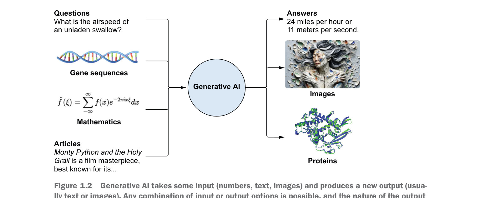
注意：视觉和语言并非生成式AI的唯一选项。音频生成（想想文本转语音，例如GPS报路名）、下棋（如国际象棋），甚至蛋白质折叠都使用了生成式AI。本书将主要聚焦于文本和语言，因为它们是GPT和LLM使用的主要数据类型。
顾名思义，这些模型并不小。具体来说，据传ChatGPT包含1.76万亿个参数，这些参数决定了它的行为方式。每个参数通常以浮点数（带小数点的数）形式存储，占用4字节的存储空间。这意味着该模型本身需要7TB的内存来存储。这个尺寸超过了大多数人的计算机内存容量，更不用说在拥有80GB内存的最强图形处理单元（GPU）中了。GPU是专用硬件组件，擅长执行使LLM成为可能的数学运算。目前，构建LLM需要许多GPU，因此我们已经涉及到大量的计算基础设施和跨多台机器的复杂性。相比之下，更普通的语言模型在大多数情况下只有2GB或更小——小5000多倍，在更标准的硬件上构建和使用这样的模型时，这是一个更合理的尺寸。
许多研究人员正在探索如何让LLM消耗更少的内存。有时，这些技术包括使用“混合精度”[2]方法，将参数存储所需字节数降至4字节以下。该方法用2字节或更少来存储部分LLM参数，在精度和内存效率之间做出权衡。最终，对精度的影响通常可以忽略不计。这种优化是研究人员为使LLM更高效利用资源而采取的众多措施之一。
GPU替代方案：虽然GPU是目前训练LLM最常用的硬件，但它们并非唯一选择。越来越多的公司正在开发专用硬件，这些硬件为训练机器学习模型提供了通用优势。例如，2018年，谷歌将其张量处理单元（TPU）[3]作为谷歌云平台（GCP）的一部分向公众开放使用。虽然TPU的计算能力通常低于GPU，但其专用架构使它们在特定机器学习任务上表现优于GPU。
在本书中，我们将解释大语言模型的工作原理，并为您提供理解它们所需的词汇。阅读完成后，您将对大语言模型是什么及其运行涉及的关键步骤有一个对话级的理解。此外，您还将了解大语言模型合理能力范围，特别是与部署或使用相关的考量。我们将讨论大语言模型的根本局限性，并提供如何规避这些局限性，或者何时应完全避免使用大语言模型及更广泛的生成式AI的建议。
请记住，构建ChatGPT、Claude或Gemini时，Transformer组件的组合方式非常微妙，本书主要关注这些系统的共性。事实上，我们无法知晓这些大语言模型之间的一些实际差异，因为尽管商业大语言模型提供商分享了大量关于其模型的信息，但他们并未透露某些可能被视为商业机密的信息。
鉴于基于Transformer的大语言模型将对世界产生的影响，本书特意面向广泛读者。未来几年，来自各种背景的程序员、高管、经理、销售人员、艺术家、作家、出版商等众多人群都将不得不与这些模型互动，或面临其带来的职业影响。因此，我们假设亲爱的读者您有基本的编程背景，熟悉编程的基本概念：逻辑、函数，甚至一些数据结构。此外，您不需要是数学家；我们会在必要之处展示一些数学知识，但这对于理解大语言模型的工作原理并非必需。
这种定位意味着本书中会呈现很少的代码。如果您想直接深入构建和使用大语言模型，Manning出版社的其他书籍，如Sebastian Raschka的《从零构建大语言模型》（2024年）或Edward Raff的《深度学习内部原理》（2022年），将与本书内容互为补充。然而，如果您想理解为何您正在使用的大语言模型会产生异常输出、您的团队应如何利用大语言模型、或应避免在哪些场景使用大语言模型，又或者您的同事缺乏机器学习背景且需快速具备对话级能力，那么本书正是您和您的同事所需的。
具体来说，本书第一部分聚焦于大语言模型的功能：它们的输入与输出、如何将输入转化为输出，以及我们如何约束这些输出的性质。第二部分则关注人的行为：人们如何与技术交互，以及这给生成式AI的使用带来了哪些风险。类似地，我们还将讨论使用和构建大语言模型时出现的一些伦理问题。
生成式AI（GAI或GenAI）将改变我们生产和与信息交互的方式。2022年11月ChatGPT的推出凸显了现代AI的能力，并吸引了全球大部分人的关注。目前，你可以免费在https://chat.openai.com/注册并尝试使用。如果你输入文本提示“用两句话总结以下文本”，然后跟上本章所有的介绍性文字，你将得到类似如下的结果。
“最近对人工智能，尤其是OpenAI的ChatGPT等大型语言模型（LLM）的关注激增，凸显了它们在自然语言处理方面的巨大能力。本书旨在为读者提供关于LLM的对话式理解，包括其操作细节、潜在应用、局限性以及使用时的伦理考量，同时假设读者仅具备基本的编程概念和极少的数学背景。”这相当令人印象深刻，对普通读者来说，这种能力似乎凭空出现。”当你访问OpenAI的网站并注册ChatGPT时，你可能会注意到一个类似图1.4所示的选项。
顾名思义，GPT-4意味着OpenAI（截至撰写本文时）正在开发其第四代GPT模型。像GPT-4这样的LLM是机器学习研究中的一个成熟领域，旨在创建能够综合和处理信息并生成看似人类输出的算法。这种能力开启了人与机器之间先前只存在于科幻小说中的多个交互领域。ChatGPT中编码的语言表示的强大之处使其能够实现令人信服的对话、指令遵循、摘要生成、问答、内容创作等众多应用。事实上，这项技术的许多可能应用可能还不存在，因为
对读者您而言，关键点在于这项技术并非凭空出现，而是过去十年机器学习领域逐年显著进步、稳步发展的成果。因此，我们对大语言模型的工作原理及其可能出错的方式已经有相当深入的了解。我们假设读者只具备最基础的知识背景，这样您就可以把这本书推荐给朋友和家人。（其中一位作者希望这本书能送给他的母亲——母亲为他深感骄傲，尽管并不完全清楚他的工作具体是什么。）因此，在深入之前，我们需要先填补背景知识上可能存在的巨大鸿沟。第一章的目标就是为你提供这些背景，从而第二章就可以开始回答这个问题：计算机究竟是如何总结本书引言部分的？
从市场营销角度看，人工智能是一个极佳的名称，尽管它最初是用来指代整个学术研究领域的。这种做法导致了一个微妙的问题，它让人们形成了对AI工作原理的错误认知模型。我们将努力避免强化这一模型。为了解释原因，我们将讨论为什么人工智能并非一个那么好的名称。我们可以通过思考一个简单的问题来轻松证明这一点：什么是智能？
你可能认为像智商（IQ）测试这样的东西能帮助我们回答这个问题。IQ测试与学业表现等诸多结果高度相关，但它们并未提供对智力的客观定义。研究表明，先天遗传和后天环境都在一定程度上影响一个人的IQ。我们也应对将智力简化成一个数字的做法持怀疑态度——毕竟，我们常批评一个人只是“书呆子气”而缺乏“街头智慧”。即使我们知道了什么是智力，又是什么让它成为“人工”的呢？智力难道是添加了人工香料和食用色素吗？
关键在于，IQ测试衡量的是你在有限能力范围内的表现，主要是在时间限制下解决特定类型的逻辑谜题，但它们无助于我们理解智力的本质。事实是，人们对智力的理解并不完美。人工智能领域长期以来一直试图让计算机——这种刻板、确定、遵循规则的机器——执行那些人类能够完成但无法给出精确定义或指令的任务。例如，如果我们想让计算机数到1000并打印出所有能被5整除的数字，我们可以写出详细的指令，几乎任何程序员都能将其转换成代码。但如果我要求你编写一个程序来检测任意一张图片中是否有猫，那将是一个截然不同的挑战。你需要在某种程度上精确定义什么是猫，然后处理所有检测猫的细节。我们到底如何编写代码来找出并区分猫的胡须和狗的胡须？当猫没有胡须时，我们又如何成功识别它？归根结底，这并不容易。然而，由于AI和机器学习专注于这些人类能完成但难以明确描述的任务，使用比喻来描述AI和机器学习算法变得尤为普遍。为了让计算机检测猫，我们提供了成千上万张猫的图片和非猫的图片作为示例。然后我们运行众多算法中的一种，通过一个具体而详细的数学过程来区分猫和其他物体。但在技术术语中，我们称这个过程为学习。当模型在新图片中未能检测到猫，因为那是一只狮子，而狮子不在最初的猫列表里时，我们常说模型没能理解狮子。
确实，每当我们想向朋友解释某事时，常常会利用双方都熟悉的共同概念来打比方。由于AI和机器学习的核心目标在于复制人类执行任务的能力，这些比喻往往使用了暗示人类真实认知功能的语言。随着大语言模型展现出接近人类水平的能力，这些比喻变得弊大于利，因为人们过度解读它们，开始相信它们比实际含义更多。
因此，我们将谨慎使用比喻，并提醒读者不要过度联想。有些术语，如学习，是值得理解的技术术语，但我们希望你对它们可能暗示的含义保持警惕。
有时类比在这本书中仍有帮助，但我们会尽量明确解释此类类比的边界。
注：大脑结构的抽象模型已被证明在许多领域都颇为有用。神经网络在语言、视觉、学习和模式识别方面取得了令人瞩目的进展。神经机器学习算法的进步、数字数据的急剧激增以及GPU等计算机硬件的爆发式发展，这三者的融合共同推动了当今ChatGPT的实现。
从这一讨论中得出的关键细节是：作为人类，你对你逐渐习得的语言有着天生的理解。你对语言的学习和使用是交互式的。通过进化，我们似乎都拥有相对一致的相互学习和交流方式。要深入了解这一概念，可以查阅语言学家诺姆·乔姆斯基提出的普遍语法理论。与人类不同，LLM通过静态过程学习语言的表示。当你与Claude或ChatGPT对话时，它机械地参与对话，尽管它从未有过对话经历。LLM习得的语言表示可能质量很高，但并非没有错误。它是可操控的，我们可以通过特定方式改变LLM的行为，以限制其知道或生成的内容。理解LLM通过从示例中推断出的关系来表示语言，有助于我们保持现实的期望。如果你打算使用LLM，它出错时有多危险？你如何利用语言的表示来构建产品或避免不良后果？这些是我们在本书中将要讨论的一些高层次关注点。
Transformer模型是由OpenAI提出的，用来指代他们在2018年引入的一种新型模型，该模型包含一种称为变换器的神经网络组件。尽管最初的GPT模型（GPT-1）已不再使用，但预训练和变换器的核心思想已成为近期生成式AI及Claude、Gemini、Llama和Copilot等工具革命的核心支柱。同样重要的是，要认识到这些基于GPT的AI工具只是LLM算法研究和应用广阔领域中的一个例子。除了ChatGPT的发布，我们还观察到LLM的惊人激增。一些LLM，如EleutherAI和BigScience研究工坊发布的模型，可免费提供给公众以推动研究和探索应用。如我们之前提到的，Meta、微软和谷歌等公司发布了其他具有更严格许可条款的LLM。任何人都可以用来构建应用或系统的公开可用LLM（有时称为基础模型）已经创造了一个由研究人员、爱好者和公司组成的活跃社区，他们正在探索LLM和生成式AI所带来的应用、局限和机遇。我们在本书中教授的概念几乎适用于所有LLM。每个LLM都使用与ChatGPT相似（如果不是完全相同）的结构来生成输出。一本书要包含适用于许多模型的通用总结似乎是不可能的。然而，这是可能的，原因有几个，其中最重要的是我们不会深入到你从零开始编码LLM所需的深度。自然，ChatGPT和其他商业LLM的部分内容仍然是商业机密。因此，我们的范围和描述有意地概括了当今所有生成式LLM的最常见方面。我们能够给出如此广泛适用总结的第二个原因是LLM的本质。虽然确实可以在构建和运行方式上进行许多调整，但该领域的研究人员一致发现，最重要的细节如下：
模型规模有多大，能否使其更大？构建模型使用了多少数据，能否获得更多数据？
这些结论对于那些自认为拥有重要见解或设计、能够显著改进LLM工作方式的研究人员来说可能令人沮丧，因为在许多情况下，同样的改进只需通过“扩大规模”或使用更多数据、更多参数来构建模型就能轻易实现。扩大模型和数据池的规模是围绕使用和构建LLM的许多伦理问题的关键组成部分，这一点我们将在第9章讨论。
我们将在后续章节详细讨论LLM的工作原理，但在这里也值得分享一个从研究ML算法中学到的关键经验。许多年来，
要想在任意任务上从算法中获得更好的性能，通常需要巧妙设计算法。你会研究问题、数据和数学，尝试推导出关于世界的宝贵真理，并将其编码到算法中。如果做得好，性能就会提升，所需数据减少，一切都很美好。你听说过许多经典深度学习算法，如卷积神经网络（CNN）和长短期记忆网络（LSTM），从宏观来看，它们都是人们深思熟虑、巧妙设计的成果。即使是更简单的“浅层”机器学习算法（如XGBoost），不依赖神经网络或深度学习，也是通过巧妙的算法设计创造出来的。
LLM展示了更新的趋势。它们不费心巧妙设计算法，而是保持简单，实现一个仅捕获信息间关系的朴素算法。在许多方面，LLM被迫注入算法的世界观更少。从根本上说，这提供了更大的灵活性。如果我告诉你过去人们正是通过相反的方法来改进算法的，你怎么会认为这样是个好主意呢？区别在于，LLM及类似技术规模更大，大得多。它们在更多数据上训练，并且有更强的能力捕捉更多句子中更多词之间的更多关系；这种蛮力方法似乎在性能上超越了经典机器学习方法。图1.5展示了这一思想。
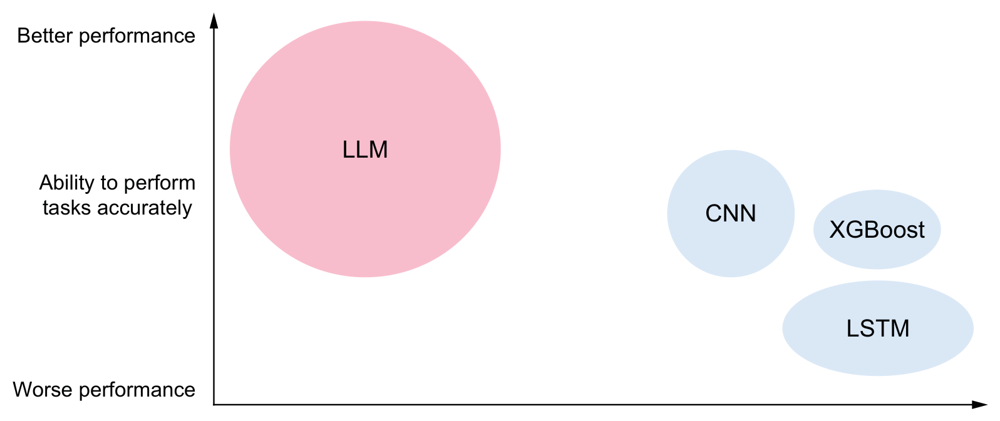
正如我们已经指出的，大并不代表所有指标都更优。目前，部署这些模型在物流和计算上仍是一大挑战。许多实际约束，包括响应时间、功耗、电池消耗和可维护性，都受到了负面影响。因此，LLM仅在“性能”这一狭义定义上有所提升。
然而，“做大”优于“取巧”这一教训仍然值得我们深思。有时在设计机器学习解决方案时，即使使用了LLM，最佳答案可能仍是“让我们去获取更多数据”。
在本书中，我们将举例说明LLM失败的方式，这些例子往往令人啼笑皆非或显得愚蠢。这些例子的目的并非说LLM无法完成任务。通过改变输入、设置或凭借运气，你往往能让LLM表现更好。
这样的例子旨在向你展示LLM可能失败的方式，尤其是在一些连孩子都能做得更好的简单事情上。当你阅读本书并亲自与LLM互动时，这些例子应该会让你停下来思考：“如果我用ChatGPT做困难的任务，但它却在简单的任务上失败，我是不是在自找麻烦？”答案往往是响亮的“是”！安全使用LLM需要对其输出保持一定程度的怀疑或质疑，需要验证正确性，并具备相应调整的能力。如果你用LLM来完成你自己无法完成的任务，你就有可能面临自己无法验证的错误结果。在整本书中，当我们进一步讨论如何使用LLM时，我们将不断穿插这一观点及其应对方法。很容易想象LLM在正常工作时的许多潜在便利——回复你所有的邮件、总结长文档、解释新概念。但很多人没有自然意识到的是，事情可能出错并迅速变得危险。
这种对抗性思维通常可以用一个初始例子来引发：比如你想学习如何制造炸弹。如果你问ChatGPT这个问题，你会得到一个规范的回答：“抱歉，我无法协助这个请求。”如果你处于危机或需要帮助，请联系当地政府或专业人士。”然而，研究人员最近展示了如何让ChatGPT和许多其他商业LLM毫不犹豫地回答这个问题，以及其他许多危险的信息请求[4]。
有人可能会争辩说，如果有人聪明到能想出让LLM上当的方法，他们很可能也能从其他来源得到他们想要的危险信息。这很可能没错，但与此同时，它没有考虑到LLM和生成式AI工具中的自动化规模。没有哪种AI或ML算法是完美的，如果数百万人提问，LLM可能在0.01%的情况下产生危险回应。ChatGPT拥有超过1亿用户[5]，因此就有1万个危险回应。当你考虑恶意行为者可能开始自动化什么时，问题会更严重。我们将在本书的后半部分进一步讨论这个问题。
我们期待您加入我们，一起探索LLM的工作原理。最终，您将详细理解在您的业务或日常生活中运用LLM革命性能力时需要考虑的诸多事项。
ChatGPT 是一种大型语言模型，而大型语言模型本身属于生成式 AI/ML 这一更大的范畴。生成式模型产生新的输出，而 LLM 在输出质量上独一无二，但其制造和使用成本极其高昂。LLM 大致模仿了人类大脑功能和语言学习的不完全理解成果。这仅仅是设计上的灵感借鉴，并不意味着这些模型具有与人类相同的能力或弱点。智能是一个多面向且难以量化的概念，因此很难断言 LLM 是否具有智能。从能力和可靠性角度来思考 LLM 及其潜在用途更为切实。人类语言必须在 LLM 的内部表示之间进行转换。这种表示的形成方式会改变 LLM 学习的内容，并影响你如何基于 LLM 构建解决方案。
译文范围: 章节内段落 1–86（共 86 个段落，渲染 55 个，9 个为图像/页眉/页码等不可译块）。
2 分词器：大语言模型如何看待世界
如第一章所述，在人工智能领域，借鉴人类学习的方式来解释机器如何“学习”往往很有帮助。你阅读和理解句子的过程是一个复杂的认知过程，随年龄增长而变化，并涉及多个顺序和并行认知过程[1]。然而，大型语言模型（LLM）使用的过程比人类认知过程更简单。它们采用基于神经网络的算法，从大量数据中捕捉词语之间的关系，然后利用这些关系信息来理解和生成句子。
我们对这些算法工作原理的探讨将从其输入——文本句子——开始。在本章中，我们将探究LLM如何处理这些句子，使其成为模型的输入。正如语言对你思考和加工信息至关重要一样，LLM的输入对于决定其能够执行的概念和任务类型也至关重要。
LLMs 处理句子似乎是理所当然的，但要完全理解，我们必须更加具体。当我们讨论 LLM 的工作方式时，你会看到文本句子对于驱动 LLM 的神经网络算法来说是不自然的，因为神经网络从根本上使用数字来执行其工作。如图 2.1 所示，LLM 采用的算法必须先将人类文本转换为数字表示，然后才能进行处理。分词是 LLM 用来将文本分解成可以编码为数字的片段的一种表示。

你可以把 token 想象成大语言模型处理文本的最小单位——一个“原子”，如果愿意这么类比的话，它是构成其他一切的最小组件。那么，文本的原子是什么？想一想：当你阅读这本书时，你的大脑用来处理意义的最小构建块是什么？两个自然的答案是字母和单词。我们很容易把字母定义为原子，因为单词由字母组成，但是你真的会有意识地阅读每个单词中的每个字母吗？对大多数人来说，答案是“不”。（如果你和本书的合著者之一一样有阅读障碍，这个问题会很奇怪。但认知处理复杂且未被完全理解，请容忍我们的类比！）你关注的是更显著的单词和单词部分。实际上，你很可能能理解这句话，即使我们没用正确的拼写或字母。人们无意识地使用单词的部分来处理文本，大语言模型也基于同样的原理构建。在本章中，你将学习将文本转换为 token 的过程。首先，我们将更详细地讨论 token；然后，讨论决定句子如何转换为 token 的程序。
大多数说英语的成年人到成年时大约认识30,000个单词[2]。最初为ChatGPT提供动力的LLM——GPT-3，拥有50,257个token的词汇量[3]。这些token并非单词，而是单词的组成部分，称为子词（subwords），这是一种介于单词和字母之间的表示。直观上，一个token捕捉了语言的最小有意义语义单元。例如，单词 `schoolhouse` 通常会被拆分为 `school` 和 `house` 两个token，而 `thoughtful` 则拆分为 `thought` 和 `ful`。这有助于识别常见词汇，并利用子词来解读从未见过的新词。人们经常使用一种类似的技术，称为语义分解（semantic decomposition），来理解从未见过的单词。我们直观地将新词拆分为组成部分，基于已经理解的词汇来把握其含义。
特征工程是将数据转换为更适合算法和任务形式的过程。要构建一个能检测给定文本语言的算法，你可以编写代码，将文本作为输入，输出每个字符出现的百分比。例如，如果文档中频繁出现 `é`，那么你就有了一个很好的特征，表明该文档更有可能是西班牙语或法语，而不是俄语或中文。优秀的特征工程需要思考模型如何工作、你想要实现什么，以及如何为模型与目标的结合准备数据。
分词（tokenization）就是LLM的特征工程；它至关重要，因为token是模型唯一与之交互的信息。token被视为独立的、抽象的事物，本质上是没有关联的。它们之间的关系是通过观察数据学习得到的。
回顾图2.1，很明显，`Dis` 和 `dis` 的token是相关的，唯一的区别在于一个以大写D开头。然而，你可以看到，模型将标识符4944分配给 `Dis`，将834分配给 `dis`。也就是说，模型本身看不到表示 `Dis` 和 `dis` 的token之间的任何联系，即使我们人类能看到明显的联系。模型甚至看不到 `Dis` 或 `dis`。为了让LLM处理token，我们必须将这些token转换为数字，这样模型就会看到数字4944和834。重要的是，模型没有任何直接方式知道这些token是相关的。token是从子词到唯一数值表示的映射。相应地，分词是将完整文本字符串转换为token序列的过程。如果你之前使用过机器学习库（尤其是任何自然语言处理[NLP]工具），你可能对某些更简单的分词形式有所了解。例如，一个简单的分词过程通过基于空格拆分文本来将文本分割成token。然而，这种方法限制了创建子词的能力，也难以处理不使用空格分隔单词的语言，比如中文。
分词遵循的一般过程如图2.2所示，包含四个关键步骤：

这一过程的首尾两端几乎没有选择余地或不同行为的空间。首先，你需要输入进行加工；最后，你需要为每个词元分配一个数字标识符，以便存储和检索与这个词元关联的信息。中间的两个步骤——归一化和分词——才是你可以自主选择处理方式的地方。
分词过程的最后一步是构建词汇表。模型的词汇表是指在训练过程中，当我们将数据交给算法学习时，所看到的唯一令牌的总数。要构建一个包含大量唯一令牌的丰富词汇表，几乎总是需要大量数据。为模型选择词汇表涉及一系列权衡：词汇表越大，模型能成功处理的信息就越多。比如一个只有几十个单词词汇量的一岁小孩。这个孩子并不是一个非常有效的沟通者（不过这没关系；他们还有很多时间去学习）。因此，更大的词汇量不仅有助于模型理解更多事物，也会使模型变得更大。如果词汇表过大，可能会因为使用它所需的计算量而使模型变慢，或者模型可能消耗过多的内存或磁盘存储空间，导致难以传输或共享到其他机器——例如，当作为软件应用的一部分部署时。
通过处理训练数据并识别令牌来构建模型的词汇表。每遇到一个新令牌，就根据已看到的唯一令牌数量给它分配一个唯一标识符。这个过程通常很简单：存储一个初始为0的计数器，每次发现新令牌时递增它。一旦过程完成，你就拥有了一个实际上充当编码器的分词器。分词器可以接收文本作为输入，并返回该文本的数值编码，供LLM算法作为输出使用。
GPT-NeoX 是一个公开可用的大语言模型，其词表存储在磁盘上约需 10 GB。数据量非常大，从数据存储和计算的角度来看，已经足以让许多实际应用场景变得困难。词表如此之大，以至于存储在 micro-SD 卡上会慢得不可接受，从而在手机或某些游戏机上的使用成为重大挑战。而且大到无法实时流式传输，必须下载并加载到处理器 RAM 中才能执行分词。然而，词表必须足够大，以表示模型在训练和使用过程中可能遇到的所有单词和子词。假设模型遇到一个不在其词表中的单词，且无法通过词表中的子词组合来表示。在这种情况下，模型无法获取该文本片段的信息。因此，必须权衡词表大小与模型解释多样内容的需求。在自然语言处理中，这通常称为“词表外词问题”，即遇到模型可用 token 无法表示的单词。词表大小是影响大语言模型大小的因素之一，因此讨论控制词表大小的方法和权衡至关重要。在本节中，我们将描述改变分词过程的行为如何影响词表大小，进而影响模型的能力和准确性。

在图2.3中，我们聚焦第二个转换步骤——归一化，该步骤将大写字符“H”和“W”转换为小写并移除标点符号。这些常见的归一化步骤源自经典的NLP管线，如今在现代深度学习方法中有时仍会使用。它们立即可喜的效果是减小词汇量。无需将“Hello”和“hello”表示为两个独立的词元，而会被映射到同一个唯一的词元。这种映射意义重大，因为每个句子开头的大写单词原本可能会在词汇表中产生一个大写版本的重复词。这种归一化还有助于处理各种拼写错误和笔误。
例如，在撰写本书时，我们曾输入“LLMs”、“LLms”和“llms”等各种大小写混合的笔误。将每种变体中的每个字符转换为小写，就能将所有笔误归并为一种简单形式，从而获得更小的词汇量并降低歧义。
然而，将文本转换为小写并不总是能降低歧义。考虑“Bill”和“bill”的情况。在前一种情况中，大小写至关重要，它表明“Bill”很可能是一个人名，而“bill”更可能指代货币单位（或“bill”的其他定义之一）。大小写不仅对理解文本的含义至关重要，也对识别文本中的错误至关重要。再次考虑我们在本书中错误使用“LLMs”大小写的各种方式。一个高质量的AI算法应该能够识别出我们犯了笔误并进行纠正！ChatGPT能够做到这一点，因此模型中需要保留大小写信息。因此，在词汇量和潜在模型准确性之间存在一个重要的权衡需要考虑。在经典的NLP乃至BERT（驱动ChatGPT的LLM的前身）等不算太旧的深度学习模型中，除了专门针对该目的设计的方案外，算法识别并修正笔误的能力极为有限。因此，过去用于设计稳健归一化步骤的大部分工作如今已被LLM舍弃。更庞大的词汇量是可取的，以便训练出能够学习理解错误的更强大的模型。
标记化过程中的规范化与分词步骤在很大程度上决定了词汇量的大小。图2.4展示了一种最直接的标记化策略。该策略遵循一个简单规则：每当文本中出现空格时，就将较大的字符串拆分为那些标记。以"hello world"为例，只需在Python中调用"hello world".split(" ")即可。这是一种合理的方式，也是我们人类阅读句子的方式。但它也引入了一些微妙的复杂性。
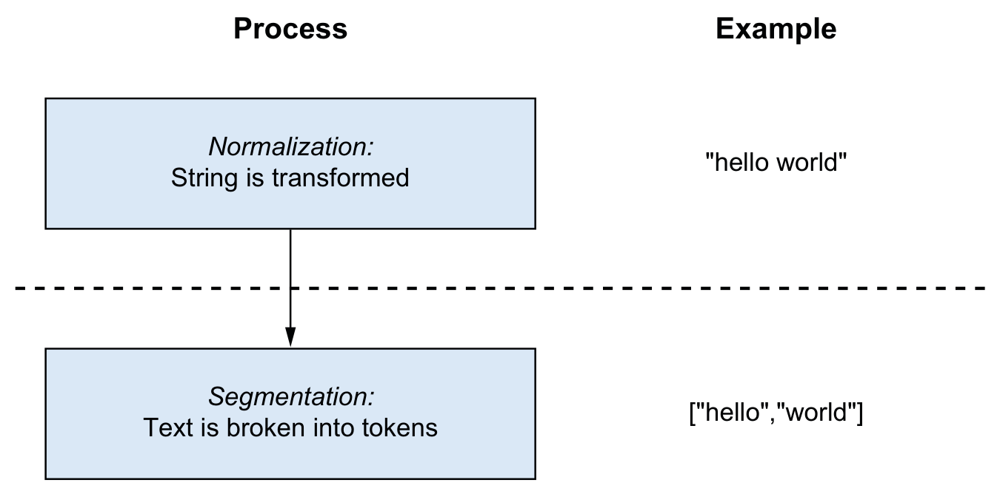
文本中出现标点符号会怎样？如果我们使用空格规则将字符串“hello, world”切分为["hello,", "world"]，就会遇到与大小写相似的问题。最终同一个概念"hello"与"hello,"会被表示为两个不同的token。传统方法通常通过删除标点或制定更复杂的分词规则来解决这个问题。虽然这朝着缩减词表大小迈出了正确一步，但手动指定分词规则并不能解决其他问题。例如，对于中文这种不使用空格分隔词语的语言，基于规则的分词策略会带来巨大挑战。
LLM的总体思路是减少手工特征工程，让算法承担繁重工作。因此，通常使用字节对编码（BPE）算法将字符串拆分为token。字节对编码是一种将单词拆分为常见子词序列的算法。当今的BPE通常使用自定义分词器，几乎不进行归一化。
注意：通过实验我们发现，许多类似ChatGPT的产品会移除一些不可打印的Unicode字符（Unicode确实奇怪），但除此之外基本保持你的文本原样。而大多数之前的语言模型确实使用了各种形式的规范化，如何更好地为LLM规范化文本，我们认为是一个值得探讨的开放性问题。
由于找到最高效的子词集在计算上很昂贵，BPE 采用一种启发式方法来走捷径。它首先将单个字母视为token，然后找出出现最频繁的相邻字母对，并将它们组合成子词token。该算法重复多次，继续处理子词token，直到达到某个阈值，词汇表变得“足够小”。例如，在第一轮中，BPE 算法检查英语中单个字母的频率，并发现字母“i”、“n”和“g”经常相邻出现。在第一轮中，BPE 可能会观察到“n”和“g”一起出现的频率高于“i”和“n”，因此它会生成 token i 和 ng。在后续轮次中，它可能会根据该字母组合与“ng”与其他字母或子词出现的频率对比，将这些 token 组合成 ing。一旦 BPE 达到停止点，它将识别出诸如“eating”和“drinking”等经常出现的组合作为完整单词。它还可能将“ing”作为一个后缀捕获，从而使以此子词结尾的其他单词也能表示为 token。算法完成后，我们得到的 token 既有表示完整单词的，也有表示子词的。图2.5 高层级地展示了这一过程。

注意：运行BPE算法创建词表出奇地昂贵，因为它必须多次读取输入数据来计算最常见的字母组合。虽然LLM在超过5亿甚至10亿页文本上训练，但它们的分词器通常只使用其中一小部分数据来创建。通常，分词器是在规模小得多（如一本小说大小）的文本集合上训练的。
BPE 过程初看可能有些怪异，但你可以将其视为识别语料库中常见字符串的一种方法。例如，BPE 几乎总能学会将 "New York" 表示为一个 token，这很有用，因为纽约州和纽约市在文本中频繁出现。将整个概念表示为一个 token 使得利用这类信息更加容易。实际上，大多数常见词会成为唯一的 token，而稀有词则有望通过子词的组合来捕获。例如，"loquacious" 会被 GPT-4 分词为 lo、qu 和 acious。这种方法之所以成功，是因为 "acious" 是表示倾向/习性的拉丁语后缀，这使得模型更容易正确处理一个非常见词。它也是一个失败案例，因为拉丁语前缀 "loqu" 被拆成了两个 token 而非一个，增加了学习难度。
使用 BPE 构建词表后，模型作者会出于各种原因手动添加额外的 token，例如对特定知识领域重要的词汇。正如我们将在下一节讨论的，在某些领域，拥有正确的 token 通过捕获细微含义可以产生显著效果。因此，作者通常会确保包含必要的 token。模型作者还会添加一些特殊 token，它们并不直接表示单词部分，而是向模型提供辅助信息。一些常见的例子是 "unknown" token（通常表示为 [UNK]），当分词器无法正确处理某个符号时使用；以及系统 token [SYSTM]，用于区分模型的内置提示和用户输入的数据，以及其他类型的风格标记。接受文本和图像输入的多模态模型使用独特的 token 来告知模型输入流何时在表示文本数据的字节和表示图像数据的字节之间切换。
OpenAI 在开发 ChatGPT 时决定使用 BPE 将文本编码为 token，并已将分词器作为开源包 tiktoken 发布（https://github.com/openai/tiktoken）。尽管如此，还有其他几种用于自动生成 token 的算法和实现可用，包括 Google 开发的 WordPiece 和 SentencePiece 算法 [4]。每种都有不同的权衡。例如，WordPiece 在构建分词词表时使用了不同的技术来统计候选子词的出现频率。SentencePiece 中实现的算法之一是处理整个句子，在计算 token 时保留空格，这可能会提升处理多种语言模型的输出效果。然而，BPE 是使用最广泛的算法。例如，它目前被 Google 最新的 LLM 独家使用。无论选择哪种算法，分词器的词表大小都是一个关键模型参数，由负责训练和增强分词器的数据科学家或工程师决定。接下来的章节将深入探讨有关词表大小以及在分词器开发过程中所做的其他决策中的一些考量。
### 2.2.4 分词的风险 如第一章所述，本书不会过多涉及编码。我们的目标是让你对LLM的工作原理有合理的理解，并去除一些神秘感，从而让你能专注于LLM如何应用于你的工作。分词是解开这个谜题的第一块拼图。它是一种简单但有效的策略，用于生成LLM的输入。你已经了解到，词汇量大小对模型的可部署性起着重要作用，在识别细微差别与构建词汇表带来的不必要冗余之间存在权衡，分词过程如何影响词汇量大小，以及如何通过BPE自动选择分词。
分词时所做的选择会影响LLM当前和未来的能力。这些选择涉及一些宏观层面的挑战，值得注意。为了进一步探讨这一话题，BPE有两个显著但又微妙的细节值得关注：句子长度与分词数量之间的关系，以及LLM可能被那些看似相同但二进制编码不同的字符（即同形异码字符）混淆的潜在风险。
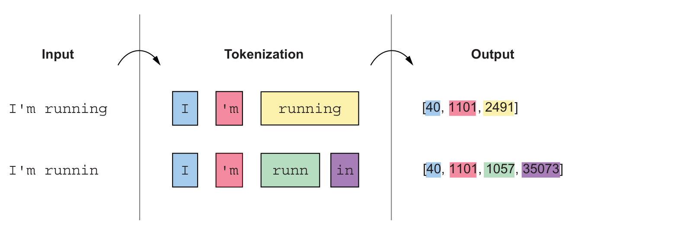
这种差异的产生是因为BPE贪婪地为任何输入片段寻找最小的token集。在这个具体案例中，字符串“running”在训练数据中出现得足够频繁，因此它拥有了自己的token。当缺少“g”时，我们的词汇表中没有“runnin”的token，因为这种变体在训练数据中可能很少出现。因此，“runnin”需要被拆分成至少两个token，得到run和nin。
分词器实现的这一细微之处是滋生软件bug的温床。不同的分词器在对同一字符串进行分词时可能给出不同的结果。在设计单元测试和基础设施时，务必牢记这一因素，以避免在升级或切换分词器实现时迷失或困惑，因为这些操作可能导致token生成出现新的差异。它还会影响LLM的评估，因为许多模型对添加的空格高度敏感，不一致的分词可能无意中导致比较不公平。
同形异码字符（homoglyph）是开发者在处理多种人类语言或考虑处理外部数据的安全隐患时可能遇到的问题。当输入来自任意用户时，有时可能带有恶意，试图欺骗你的模型做出不良行为。针对LLM的一种攻击方式就是同形异码攻击。同形异码是指两个或多个字符具有不同的字节编码，但在屏幕上渲染时看起来完全相同。例如，大多数西欧语言中使用的拉丁字母“H”与东欧和中亚广泛使用的西里尔字母“H”就是一组同形异码。BPE会将采用不同字节编码的同形异码编码为不同的token。因此，同形异码会增加文本中的token数量，改变LLM解析信息的方式，并推高你的计算成本。一个有趣的同形异码例子是Unicode字符U+200B，即“零宽空格”。该字符用于排版，占据空间，但不会打印任何内容、显示任何东西，也不会改变文档的渲染方式。零宽空格是Unicode规范中众多奇特有趣的东西之一，可能会给你带来麻烦。因此，许多服务会采用归一化步骤，移除这类奇怪字符，并将同形异码替换为规范表示（例如，任何看起来像“a”的字符都必须编码为a）。例如，OpenAI当前的tokenizer接口会移除同形异码。如果你打算在自己的硬件或用户设备上部署LLM，就必须考虑同形异码问题。
如果我们只关心LLM生成高质量人类文本的能力，那么文本分词的具体细节就不如构建这些模型所用的数据和算力重要。如果你为模型投入足够的计算能力和规模，它们最终会学到有用的表示，无论基础构建块是什么。但有时，分词会显著影响LLM的能力。本节将介绍一些例子。接下来的例子可能与你当前的工作或LLM的应用场景并不直接相关。这完全没问题；这些例子并不是要劝退你使用LLM。相反，目的是帮助你理解LLM学习到的范围受限于所选的表示方式，而且如果不进行重大的工程改造，这些问题可能无法绕过。如果你开始用LLM构建应用并遇到重大困难，思考一下分词如何成为实现目标的阻碍。如果确实是分词导致的问题，你几乎无法自行解决，因此最好考虑其他方法，比如手动扩充词汇表，加入对你的应用重要的 token。
用户经常喜欢让LLM解字谜或完成涉及文字游戏的任务。例如，图2.7展示了一个文字游戏，其正确答案取决于单词的精确字母序列和字母数量。

玩文字游戏可能不是你在应用中关心的事，但文字游戏失败的原因可能对你的问题高度相关。尽管这类例子大多是玩具问题，不具有特别的科学或商业重要性，但它们揭示了这些模型运行中的显著故障。它们可能在实际使用中出现，比如当模型难以创作包含押韵或谐音的诗歌时。例如，考虑你正在构建一个回答用户处方药问题的应用。药物名称通常又长又容易混淆，用户记不住或拼写错误，而由于LLM不理解字母，它可能会将一种药物的名称误认为是另一种药物又长又奇怪的名字。
因为药物名称不常见，即使有轻微拼写错误，它们的分词方式也会不同。例如，在GPT-3中，“Amoxicillin”和常见的拼写错误“Amoxicillan”没有共同的token！这导致LLM错误回答的风险更大，而风险本身更高，使得LLM应用更需要彻底测试、极端谨慎地工程化绕过，或者干脆完全避免。
分词显著影响涉及形式符号推理的任务，包括数学和下棋。数学和下棋都是 LLM 作为符号推理问题实现的，其中单个令牌在与其他令牌共同出现时，其互动和含义受特定规则支配。例如，为每个数字包含单个令牌的模型在算术上往往表现优于不含单个数字令牌的模型。这是因为数字 123456 在 GPT-3 中会根据分词器原始训练数据中这些令牌的频率变成两个令牌：["123", "456"]。这使得模型更难处理该数字中的各个数位。一些系统开发者通过在所有数字之间插入空格来规范化数字，例如 1 2 3 4 5 6，从而生成包含六个令牌的新输出（每个数字一个令牌），解决了这个问题。
这种数学能力的差异在图 2.8 中得到了充分说明，该图显示了整个训练过程中算术计算的表现。上方的曲线是典型的 BPE 分词器，而下方表现更好的曲线是同一分词器经过修改、实现数字级别分词的结果。

大多数LLM分词器能够表示Unicode覆盖的任何符号，这包括世界上大多数语言的字符。然而，这些分词器在特定语言中表示文本的效率差异巨大，尤其是在分词器通常针对不同语言的较小文本资源集进行训练的情况下。这可能导致基于LLM的商业服务出现显著不公平[5]，因为训练集中稀有语言的单词分词默认会采用更细粒度的子词集，从而增加令牌使用量。像OpenAI和Anthropic这样的商业LLM提供商通常向客户收费
按每个令牌计费，通常每个输入或输出的令牌只需几分之一美分。这些成本累积起来，考虑到一个高使用量的商业应用每天可能处理数千万个令牌。LLM完成一个请求所需的时间以及用户按令牌支付的费用，直接取决于分词器。因此，那些能被分词器更高效表示的语言，在经济上比表示效率低下的语言更具优势。以英语为基准，研究人员发现，使用ChatGPT和GPT-4时，回答德语或意大利语用户查询的成本高出约50%。与英语差异更大的语言可能产生更高的费用：Tumbuka语和保加利亚语的成本是英语的两倍以上，而宗卡语、奥里亚语、桑塔利语和掸语的处理成本是英语的12倍以上。
1 你期望以下单词或短语如何被分词？尝试自己拆分它们，然后通过一个实际的大语言模型分词器（例如 https://platform.openai.com/tokenizer）运行：
backstopped large language models Schoolhouse 你处理句子以理解它们的过程是一个复杂的过程，会随着年龄增长而变化，涉及多个顺序和并行的认知过程。2 你认为对于之前的每个示例，大写和小写字母有多大影响？尝试用各种大小写形式再次提交它们。
既然 token 是 LLM 操作的基本单元，那么从技术上讲，为什么一种语言被分词器表示的效率越低，其成本反而更高呢？
LLM 根据用户所说的语言对同一服务收取不同费用，这是否是一个伦理问题？你会认为这是一种歧视吗？
我们在这章讨论的分词细节是LLM的基础构建模块，它们决定了LLM能够有效表示的输入和生成的输出。分词是像ChatGPT这样的LLM的关键组成部分，用于开发文本的有效表示，以便在训练过程中面对海量信息时能够学习token之间的关系，解读用户输入并生成我们习以为常的高质量响应。LLM的潜力受限于或得益于其采用的分词策略和词汇表，以及我们在后续章节中探讨的其他所有特征。
分词是将句子转换为标记的过程，是大语言模型理解文本的基础。
标记是文本中代表内容的最小信息单元。有时它们对应完整的单词，但更多时候表示单词片段或子词。
分词涉及将文本规范化为标准表示形式，例如将字符转换为小写，或转换Unicode字符的字节编码，使外观相同的字符采用同一编码。
分词还包含分割步骤，即将文本拆分为单词或子词。字节对编码（BPE）等算法提供了一种机制，可根据训练数据集中字母组合的统计出现频率，自动学习如何高效分割文本。构建分词器的结果称为词汇表，它是分词器用来表示所处理文本的所有单词和子词标记的唯一集合。
分词器词汇表的大小影响大语言模型准确表示数据的能力，以及理解和预测文本所需的存储和计算资源。
在大语言模型内部，标记用数字表示。因此，模型无法理解标记之间的关系，例如前缀和后缀，或两个标记共享相似字母集的事实。为支持特定知识领域，自动训练的分词器可以扩充，以提供对其应用重要的标记。不理解单个字母或数字的分词器在处理算术运算或简单文字游戏时会出现问题。
译文范围: 章节内段落 1–131（共 123 个段落，渲染 74 个，10 个为图像/页眉/页码等不可译块）。
3 Transformer：输入如何成为输出
在第二章中，我们了解了大型语言模型（LLM）如何将文本视为称为令牌的基本单元。现在，是时候讨论LLM如何处理它们看到的令牌了。LLM生成文本的过程与人类组成连贯句子的方式截然不同。当LLM运行时，它是在处理令牌，但同时不能像人类那样操作令牌，因为LLM不理解每个令牌所代表的字母的结构和关系。例如，英语使用者知道“magic”、“magical”和“magician”这些词都是相关的。我们可以理解包含这些词的句子都连接到同一主题，因为这些词共享一个共同的词根。然而，对构成这些词的令牌所代表的整数进行操作的LLM，如果不进行额外的连接工作，就无法理解令牌之间的关系。
因此，大语言模型沿袭了机器学习和深度学习领域长期采用的一种循环转换方法。首先，将词元转换为深度学习算法可以处理的数值形式。然后，大语言模型再将这些数值表示转换回新的词元。这种迭代循环不断重复，这与人类的工作方式截然不同。如果你的同事每说一个字之前都要掏出计算器算几道数学题，你肯定会觉得不可思议。
然而，大语言模型正是通过这个过程产生输出的。本章将分两个阶段来阐述这一过程。首先，我们将从宏观层面回顾整个过程，介绍基本概念，并构建一个大语言模型如何生成文本的心智模型。接下来，这个模型将作为框架，帮助我们深入探讨大语言模型用于捕捉词语与语言之间关系、并最终生成我们所熟悉输出的各个组件的细节和设计选择。
当前许多大语言模型（LLM）都采用一种名为“Transformer”的软件架构来解析词元并生成输出。该架构由一系列算法与数据结构组成，通过将信息表示为神经网络中的数字来进行存储。本质上，Transformer 是序列预测算法。尽管人们常将其描述为能对语言进行“推理”或“理解”，但它们实际做的只是预测词元。Transformer 有三种不同的词元预测方式。本书虽重点介绍著名的 GPT 架构（更正式的名称是“仅解码器模型”），但也值得提及仅编码器模型和编码器-解码器模型：
无论使用哪种类型的Transformer，模型的基本组件都由三个基本层构成，只是内部排列方式不同。对其互换性的一个合理类比是汽油汽车发动机：它们的工作原理相似，并且具有相同的基本组件。这些组件（即层）在引擎（即Transformer）内的组装方式会导致性能上的各种权衡。
LLM 是如今我们称为神经网络的数百种算法之一。然而，这个名称在多个方面存在误导。首先，如今所谓的神经网络方法包罗万象，以至于提到“基于神经网络的方法”并不能让读者清楚了解所描述的具体方法。其次，名称中的“神经”二字与神经科学或大脑的工作方式几乎毫无关系。有时，人们会直觉地产生“大脑不就是这么做的吗？我们能不能模仿这种行为并从中获益？”的灵感，但这并非当前大多数方法的来源。第三，神经网络描述的更多是一种数据结构的组装规范，而非某种特定的算法。想象一下盖房子：你会用木方、石膏板以及各种橱柜、油漆和设计选择来组装成一个家。每座房子看起来独一无二却又似曾相识：它们都是按照预期的方式组装起来的。神经网络的“层”是最基本的组件，但你可以用多种不同类型的层级以不同方式组合。Transformer 就是众多被组装成更大网络的组件之一。
图3.1描述了transformer模型的基本组成部分：嵌入层，它生成能够承载更多含义的token表示；transformer层，它基于词之间的关系进行预测；以及输出层，它将transformer内部使用的数值表示转换为人类可读的文字。

下面我们来详细看看这些层：
为了进一步理解LLM内部发生的事情，我们不妨将之前描述的内容重新构造成一系列步骤。图3.2就展示了这七个步骤。每个步骤我们都会标注对应的之前章节，或者注明是新内容。本章信息量较大，因此我们会逐步分解讲解。

分词、嵌入以及语言如何精准转化为模型可理解的形式，这其中存在诸多细微之处。最重要的细微之处在于，神经网络依然不直接处理token。总体而言，神经网络需要可操作的数值，而token拥有固定的数值标识。我们不能改变token的标识，因为该标识使得我们能将token转换回人类可读文本。因此，我们需要一个层，将数值形式的token转换为它们所代表的词或子词。
我们的 Transformer 需要数字来工作。这里指的是连续数值，因此我们可以使用任何小数，如 0.3、-5、3.14 等。同时，每个 Token 需要多个数字来表示，以捕捉含义的细微差别以及 Token 之间的关系。如果试图仅用一个数字表示每个单词，就会难以捕捉一词多义、同义词、反义词以及它们所产生的关系。例如，你可能希望一个词的反义词可以通过将该词乘以 -1 得到。如图 3.3 所示，这很快会得出关于词关系的荒谬结论。
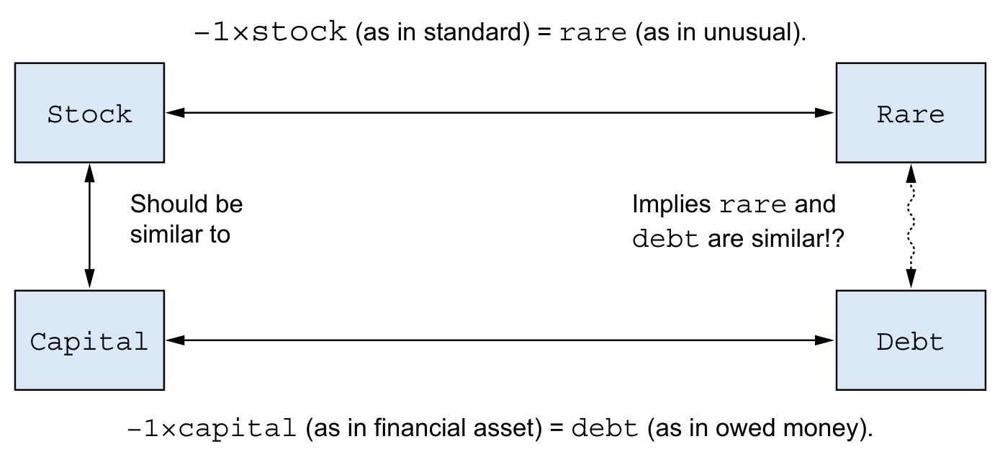
例如，我们有一个表示“股票”的token，我们任意决定将其转换为某个数字（如5.2）。我想给相关的金融词汇（如“资本”）赋予类似的数字（如5.3），因为它们的含义相近。还有“股票”其他含义的反义词，例如“稀有”。假设我们使用负值来表示反义词的概念，并给它一个值-5.2。但现在情况变得复杂，因为“资本”的另一个反义词是“债务”。但如果反义词就是取负，那么“债务”和“稀有”就有了相似的含义，这很荒谬。图3.3说明了这个问题：当我们用一个单一数字来表示一个词时，我们无法编码它们之间的关系而不暗示与其他词的奇怪关系，而且我们甚至还没超过四个词！

关键在于使用多个数字来表示每个词元，从而找到能更好适应单词间不同关系的表示。图3.4展示了一个使用两个数字的示例。我们可以看到，bland几乎与rare和well-done等距，而bank则与这三个词相距甚远，反而与stock相近。我们甚至还能额外加入几个单词。使用的数字越多（在该领域的术语中称为“维度”），就能表示越复杂的关系。
维度灾难。如果更多维度能更好地捕捉微妙的含义，那为什么不使用尽可能多的维度来表示数据呢？当处理大量维度时，会出现几个问题。一个主要问题是，LLM处理许多嵌入，增加维度会增加存储和处理嵌入所需的内存和计算量。此外，随着我们增加维度，语义空间的大小会爆炸式增长，训练机器学习模型以了解语义空间中所有位置所需的数据量和时间也会呈指数级增长。数学家Richard E. Bellman创造了“维度灾难”这一术语来描述这种现象，因为虽然我们想创建一个能够捕捉细微含义的空间，但我们受到所创造空间的基本属性的限制。
在LLM术语中，用于表示token的数字列表被称为嵌入。你可以将嵌入视为浮点数值的数组或列表。为简洁起见，我们称这类数组为向量。向量中的每个位置称为一个维度。如图3.4所示，使用多个维度可以捕捉人类语言中词语关系的细微差别。由于嵌入存在于多个维度中，我们常说它们位于语义空间中。在某些机器学习应用中（尤其是非文本场景），这被称为潜在空间。“语义空间”是一个含糊不清的行话，在该领域定义并不明确，但它最常被用作一种简略说法，表示代表每个token的向量嵌入具有良好性质：同义词/反义词之间的距离更近/更远，并且我们可以有效地利用这些关系。例如，在图3.5中，我们展示了一个著名案例：通过减去男性嵌入并加上女性嵌入，可以构建“女性化”变换。此变换可应用于许多不同性别词汇，以找到相同概念的女性词汇。图3.5右下角所有“皇家”词汇的聚集也是有意为之，因为高维空间中可以同时维持多种不同类型的关系。
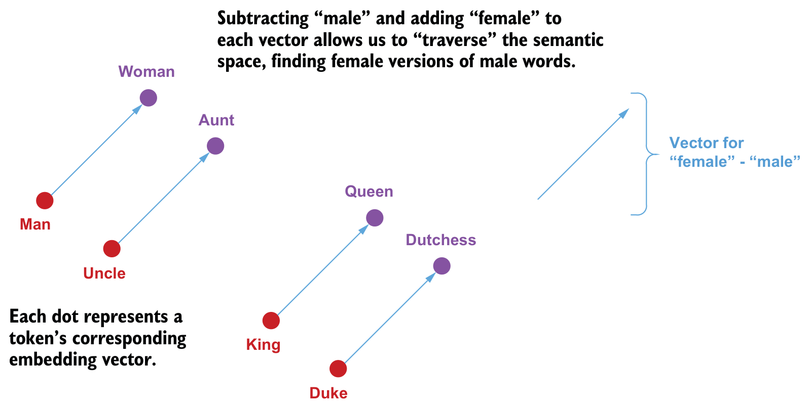
令人惊讶的是，我们无法保证这些语义关系会在训练过程中形成。只是碰巧它们经常会出现，而且被发现非常有用。以此类推，语义空间中的关系并非万无一失，数据中的偏见也会渗入其中。例如，模型往往会认为“医生”更接近“男性”，而“护士”更接近“女性”，因为在构建大多数模型所用的一般可用文本中，医生被描述为男性、护士被描述为女性更为常见。因此，这些关系并非发现的这个世界真相，而是对进入训练过程的数据的反映。
一个关键问题是，标准的Transformer无法理解序列信息。如果向Transformer输入一个句子并打乱所有词元，它会将所有可能的词元排列视为相同！这个问题如图3.6所示。

因此，嵌入层会生成两种不同的嵌入。首先，它创建捕捉词元含义的*词嵌入*；其次，生成捕捉词元在序列中位置的*位置嵌入*。这个想法出奇地简单。就像我们将每个唯一词元映射到唯一含义向量一样，我们也将每个唯一词元位置（第一个、第二个、第三个，以此类推）映射到位置向量。因此，每个词元会被嵌入两次——一次为其身份，一次为其位置。然后将这两个向量相加，形成一个代表词元及其在句子中位置的向量。图 3.7 概括了这一过程。

这些都是理解标记如何被转换为向量供Transformer层使用的全部细节。这个策略可能看起来有点幼稚，事实也确实如此。人们曾尝试开发更复杂的方法来处理这些信息，但这种“让一切变成向量，然后直接相加”的简单方法出奇地有效。重要的是，它在视频和图像领域也取得了成功。拥有一个足够简单且能解决多种问题的策略很有价值，这就是为什么这种朴素的方法得以流行。
Transformer层的目标是将输入转换为更有用的输出。大多数先前的神经网络层（如嵌入层）被设计为将关于世界如何运作的非常具体的信念融入其操作中。其理念是，如果编码的信念符合世界的实际运作方式，模型就能用更少的数据找到更好的解决方案。Transformer采取了相反的策略。它们编码了一种通用机制，只要有足够的数据，就能学习许多任务。为此，Transformer依赖三个主要组件：
这种术语对应Python中字典（dict）对象的行为：通过键在字典中查找项，从而生成有用的输出。区别在于Transformer是模糊的——我们不是只查找单个键，而是评估所有键，根据它们与查询的相似度进行加权。图3.8通过一个简单示例展示了这一过程。虽然查询和键以字符串形式展示，但这些字符串代表每个字符串通过嵌入层映射到的向量。让所有键都对一个查询做出贡献可能导致混乱，尤其是当查询与某个键精确匹配时。这个问题通过一种称为注意力或注意力机制的细节来处理。Transformer中的注意力机制可类比于人类关注重要事物的能力：你可以忽略无关干扰信息（即不良键），主要关注重要信息（最佳匹配键）。这个类比更进一步：注意力是适应性的，重要性取决于其他可用选项。例如，老板给你布置一周任务占据你的注意力，但火警响起会转移你的注意力，从老板转向警报（以及潜在火灾）。在生成下一个token时，Transformer将当前token的查询与之前所有token的键进行比较。比较查询和键生成一系列值，注意力机制利用这些值来计算。
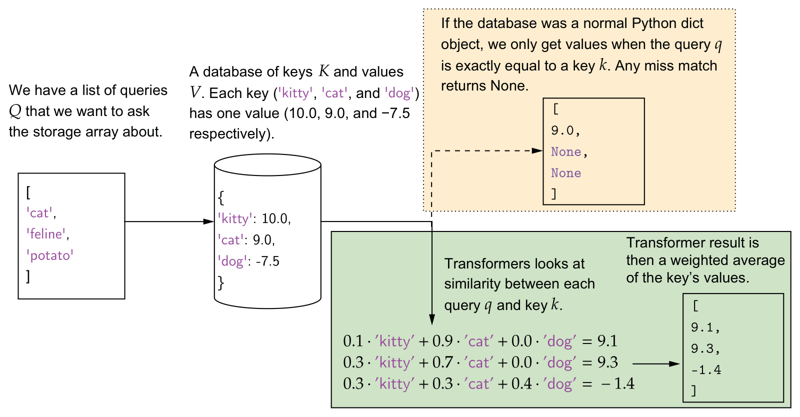
在决定接下来生成哪个 token 时，它应为每个可能的后续 token 分配多少权重。每个 token 的值告诉模型，每个先前 token 认为其概率贡献应当是多少。然后注意力函数计算下一个 token，如图 3.9 所示。
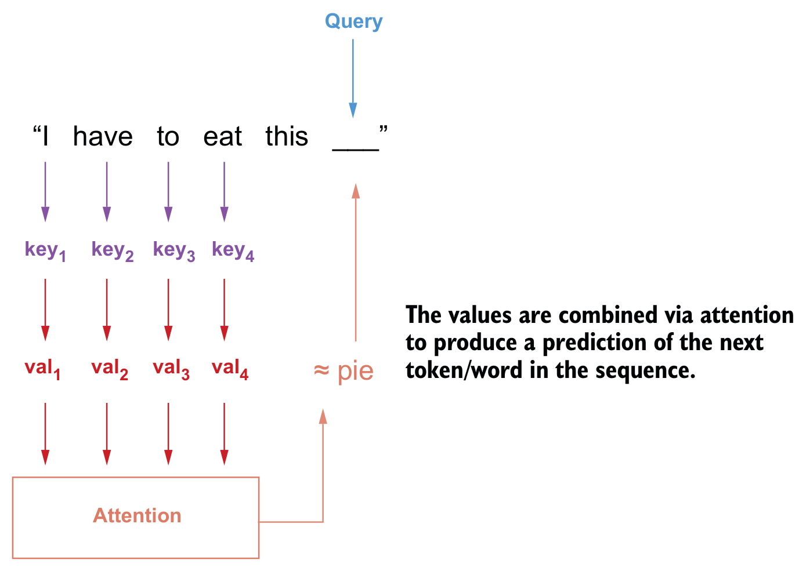
注意力机制背后的数学原理是什么？
我们不会详述注意力机制背后的所有数学细节，因为那会占据大量篇幅，且已有其他资料详细阐述。我们在先前出版的《深入深度学习》[2] 的第11章中，以更深入的技术细节解释了Transformer和注意力机制。
对于好奇的读者，核心公式为 Attention = Softmax((Q·K)/√d) V (3.1)
查询、键和值分别由独立的矩阵Q、K和V表示。矩阵乘法使注意力机制在GPU上实现时高效，因为GPU可以并行执行大量乘法运算。softmax函数通过将许多值分配为几乎等于零，实现了注意力类比的主要组成部分，从而使Transformer忽略不重要的项。
归一化和前馈网络的最后一步是通过跳跃连接应用层归一化和一个线性层。如果你对这些术语不熟悉，那没关系；你不需要了解这些数学知识也能理解本书的其余部分。如果你想了解这些术语的含义，我们推荐你阅读《Inside Deep Learning》[2]以获得技术细节上的理解。
一个Transformer模型由数十个Transformer层组成。中间Transformer层执行与图3.9中描述的相同机械任务，尽管不需要预测一个token，因为只有最后一个Transformer层需要预测实际的token。Transformer层具有足够的通用性，组合多个中间层使模型能够学习复杂任务，如排序、堆叠以及其他复杂的输入变换。
LLM的最后阶段是解嵌入层，它将Transformer使用的数值向量表示转换为特定的输出标记，从而最终返回与该标记对应的文本。这一输出生成过程也称为解码，因为我们解码Transformer向量表示以获得一段输出文本。这是使用LLM生成文本的关键组件。不仅解码当前标记对生成输出至关重要，而且下一个标记将依赖于先前选择的每个输出标记。该过程如图3.10所示，我们递归地逐个生成标记。在统计学术语中，这被称为自回归过程，即输出的每个元素都基于之前的输出。
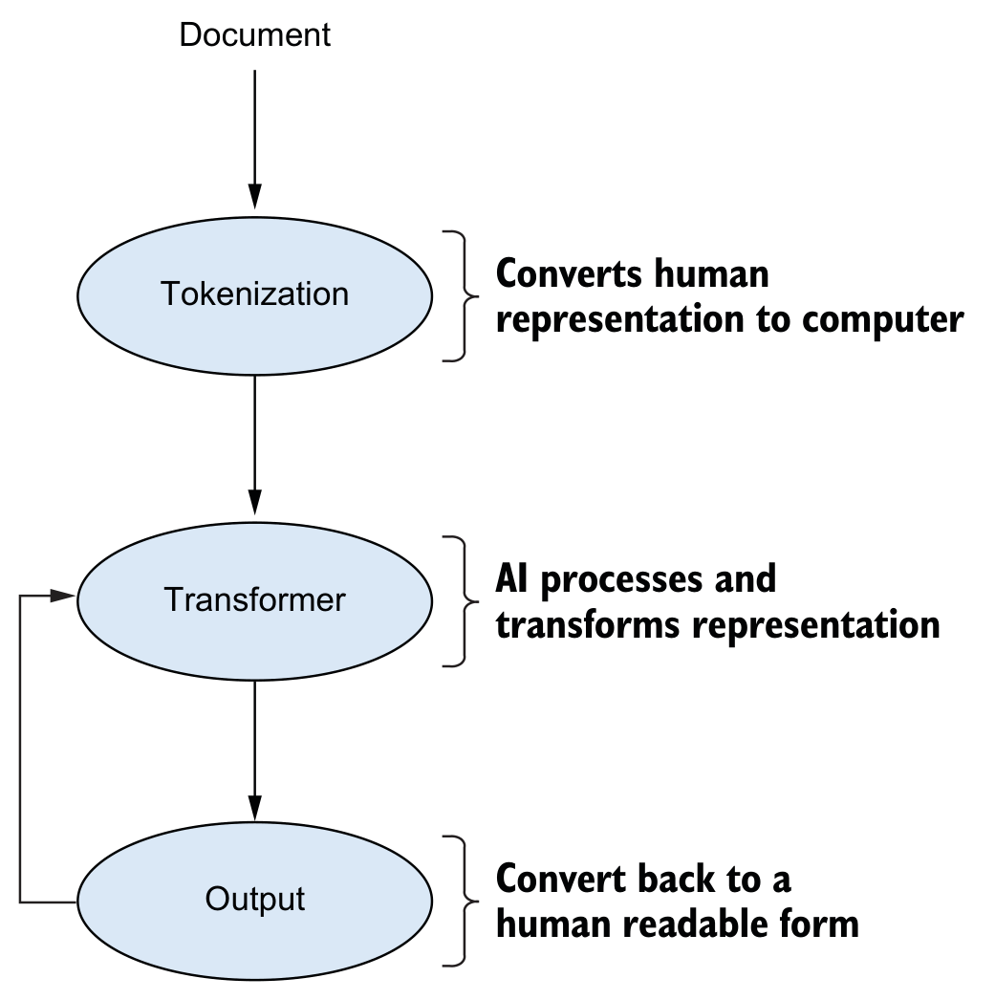
你可能想知道这个过程是如何停止的。在构建 token 词汇表时，我们会加入一些在文本中不会出现的特殊 token。其中一个特殊 token 是序列结束（EoS）token。模型在训练时，文本的自然结束处会添加 EoS 标记，当模型生成新 token 时，EoS token 是它可以选择生成的选项之一。如果生成了 EoS，我们就知道应该停止循环，将完整文本返回给用户。另外，建议设置一个最大生成限制，以防模型进入异常状态而无法生成 EoS token。
该过程遗漏的关键环节是：如何将Transformer层输出的浮点数数组（即向量）转换为单个token。这个过程被称为采样（sampling），因为它基于LLM的输入和已生成的输出，使用统计方法从词表中选取样本token。LLM的采样算法会评估这些样本，以决定生成哪个token。有许多采样技术，但它们都遵循相同的基本两步策略：
1 对于词表中的每个词元，计算它成为下一个被选中词元的概率。
2 根据计算出的概率，随机选择一个词元。
如果你用过 ChatGPT 或其他大语言模型，你可能注意到它们对同一输入并不总是给出相同输出。解码步骤就是为什么你每次问同一个问题会得到不同答案的原因。词元被随机选择可能看起来违反直觉。然而，这是生成高质量文本的关键组成部分。考虑图 3.11 中的文本生成示例，我们试图补全句子“我喜欢吃。”如果模型总是选择概率最高的“寿司”作为下一个词元，那将是不现实的。如果在这种上下文中有人总是对你说“寿司”，你会觉得有些不对劲。我们需要随机性来处理这样一个事实：存在多个有效选择，并且并非所有选项都可能出现。
2. 对每个可能的 token 计算一个概率，大部分 token 的概率接近零。
BBQ 23% bbq 7%
3. 掷一次加权骰子，以决定下一个 token。
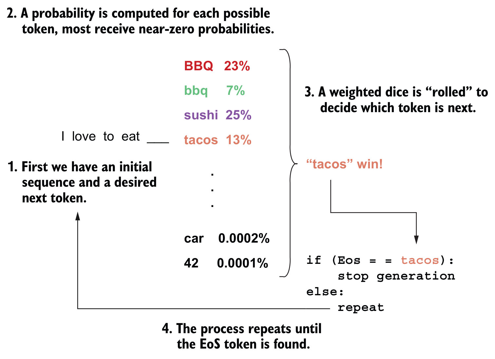
另外，在图3.11的例子中，注意其他词元（如42）由于概率极低，毫无意义。这再次说明，我们需要为每个词元分配概率，以判断哪些词元可能或不可能。
如何获得令牌的概率？
每个可能的下一个令牌被选中的概率各不相同。大多数令牌被选中的概率几乎为零。敏锐的读者可能会问：在不知道其他令牌的情况下，我们如何为一个令牌分配概率？我们通过给每个令牌一个分数来实现，该分数指示该令牌的嵌入与当前向量（即transformer的输出）的匹配程度。每个令牌的分数在−∞到∞之间任意取值，且独立计算。然后利用分数的相对差异来生成概率。例如，如果一个令牌的分数为65.2，而第二个令牌的分数为-5.0，那么这两个令牌的概率分别接近100%和0%。如果分数分别为65.2和65.1，则概率分别接近50.5%和49.5%。
类似地，得分0.2和0.1会给出与得分65.2和65.1相同的概率，因为我们是根据得分的相对差异来分配概率，而不是根据得分本身。
Transformer 有时会生成异常或无意义的内容。这种情况并不常见，但其他 token 的概率接近于零，最终总会有一个你意想不到的怪异 token 被选中。一旦选定了意外 token，后续所有生成的 token 都会设法去合理化这个异常输出。例如，如果 LLM 生成了“我爱吃粉笔”，你会相当惊讶。但这并非完全不合理，因为吃粉笔是一种叫做异食症的医学症状。一旦选择了“粉笔”一词，LLM 可能会转而谈论异食症或其他医学话题——当然，这得看你是否足够幸运，让这个异常输出处于“罕见但合理”的范围内，而不是一个完全离谱的预测。
注意：许多算法都可以计算用于选择生成词元的最终概率。其中一种是核采样（nucleus sampling），也称为Top-p采样，其过程是确定概率最高的词元作为潜在输出，并从该列表中选择要输出的词元。这种方法有助于避免不合理的预测。如果可以，你应该检查你的LLM使用哪种采样算法，以便了解其生成从较罕见到不合理输出的风险。
根据用户计划与LLM的交互方式，生成出人意料或富有创意的输出可能是人们所期望的。假设你使用LLM帮助头脑风暴新产品创意，并利用聊天机器人作为数字共鸣板来激发灵感。在这种情况下，你可能希望生成不寻常的输出，因为目标是发挥创造力，想出新的东西。
相反，有时我们完全不希望有创造力。LLM的一个潜在用途是离线搜索，你可以将LLM安装在（相对强大的）手机上，即使没有互联网连接也能提问/查找信息。在这种情况下，你希望LLM的输出是可靠的、切题且基于事实的。不需要创造性的重新解释。
LLM中一个称为“温度”的特性可以平衡这一权衡。温度变量（取值在0到1之间，默认值通常为0.7或0.8）用于放大低可能性令牌的概率（高温）或压低低可能性令牌的概率（低温）。考虑一杯水中的分子作为类比。假设我们想知道杯子顶部会出现哪个分子（别问为什么，先跟着思路走）。如果将杯子降到绝对零度，所有分子都会静止，那么杯子顶部的分子每次都会可靠地相同（即，你总会生成相同的令牌）。如果你将杯子温度升高到开始沸腾，分子会四处弹跳，使得杯子顶部的分子基本上是随机的（即，你得到一个完全随机的令牌）。随着温度的上下调节，你改变了平衡：要么选择更大的随机性（从而通常更具创造力），要么聚焦于最可能的下一个令牌（从而保持生成内容更切题）。在实际应用中，考虑我们的例子“我喜欢吃”，更高的温度会导致生成不同类型的食物，不仅仅是披萨或寿司，还可能是更不典型或更具体的食物，比如威灵顿牛排或素食辣椒。
本章我们涉及了很多内容。嵌入层、Transformer层和解嵌入层是让LLM运转的核心构建模块。关于LLM如何编码含义和位置，然后如何利用多层Transformer来揭示文本结构，这些概念对于理解LLM如何捕捉信息并产出高质量输出至关重要。但我们还有更多细节需要探讨！我们最初是如何通过分析海量数据来创建这些层，从而生成嵌入和概率的呢？在第4章中，我们将继续探讨如何将数据输入这个架构，并通过训练过程激励LLM“学习”文本中有意义的关系。
尽管LLM以词元作为语义的基本单位，但在模型内部，它们以嵌入向量而非字符串的形式进行数学表示。这些嵌入向量能够捕捉邻近性、差异性、反义关系以及其他语言描述性属性。位置和词序并非Transformer天然具备，而是通过另一个表示相对位置的向量来获得。模型通过将位置向量与词嵌入向量相加来表示词序。Transformer层类似于一种模糊词典，对近似匹配返回近似答案。这种模糊过程称为注意力机制，其使用的术语“查询”、“键”和“值”类比于Python字典中的键和值。
ChatGPT是仅解码器Transformer的一个例子，但仅编码器Transformer和编码器-解码器Transformer也同样存在。仅解码器Transformer最擅长生成文本，但其他类型的Transformer可能在其他任务上表现更佳。
LLM是自回归的，这意味着它们以递归方式工作。在每一步中，之前生成的所有词元都会被输入模型，以获取下一个词元。简单来说，自回归模型利用之前的东西预测下一个东西。
任何 Transformer 的输出都不是 token；相反，输出是每个 token 可能性的概率。选择特定 token 的过程称为解嵌入或采样，并且包含一些随机性。
随机性的强度可以控制，从而产生更接近真实的输出、更具创造性或独特性、或者更一致的输出。大多数 LLM 都有一个默认的随机性阈值，看起来比较合理，但你可能需要根据不同用途进行调整。
译文范围: 章节内段落 1–140（共 140 个段落，渲染 68 个，19 个为图像/页眉/页码等不可译块）。
在机器学习领域，“学习”和“训练”这两个词常被用来描述算法观察数据并基于这些观察做出预测的过程。我们勉为其难地使用这一术语，因为尽管它简化了对算法运作的讨论，但我们认为这并不理想。从根本上说，这一术语会导致对LLM和人工智能的误解。这些词暗示算法具有类似人类的特质，诱使人们相信算法展现出涌现行为，并且能力远超其实际水平。从根本上说，这一术语是不正确的。计算机的学习方式与人类学习毫无相似之处。模型确实会基于数据和反馈进行改进，但至关重要的是，要在机制上将这种改进与人类学习严格区分开来。事实上，你可能并不希望AI像人类一样学习：我们花费多年时间专注于教育，却仍然会做出愚蠢的决定。
深度学习算法的训练方式远比人类学习更具程式化。这里的“程式化”既有字面含义——使用大量数学运算，也有比喻含义——遵循一个简单的重复过程数十亿次直至完成。我们不会涉及具体的数学公式，但本章将助您揭开大语言模型训练的神秘面纱。许多机器学习算法都采用一种名为梯度下降的训练算法。这个算法的名称本身蕴含了一些细节，我们将通过高层次概述来回顾梯度下降在机器学习中的应用。一旦你理解了训练多种不同模型类型的通用方法，我们将探讨如何将梯度下降应用于大语言模型，以创建能够生成令人信服文本输出的模型。理解这些细节将有助于避免“学习”这类词汇所暗示的不准确含义。更重要的是，它还能让你更好地理解大语言模型在当前设计下成功与失败的情形，以及这类算法通常以微妙方式产生误导性输出的原因。
梯度下降是所有现代深度学习算法的关键。当行业从业者提到梯度下降时，他们实际上指的是训练过程中的两个关键要素。第一个是损失函数，第二个是计算梯度——梯度是一种度量，告诉你如何调整神经网络的参数，使得损失函数以特定方式产生结果。你可以将这两者视为两个高层次组件：
损失函数和梯度下降是用于生成机器学习模型的训练算法的组成部分。如今有许多不同的训练算法在使用，但通常每种算法都会将输入发送到模型中，观察模型的输出，并对模型进行调整以提高其性能。训练算法会反复执行这一过程无数次。只要有足够的数据，模型在面对未见过的输入时，就能反复、可靠地生成期望的输出。
我们将以想要赚钱为例，帮助建立一个关于合适损失函数的直观理解。确实，一个智能的人能够赚钱，所以如果你有一台智能计算机，它也应该能帮你赚钱。要为这个任务或任何其他任务（这些经验适用于超越LLM的任何机器学习问题）选择合适的损失函数，我们需要满足三个标准：具体性、可计算性和平滑性。换句话说，损失函数需要具备
具体且与模型期望行为相关；可在合理时间和资源内计算；且具有平滑性，即对相似输入，函数输出不会剧烈波动。我们将通过以下正例和反例，帮助您建立对每个属性的直观理解。
损失函数的具体性 首先，让我们开始这是一个关于具体性不强的糟糕例子。如果你的老板对你说：“造一台智能计算机”，那会是一个宏伟的目标，但不是一个具体的目标。回想一下，在第一章中我们讨论了定义智能有多么困难。你的老板到底想让这台计算机在哪些方面表现出智能？一台懂人情世故却不会做微积分作业的计算机能行吗？相反，你可以尝试优化一个具体的IQ分数，但这与你老板想要的相关吗？十多年来，我们已能让计算机通过IQ测试，甚至在大语言模型出现之前就能做到。然而，除了通过IQ测试和执行有限的任务外，这些计算机别无他用。归根结底，IQ测试与我们希望计算机做的事情并不相关。因此，将IQ作为机器学习或构建老板要求的智能计算机的成功指标并不可取。另一个例子涉及理财的挑战。设想一个场景，你想尽量减少所背负的债务。你甚至希望债务变成负数，即别人欠你钱！我们在这里用债务的例子，是因为它本质上是一个你希望使其变小的数值。这个类比与实践中的术语完美契合：你想要最小化损失，就像你想要减少债务一样。债务量也是一个客观的衡量标准，这使得它成为确保我们的损失函数在变化条件下依然相关的良好途径。最后，如果我们的总体目标是保持资金盈余，那么最小化债务与这一目标高度相关。最小化债务具备一个好的损失函数的所有特征！
术语说明：你可能也听说过损失函数被描述为目标函数。作为初学者，我们建议避免使用这个术语，因为它含义模糊。例如，不清楚你是想最小化（债务）还是最大化你的目标（利润）。这两种方法在技术上都可行：将最大化目标乘以-1，就变成了最小化目标。
你可能在某些语境下（如强化学习）听到“奖励函数”这个术语。这是合理的，因为强化学习算法通过执行期望行为来最大化奖励。
无论术语如何，目标函数、奖励函数和损失函数都满足同一个基本需求：它们提供了一种评估机器学习模型输出的方法。
损失函数的可计算性也必须能够用计算机快速计算。债务示例不适合这一点，因为所需的输入和输出并不易于计算机获取。更努力工作会增加收入从而减少债务吗？也许吧，但我们如何将你的努力编码到计算机中呢？这里的问题是，最小化债务的最关键因素难以量化，比如工作机会、你是否适合这些工作、晋升可能性等。因此损失是具体的，但与该损失相关的输入是不可计算的。一个更好、更可计算的目标是预测投资的损失。这个目标更好的原因很微妙。这个目标仍然是客观的，因为我们的算法从历史数据中学习。例如，历史上对债券X和股票Y的投资有特定的回报。输入现在也是客观的：你可以量化投入每项投资的现金数量。要么投入资金，要么取出资金。没有像“努力”这样难以编码的问题需要处理。有了历史数据副本，计算机可以快速计算投资的损失/回报。
我们需要的是平滑性。很多人通过思考光滑与粗糙的纹理，就能很好地直观理解平滑性的含义。但这里讨论的不是纹理，而是函数的平滑性，它可以通过绘制函数的图像来表现。例如，在尝试预测投资损失时，我们会遇到一个问题：投资回报通常不是平滑的。它们可能呈现出一种波动模式，价格图表参差不齐，带有急剧突变。这给学习带来了困难。图4.1展示了真实世界投资回报的不稳定值图表。
![图4.1
投资回报难以预测，部分原因在于它们并非平滑。（图像修改自[2]，遵循知识共享许可协议。）](assets/fig-4-1-c011ee570d.jpg)
不规律行为对任何预测方法来说都是个问题。最好始终对那些声称能很好预测此类非平滑数据的人或方法保持警惕。然而，“平滑”有一个精确的技术定义，如果损失函数不满足这一定义，那将是一个硬性障碍。依赖不连续性或值一致性中断的函数是最常见的非平滑函数，但我们希望在实际中能够使用它们。图4.2展示了一些非平滑函数的示例，以帮助理解。平滑性通常由于不连续性（如中间图所示）或函数值的明显变化（如右图所示）而受到抑制。
我们不会深入探讨那些定义何物平滑以及平滑函数中哪些值变化可接受或不可接受的正式数学定义。不过，我们已提供了足够背景知识来理解所需内容。需要理解的关键在于，你对平滑含义的直觉——即值连续变化——是衡量损失函数可行性的良好指标。这看似随意，但实则是个普遍问题。假设你想构建一个模型来准确预测癌症。准确率不是平滑函数，因为你需要统计总预测中的正确预测个数。例如，若有50名患者，正确预测了48例，平滑函数可以取到48.2、47.921351等任意数值。然而，实际癌症病例数只能取整数1, 2, 3, ..., 48, 49, 50，因为不存在部分癌症病例。

如何处理非平滑损失？
准确率是最常见的预测指标之一，但我们却无法在训练算法时使用它，这或许令人震惊。但事实确实如此！那么我们该如何处理这一奇怪的现象呢？答案是创建一个代理问题。代理问题是一种替代性的问题表述方式，它与我们要解决的问题相关，但性质更优良。在这种情况下，我们使用交叉熵损失函数来代替准确率。虽然我们在此不会深入探讨交叉熵损失的细节，但它的使用表明，代理问题是机器学习与人工智能中使用的核心技巧。
这一讨论引出了关于LLM学习方式的另一个关键要点，该要点对大多数算法都适用：我们用于训练它们的技术并不总是聚焦于我们希望它们做什么，而是聚焦于我们能让它们学习什么。这种聚焦可能导致激励不匹配，从而产生意外结果或低性能。在审视第二个主要训练组件——梯度下降之后，我们将讨论LLM损失函数的本质如何导致这种激励不匹配。
拥有损失函数是执行梯度下降的前提条件。损失函数客观地告诉你任务完成得有多差。梯度下降是一种用于调整神经网络参数以减少损失的方法。具体是通过损失函数比较输入训练数据和神经网络的实际输出与预期输出。在这种情况下，梯度是指你需要改变神经网络参数的方向和幅度，以减少损失函数衡量的误差。梯度下降告诉我们如何对神经网络的所有参数进行“微调”，以提高性能并缩小预期输出与实际输出之间的差距。图4.3展示了这一过程的示意图。
输入在训练算法时需要知道正确的输出（即标签）。
标签
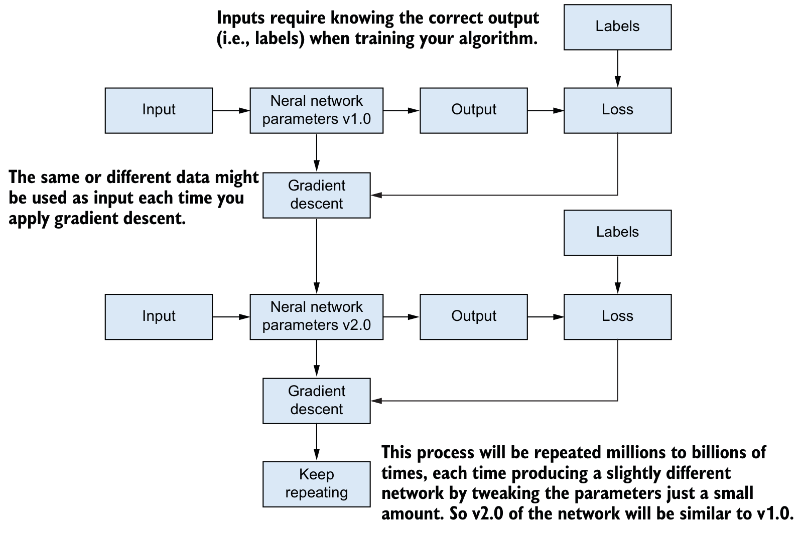
如图4.3所示，每次应用梯度下降时，我们都会创建一个新的、略有不同的网络。由于变化很小，这个过程必须执行数十亿次。这样，所有微小的变化累积起来，最终使整个网络发生更显著、更有意义的改变。
因为用数十亿个token进行训练，所以会有数十亿次参数更新。数据越多，运行梯度下降的次数就越多。数据越少，运行梯度下降的次数就越少。用于训练大模型的数据量，远超一个人一生的阅读量。
梯度下降是一种不断重复应用的数学过程，毫无偏差。它并不能保证一定能奏效，或找到最佳甚至较优的解决方案。尽管如此，许多研究者仍对这一相对简单的方法如此实用感到惊讶。为了帮助你理解梯度下降的工作原理，我们将用一个简单的例子：把球滚下小山丘。球的位置代表神经网络中一个节点的参数值，训练算法可以改变它。小山丘的高度代表损失量，描述模型在训练输入上的表现有多差。我们希望把球滚下山丘，进入最深的山谷，因为那是损失最低的区域，表明模型表现最佳。图4.4展示了这一示例。

如你所见，小球可能落入许多低谷。行业术语称此问题为非凸的，因为有多条路径能降低损失，但并非每条路径都必然通向最优解。还需注意的是，这并非一个类比。梯度下降实际上就是用这种方式看待问题的。这些例子展示了梯度下降如何作用于只有一个参数需要优化的模型。在训练大语言模型时，同样的过程应用于数十亿个参数。
因此，从这个位置出发，我们采用贪心策略，寻找让球沿山坡向下移动的方向。我们在图4.5中应用了两次梯度下降。这表明贪心选项是向左移动。当我们通过调整参数向左移动时，球会沿着斜坡微微下滑。从图中可以看出，向右搜索存在更优解，但由于算法过于简单，梯度下降不太可能找到它。要在这种情况下找到最优结果，需要一种涉及搜索和探索的更智能策略，但在实践中如此做的成本过高。
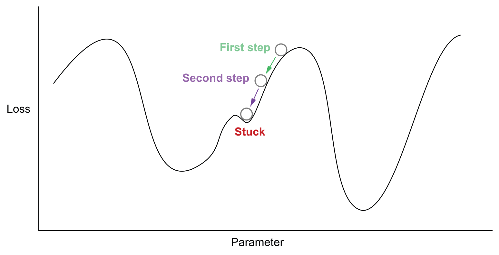
同样，注意在图4.5的第二步中，小球卡住了。显然，继续向左移动会实现更低的损失，但这个结果之所以显而易见，是因为我们能看见全貌。梯度下降无法看到整个图景，甚至连附近区域也无法看到。它只知道由当前参数和损失函数决定的精确位置。因此，它是一个贪心过程。像梯度下降这样的贪心过程是简化方法，具有可计算性的理想特性——它们可以多次运行且计算代价不会过高，从而达成结果。贪心过程是短视的，因为它们仅基于当前状态选择下一步最优操作，尽管可能存在更广泛、更优的解决方案。它们这么做是因为，评估当前及所有可能的未来状态是不可能的，因为需要考虑的潜在结果数量太多。计算量实在太大。人们希望，利用有限信息做出许多简单的局部最优决策，通常能带来最积极的结果——在本例中，即最小化损失函数的值。
现在我们已经理解了深度学习算法是如何通过指定一个与梯度下降配合使用的损失函数来训练的，我们可以讨论这如何应用于大语言模型。具体来说，我们将重点介绍用于训练大语言模型的数据和损失函数或奖励函数。大语言模型通常在人类撰写的文本上进行训练。具体来说，它们被明确地训练来模仿人类生成的文本。虽然这听起来有点显而易见（它们还能被训练做什么呢？），但这一细节常常被忽视或与其他事情混淆，即使是该领域的专家也不例外。特别是，语言模型并非被训练来做以下任何一件事：
记忆文本、生成新想法、构建世界表征、生成事实准确文本。在深入之前，有必要进一步解释这一概念。当训练一个模型下棋时，它因获胜得到奖励而学会下得很好。相比之下，语言模型只有生成与训练数据完全一致的文本时才会获得奖励。因此，LLM生成的与训练语料文本相似的所有文本都会获得高奖励（或低损失），即使这些生成内容并不真实或不符合事实。正如4.1节所讨论的，这是损失函数与设计者更高层级目标之间错配的一个例子。LLM是在从互联网抓取的数百GB文本数据集上训练的。互联网因包含大量错误（和怪异）信息而闻名。在大多数任务上表现更好的LLM，往往在那些训练数据中常被歪曲的任务上表现更差（参见https://github.com/inverse-scaling/prize的逆缩放奖）。例如，研究人员一致发现，更好的语言模型也更擅长复述常见的错误知识[3]，模仿刻板印象和社会偏见[4]。它们倾向于陷入强化错误的恶性循环。例如，在生成包含bug的代码后，它们更可能生成包含更多bug的代码[5]。这些东西在训练文本中很常见，因此LLM因预测它们而获得正奖励，即使这是错误的。因此，对于LLM来说，基于其损失函数变得更好，也意味着在需要真实性和正确性的任务上变得更差。
之前我们说过，LLM 因生成"看起来像其训练数据"的内容而获得奖励。在本小节中，我们将更具体地探讨这意味着什么。LLM 的训练方式是：向模型展示一个句子的前几个词元，让其预测下一个词元。损失基于该预测相对于训练数据的准确度。例如，模型可能看到"This is a"，并被期望生成"test"。如果模型生成了"test"，则得分；否则失分。这一过程对文本的所有起始片段都适用，如图 4.6 所示。图中，模型被训练独立预测每个高亮显示的词。这种设置并非 LLM 独有，它早已被用于训练循环神经网络（RNN）。然而，LLM 之所以变得如此流行，关键原因之一在于其训练效率远高于 RNN。RNN 必须按顺序逐代训练，因为每个新生成的词都依赖于之前选择的词。而 LLM 由于第 3 章讨论的 Transformer 架构，可以并行训练所有生成步骤。这种并行训练相关生成的能力带来了巨大的速度提升，使得大规模训练成为可能，也是利用海量数据构建当今最先进 LLM 的先决条件。我们之前讨论过，预测下一个词元可能存在问题，因为算法可能会被激励去产生不正确或事实错误的内容。我们还需要讨论，尽管存在这个问题，这种方法为何仍能产生如此令人信服的输出。一个合理的问题是：一个旨在生成最可能的下一个词元的算法，如何能看似执行某种我们可能误认为推理的任务？

为了培养这种直觉，想象一下你会如何尝试预测给定句子中的下一个词。计算机没有快速响应的压力，所以你可以慢慢来。考虑句子“I love to eat <blank>”，猜猜什么词可能填入<blank>。句子的前面部分为你提供了有价值的上下文。既然我们在讨论吃，你几乎可以立即将范围缩小到食物。计算机保存所有可能食物的列表并不困难。现在，如果你考虑本书作者的背景，你会有更多的上下文。我们是来自同一地理区域的美国人，这使得某些美食比其他美食更有可能。LLM不会拥有这个背景，但如果句子更长且上下文更多，你可以像图4.7所示那样开始缩小选择范围。

当你识别出前文中的关键词或短语时，你就能洞察到接下来最可能预测的单词。计算机执行这些计算所进行的处理远超人类所需。这种暴力关联主要将范围缩小到非常合理的程度。再次强调，模型将经过数十亿次更新来优化这些关联，从而获得一种有用的能力，这种能力与我们期望的能够理解和响应人类文本的算法目标相关联。然而，相关并非因果，这种下一词预测策略可能导致幽默的错误。大语言模型容易犯“循环论证”错误，即问题的前提暗示了不真实的内容。由于大语言模型并未针对准确性或矛盾进行训练，它会尝试生成一系列可能紧随你误导性问题之后的人性化文本预测。图4.8展示了ChatGPT应对此类问题的一个例子，我们询问了干意面的异常强度。

意大利面能支撑自身重量数百倍这一论断的核心是荒谬且不真实的。然而，算法已被预设为通过格式化问题“为什么X如此坚固？”来提供关于材料抗拉强度的答案。模型能提取这一关键上下文。先前的训练数据很可能基于一个事实性问题来解释此类材料属性，这促使模型预测类似回答是合适的。句子的主语（意大利面）和宾语（10磅重物）被用于调整回答的次要细节，而回答的其他部分则是通用的。
自回归式下一个词预测策略及其在训练过程中作为损失或奖励函数的本质，为我们理解LLM生成回复的特性以及它们潜在的事实错误提供了宝贵视角。然而，这同样解释了为什么LLM在信息检索方面能够表现出色——它们是一种远比标准搜索引擎强大的关键词搜索工具。针对非事实性回复的局限性，存在多种设计思路来规避。例如，许多LLM方法会在生成结果中添加引用，以便快速验证生成文本所依据的内容是否准确。LLM还可以充当宝贵的共鸣板，一个可以与之碰撞灵感、激发创意的准合作伙伴。关键的是，这也有助于你理解一个应避免使用LLM的重要场景——处理全新问题和任务时，因为此时它们更容易产生错误。LLM通常不擅长执行全新任务。判断你的任务是否新颖可能颇具挑战，因为互联网上内容包罗万象，无奇不有。互联网上存在着大量随机内容，包括如何通过编程绘制鸭子和独角兽的竞赛[6]。如果任务与之前见过的某个任务足够相似，或者与训练数据中的其他内容结构类似，你可能会得到看似合理的结果。这种结果可能非常有用，但当你任务与训练数据中已有内容的差异度增大时，其质量会下降。例如，我们请ChatGPT用Python编写计算数学常数π的代码。这个任务并不新颖；网上有大量类似代码，ChatGPT忠实地为我们返回了正确的代码。
def calculate_pi(terms):
pi = 0
for i in range(terms):
term = ((-1) ** i) / (2 * i + 1)
pi += term
pi *= 4
return pi
Tests the测试该函数；项数越多，近似越精确。print(calculate_pi(1000000))。现在，我们让ChatGPT进行一项不算太难的外推。我们让ChatGPT将此函数翻译成编程语言Modula-3。这个任务不算太大的外推；Modula-3是一种风格类似的编程语言，且具有历史意义，它影响了当今几乎所有最流行语言的最终设计。然而，它过于冷门。如今你几乎找不到这种编程语言的例子，主要出现在大学编译器课程中。下一个清单展示了ChatGPT的合理尝试。正如你从本章上下文中所能预料的，ChatGPT犯了一些错误，已在清单中标记。
MODULE CalculatePi;
Missing EXPORTS Main;
IMPORT IO, Real;
PROCEDURE CalculatePi(terms: INTEGER): REAL;
VAR
pi: REAL := 0.0;
i: INTEGER;
BEGIN
FOR i := 0 TO terms - 1 DO
pi := pi + ((-1.0) ** FLOAT(i)) / (2.0 * FLOAT(i) + 1.0);
** isn’t a
** isn’t an operator.
END;
RETURN 4.0 * pi;
END CalculatePi;
PutReal can take only one
optional second argument,
and it’s not an integer.
BEGIN
IO.PutReal(CalculatePi(1000000), 0, 15);
END CalculatePi.
This short program has three errors that would prevent it from working. It is more
interesting that ChatGPT gets these wrong because it confidently extrapolates stan-dard coding practices from other languages. (In this case, confidently means that
ChatGPT does not warn us of its potential errors. One of the authors likes to say
that ChatGPT sounds like their most overconfident and often incorrect friend.) In
this case, ** is a commonly used exponentiation function, so ChatGPT decides that
Modula-3 supports this operation. As far as we can tell from scouring the internet,
Modula-3 has no documented example of how to exponentiate a variable. Because
most programming languages support this action with a ^, **, or pow() option, Chat-GPT just extrapolates one into existence. The correct answer would be that it must
first implement a pow function and then use it to compute pi.
The arguments provided to the PutReal function are another mystery. Our best
guess is that the 15 corresponds to an extrapolation of printing out 15 digits of a
floating-point value, a typical default when calculating pi. Regardless, it is not how
that function works.
The more significant point is that ChatGPT gets some of the nuanced details right
but only for the parts that can be found on the internet and are already explained
(e.g., FLOAT(i) is required, as is doing 4.0 * pi instead of 4 * pi). The tasks without
examples on the internet are the ones where ChatGPT makes errors.这个例子也突显了当前LLM中“推理”的感知与实际之间的局限。Modula-3的完整语言规范可在线获取，并记录了所有这些细节或它们的不存在。ChatGPT几乎必然见过许多其他编程语言规范、解析器规范以及数百万行常见编程语言的代码。如果一个人拥有这样的背景知识和资源，要完成避免所有三个错误所需的逻辑归纳应该不会太难。然而，LLM并不执行任何归纳过程，因此尽管有大量可用信息，它仍然会出错。这并不是说结果不令人印象深刻，它可以成为加速代码开发或使用不熟悉API和语言的有价值工具。但它也告诉你，这类工具对于广泛使用且文档完善的编程语言和API来说效果会更好，尤其是当它们符合预期标准时。例如，大多数数据库使用SQL语言，这使得对同样使用SQL的新型数据库如何使用的准确推断更有可能。
另一个值得注意的案例是，当LLM无法正确识别其应执行的任务时，它们会回答一个不同于用户意图的问题。无法正确识别任务曾是原始GPT-3等模型的一个重大问题，但后续工作通过增加训练数据中任务结构化示例的数量，显著提升了后来ChatGPT模型遵循指令的能力。然而，在某些情况下，ChatGPT仍然会无法识别正确的任务。例如，通过询问一个与常见任务略有不同的不寻常任务，或者以不熟悉的方式修改模型多次见过的题目，可以可靠地引发这种行为。一个例子是著名的逻辑谜题：用一条船将一棵白菜、一只山羊和一只狼运过河。谜题规定，山羊不能与白菜单独留下（因为山羊会吃掉白菜），也不能与狼单独留下（因为狼会吃掉山羊）。ChatGPT可以快速解决这个谜题，但如果我们稍微改变谜题的逻辑结构，模型会继续使用旧的推理，如图4.9所示。虽然通常很难将LLM的错误追溯到具体原因，但在本例中，模型欣然告诉我们“确保没有物品（白菜、山羊、狼）被无人看管地留在一起。”虽然这一指令在白菜/山羊/狼谜题的原始版本中是正确的（并且很可能基于逻辑问题中约束条件的描述），但模型并未意识到，在给定版本中，山羊和狼单独在一起是没有问题的。不仅无需按建议交换动物，而且ChatGPT的建议会失败，因为它将狼和白菜放在了一起，而这是我们明确禁止的。这种现象的另一个有趣例子发生在你移除“需要留下任何东西”这一条件时。对谜题的任何逻辑理解都表明，你只需要将所有东西装上船然后过河。然而，模型又一次过于习惯于回答它之前见过多次的问题版本，并照做了。
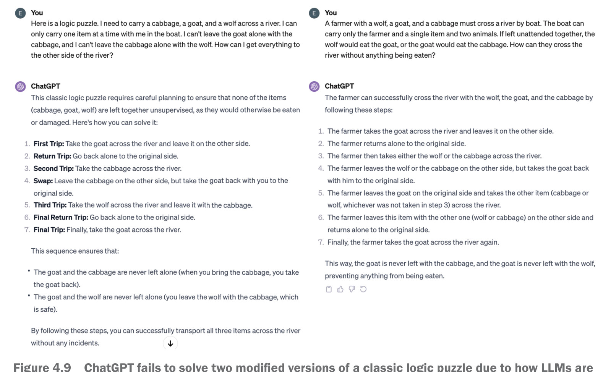
要理解为什么会发生这种情况，有必要回忆第3章讨论的LLM训练的自回归性质。模型被明确激励去基于先前内容生成内容。为了解决重新表述的逻辑谜题而生成的内容，在词汇和顺序上几乎与解决原始逻辑谜题的内容一模一样。因此，在Transformer层的查询和键配对中，这是一个很好的模糊匹配，从而产生构成原始谜题解决方案的值。模糊匹配完成后，先前的解决方案通过Transformer使用的注意力机制忠实返回。尽管这一策略非常有助于模型正确预测这个著名谜题的token，但它并不涉及通过谜题的逻辑进行推理。
LLM自回归特性的另一个微妙限制在于，它们只能处理在上下文中看到的信息。LLM被训练为接受一个输入并生成合理的后续内容。然而，它们无法进行规划、做出承诺或跟踪内部状态。一个很好的例子是当你尝试与ChatGPT玩“20个问题”游戏时。当人类玩“20个问题”时，他们会预先承诺一个隐藏信息，即他们选择用来通过答案识别出的物体。当ChatGPT玩这个游戏时，它会逐个回答问题，然后事后找到一个与所提供答案一致的输出。图4.10展示了这个例子，其中显示了玩“20个问题”时可能的对话树。当有人与LLM玩游戏时，这些对话树中会随机选择一个，而不是产生一个在整个游戏中保持一致的藏物品对象。
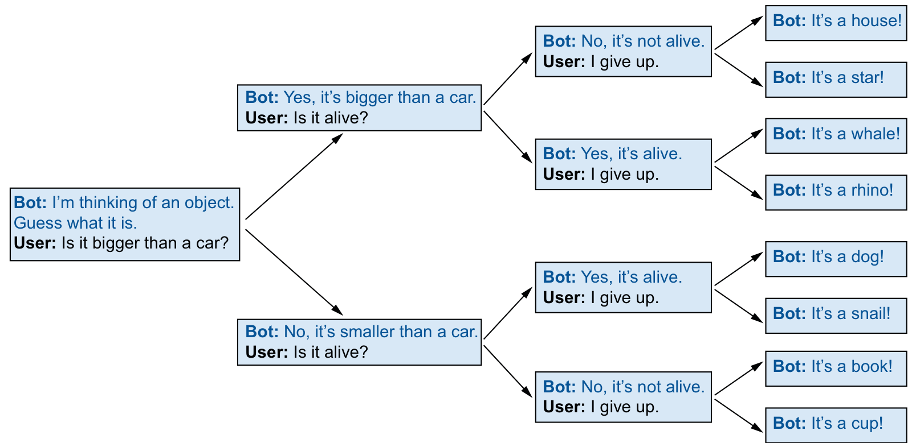
大部分需要完成的工作并非新颖或全新，至少还没新到让LLM无法处理的程度。然而，认识到LLM的能力会随着所需逻辑或细微差别的增加而迅速下降，这有助于你缩小其使用范围。在设计生产级计算机系统时，一个关键因素是考虑工具的使用时机和方式的范围。如果像ChatGPT这样的LLM产品面向普通用户开放，而没有限定使用范围，用户就会提出各种你意想不到的、随机且疯狂的要求。虽然这对研究可能很有价值，但在生产应用中往往不切实际。尽管用户和客户会尝试对你的LLM应用做出不可预测的行为，但如果你限制系统的访问权限，并围绕用户的具体目标、有限用例来设计，甚至限制他们的输入如何到达你的LLM，在这种情况下，你就能构建出用户体验更为可靠的产品。
LLM在提供低成本的编码或数据处理方面表现出色，尤其是在处理日常任务中那些格式或整理得不太干净的数据时。然而，通过给用户提供有限的选择，你可以在降低风险的同时获得实用性。让用户从有限的提示代码中选择，或者让用户决定提示运行在哪个数据源（如某个内部数据库）上，这样可以防止（大部分）用户向LLM输入任意文本。
从用户体验角度来看，这并不理想。其次，这变成了一个被称为新颖性检测或异常检测的任务。这个问题极具挑战性，几乎不可能以绝对无差错的方式解决。因此，我们提倡预防胜于检测，即选择那些不需要通过分析LLM输入或输出来高度准确预测失败的使用场景。
提示工程是为大语言模型设计输入以诱导出期望行为的艺术。语言模型对其输入的精确框架非常敏感，因此能够设计出被恰当回应的输入是一项非常有价值的技能。在使用大语言模型时，一个反复出现的主题是人们通常不考虑如何正确与之交互。提示大语言模型的最佳方法是思考你感兴趣的输出类型在训练数据中会是什么样子，然后写出它的前四分之一。相反，人们常常描述他们希望语言模型执行的任务，假设这种澄清会使大语言模型专注于问题。不幸的是，这种方法会产生不一致的结果，并激发了通过向大语言模型输入大量指令和响应作为训练数据进行微调的研究。
2019年，里奇·萨顿提出了“苦涩的教训”这一术语，用以描述他在机器学习领域的经验。“从70年的人工智能研究中可以得出的最大教训是，利用计算的通用方法最终是最有效的，而且优势显著。”[7]人们真切地感受到，Transformer就是这一原则的终极体现。你可以不断将它们做大，采用更高的并行度进行训练，并增加更多GPU。这与循环神经网络（RNN）形成了鲜明对比，RNN几乎无法像Transformer那样高效并行化。在图像领域，生成对抗网络（GAN）方法也难以达到十亿参数规模，同样印证了这一点。而LLM中基于Transformer的方法则可以轻松扩展到数百亿参数，从而构建出更大更好的模型。从解决方案设计的角度看，你现在的原型可能会因模型规模而面临显著的限制。更大的模型需要更多资源，预测耗时也更长。你的用户能接受的最高响应时间是多少？在此速度下运行你的模型所需的硬件成本有多高？模型规模的增长速度超过了消费级硬件的提升速度。因此，你可能无法将模型部署到嵌入式设备上，或者需要联网来分摊成本。因此，在设计时必须考虑网络基础设施，以满足持续连接的需求。这一需求会增加电池消耗，当持续开启Wi-Fi而非进行本地计算时，这是一个需要考虑的因素。因此，尽管更大的模型更准确，但设计上的限制可能使其无法以实用的方式部署。将这些限制与本章所学的LLM预测方式及失败场景相结合，将使你能够更好地理解如何利用LLM最有效地解决你关心的问题。
深度学习需要一个损失/奖励函数，该函数具体量化算法在预测方面的糟糕程度。梯度下降通过逐步使用损失/奖励函数来调整网络的参数。大语言模型通过预测下一个词元来训练以模仿人类文本。这个任务足够具体，可以训练模型去执行它，但它与推理等高层目标并非完美相关。大语言模型在与训练数据中常见且重复的任务类似的任务上表现最佳，但当任务足够新颖时则会失败。
译文范围: 章节内段落 1–157（共 157 个段落，渲染 90 个，34 个为图像/页眉/页码等不可译块）。
如何约束LLM的行为？
通过控制模型允许输出的内容来让模型更有用，这听起来可能有些反直觉，但在使用LLM时几乎总是必要的。这种控制的必要性在于，当面对任意文本提示时，LLM会试图生成它认为合适的响应，而不管其预期用途是什么。考虑一个帮助客户购买汽车的聊天机器人；你肯定不希望LLM因为客户问了一些与带孩子去踢足球相关的问题，就偏离脚本大谈特谈田径或体育。在本章中，我们将更详细地讨论为什么要限制或约束LLM的输出，以及这些约束的细微差别。准确约束LLM是最难实现的事情之一，因为LLM的训练方式是基于其在训练数据中观察到的内容来完成输入。目前，没有完美的解决方案。我们将讨论可以修改LLM行为的四个潜在位置：
在训练开始之前，整理用于训练LLM的数据；改变LLM的训练方式；在一组数据上微调LLM；在训练完成后编写特殊代码来控制模型输出。这四种情况总结在图5.1中。开发LLM的每个阶段都会影响到下一个阶段。微调阶段，即在较小的数据集上进行的第二轮训练，对于ChatGPT这类工具如今的工作方式最为重要，也是最可能在实际中采用的方法。我们在第2至4章中学到的第一个、规模更大的训练阶段通常被称为预训练，因为它发生在微调使模型变得有用之前。预训练过程产生的模型有时被称为基础模型或基座模型，因为它是构建任务特定（即微调后）模型的起点。
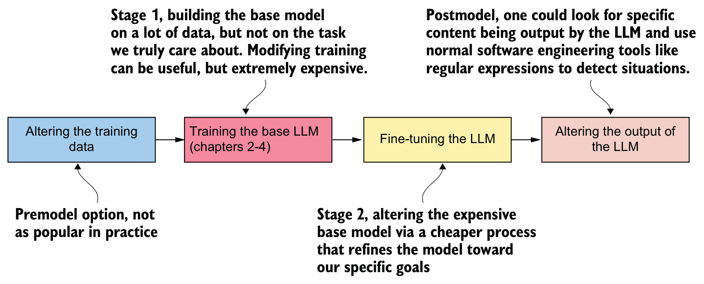
鉴于微调的重要性和有效性，本章将主要探讨这一要素及其执行方式。
大语言模型之所以极为成功，是因为它们是首个实现“用普通英语告诉计算机做什么，它就能去做”这一理念的技术。通过非常明确地说明你想要什么、设定具体的细节层次并指定特定的语气，你可以让大语言模型成为一个令人惊叹的实用工具。
这一详细的指令集被称为提示词，而设计优质提示词的艺术被称为提示工程。例如，我们可以为汽车销售机器人开发一个提示词，如图5.2所示。

你可以给大语言模型一个提示，要求它将数据整理成逗号分隔值格式，以便复制到 Excel 中。你可以设计一个提示，说明如何将自由格式的问卷回答归类为若干主题摘要。在所有情况下，提示设计本质上都是在限制或约束模型行为，使其聚焦于特定任务和目标集。然而，我们在前面章节讨论的分词和训练技术并不能实现这种指令遵循能力。
5.1.1 基础模型不够实用。按照第4章所述流程训练LLM，得到的模型通常被称为基础模型，因为它能作为构建应用或微调模型的基础平台。遗憾的是，基础模型对大多数人来说并不实用，因为它们没有通过用户友好的界面展示其内在知识，难以保持话题聚焦，有时还会生成不雅内容。基础模型甚至没有像ChatGPT那样以聊天机器人的概念进行训练。
等待法律体系跟上步伐：我们不是你的律师，这里也不是法律教材！围绕LLM的法律问题很复杂，合理使用和侵权之间存在大量细微差别。搜索引擎可以逐字显示来源内容，但这是为什么？一系列明确针对这些问题的法律，比如《数字千年版权法案》（DMCA），以及法院判决先例，比如Field v Google, Inc.案（412 F.Supp. 2d 1106 [D. Nev. 2006]），逐步确立了可接受和不可接受的使用行为。然而，立法和法院判例都需要时间建立，而生成式AI的变革并不能完全契合现有的法律理解。
GPT-3.5 和 GPT-4 经过改进，可以避免回答它们不知道的问题（虽然并非总是成功），但我们可以看看一些开源基础模型，比如 GPT-Neo，在没有主动防御措施的情况下会发生什么。例如，如果我们编造一种名为 MELTON-24 的新假药，并问 “What is MELTON-24, and can it help me sleep better?” 我们会得到无益的回答： “There is a great number of sleep problems that go with Melatonin, including insomnia and fatigue.这会引发失眠，并说明了为什么避免某些抑制褪黑素的食物很重要。” 在这种情况下，MELTON 与 melatonin（褪黑素）的相似性以及“sleep”的提示足以让模型联想到褪黑素这个主题。尽管如此，答案显然是无意义的，因为 MELTON-24 并不存在。理想情况下，我们希望模型能够识别并回应，承认自己缺乏信息，而不是像这里这样生成更多文本。
如果用户要求以特定格式提供数据，例如像 JSON 这样的结构化文本格式（关于计算机间数据交换的常见格式示例，请参见 https://en.wikipedia.org/wiki/JSON），而你没有正确匹配每一个开括号或闭括号，或者没有正确编码特殊字符，那么输出将无法满足用户的目标。无论输出有多么复杂或接近正确，格式要求几乎总是严格的要求。我们在第4章中举了一个这类问题的例子：当时我们要求ChatGPT用Modula-3编写代码，它却借用了对Modula-3无效的Python语法。如果代码违反语法规则，它将无法编译。LLM针对特定期望输出生成文本的概率性方法并不能保证所有期望的语法规则都得到100%的遵守。
既然我们已经了解了需要约束和控制大语言模型行为的种种原因，就可以更好地向模型引入新信息，以解决我们试图应对的问题，同时避免生成有害或法律上有问题的内容。请记住，虽然我们有四个不同的干预点来改变行为，但微调的效果远胜于其他方法。无论是OpenAI [2] 这样的闭源选项，还是Hugging Face [3] 等开源工具，都提供了多种微调选择，这使得微调成为从业者最容易上手的方法。任何微调方法都会产生相同的效果——生成一个具有更新参数、可控制其行为的大语言模型新变体。因此，我们可以混合搭配不同的微调策略，因为它们产生的根本效果相同：一组新参数，可以直接使用，也可以再次调整。一个人的基础模型，很可能就是另一个人的微调模型。这种情况在许多开源大语言模型中屡见不鲜：一个初始模型（例如Llama）会被另一方修改（比如你可以找到许多“Instruct Llama”模型），然后你还可以根据自己的数据或特定用例进一步微调。定制大语言模型最直接的方法是进行提示工程，并迭代优化提示词，直到获得期望的行为。但如果提示工程效果不佳，那么下一个合理的步骤就是微调。这一步会带来一定的努力和成本增加，例如收集用于微调的数据，以及获取运行微调会话的硬件。特别需要了解的两种微调方法是监督微调（SFT）和听起来更吓人的基于人类反馈的强化学习（RLHF）。SFT更为直接，非常适合向模型中融入新知识，或是在你偏好的应用领域内提升模型性能。RLHF则更为复杂，但它提供了一种让大语言模型遵循更困难、更抽象目标（比如“做一个好聊天机器人”）的策略。
影响模型输出最常见的方式是监督微调（SFT）。SFT涉及使用高质量、通常由人类编写的示例内容，这些内容捕捉了对你任务至关重要的信息，但未必能在基础模型中得到良好体现。这种情况经常发生，因为LLM在大量通用内容上训练，这些内容与你的特定需求重叠很少。如果你经营一家医院，LLM看到的医生笔记就很少。如果你经营一家律师事务所，LLM可能没有见过太多证词笔录。如果你经营一家维修店，LLM可能没有见过你所能接触到的所有手册。
警告：微调微调是向模型添加新信息的一种有用方法，但也可能带来安全风险。如果你想基于医疗记录构建一个LLM，那么在示例医疗记录上对LLM进行微调是合理的。但现在存在一种风险：有人可能会让您的LLM重现微调数据中的敏感信息，因为从根本上讲，LLM会基于其见过的训练数据来补全输入。底线是：不要在你想保密的数据上训练或微调LLM。
再考虑一下我们关于汽车公司及其销售聊天机器人的例子。来自第三方的基础模型可能对汽车有大致了解，但很可能不知道该公司产品的所有细节。通过在内部手册、聊天记录、电子邮件、营销材料和其他内部文档上微调模型，你可以确保模型尽可能多地掌握有关你公司汽车的信息。你甚至可以编写示例文档，介绍你的车辆相对于竞争对手的优势、优点、脚本等，以确保LLM配备了你想让它拥有的信息。
SFT的机制很容易解释。正如我们之前提到的，SFT只需要更多的文档。这些文档可以是任何能够提取文本的格式。这构成了应用SFT所需的全部工作，因为SFT只是重复你在第4章学到的训练过程。图5.3展示了SFT的过程与你之前看到的相同。区别在于，第一次训练基础模型时，初始参数是随机的且无帮助。第二次微调时，你从基础模型的参数开始，这些参数编码了基础模型通过观察训练数据所学到的内容。
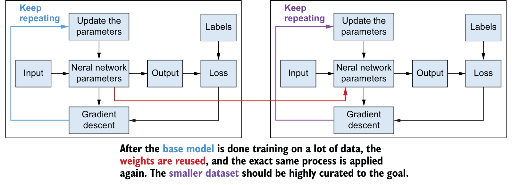
值得高兴的是，你现在对SFT有了很好的理解。与原始训练过程一样，它重用“预测下一个token”的任务，以确保你的模型内化新文档中的信息。作为预测下一个token的直接后果，SFT也不允许我们改变LLM的激励。因此，像“不对用户说脏话”这样的抽象目标很难通过SFT实现。
微调的陷阱：通过重用从第4章的梯度下降策略来看，所有微调方法都倾向于继承两个关于LLM返回其训练内容的能力的问题。由于SFT如此简单，现在正是我们回顾SFT之外更广泛的微调问题的好时机。无法保证SFT能正确保留你提供的信息。这个问题被称为灾难性遗忘[4]，当你在新数据上训练模型但不再继续训练旧数据时，模型开始
“忘记”旧信息。很难确定哪些会被遗忘、哪些不会。灾难性遗忘自1989年以来就是一个公认的问题[5]。换句话说，微调并非纯粹的加法，你需要为此付出一些代价。
在撰写本文时，RLHF是约束模型的主导范式。顾名思义，它采用了强化学习（RL）领域的方法。RL是一类广泛的技术，算法必须做出多个决策以最大化长期目标，如图5.4所示，其中四个术语具有技术含义：
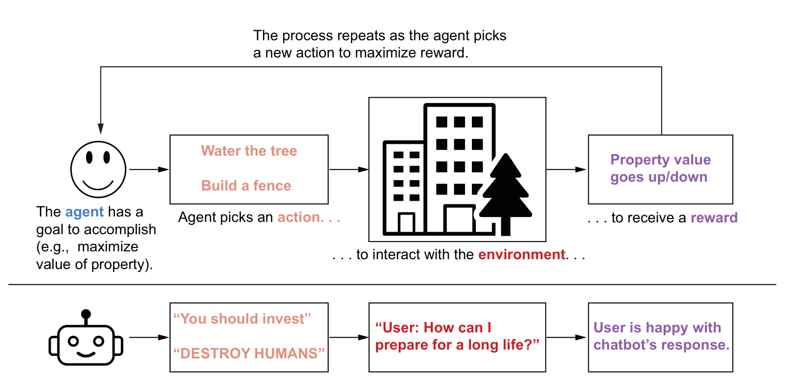
在将LLM用作聊天机器人与人类交互的例子中，用户是环境。LLM本身是智能体，它能够生成的文本就是动作。这就只剩下最后一件事情需要指定：奖励。如果我们让用户对与聊天机器人的良好对话（例如，没有粗俗语言、没有撒谎、提供有用的回复）给出+1分，对糟糕对话（例如，建议毁灭人类）给出-1分，那么我们就将人类反馈纳入到了强化学习中。敏锐的读者可能会注意到，奖励听起来与第4章讨论的损失函数非常相似。事实上，我们关于好与坏对话的例子正好落入了我们曾说过是损失函数不良示例的那类非常主观且难以量化的范畴。+1/-1奖励并不平滑，因为值只指向一个方向或另一个方向，没有中间地带，这是损失函数的另一个不良特征。强化学习的一个强大之处在于它可以处理非连续且难以量化的目标。我们使用“奖励”而不是“损失”这一术语，以暗示这两种情况之间的差异。通常，强化学习能够学习的目标类型被称为不可微的。因此，这些目标无法使用像梯度下降这样的数学技术来学习，我们在第4章描述神经网络如何学习时介绍了这些技术。稍后我们将具体解释RLHF的工作原理。RL的警告是它可能计算开销大且需要大量数据。RL是一种出了名困难的学习方式。它通常不如其他微调技术（如SFT）效果好，因为RL比其他方法需要更多关于“正确”和“错误”做事方式的示例，并且由于我们使用人类反馈来指导RLHF，结果并不总是完美的。例如，在图5.5中，RLHF无法帮助LLM理解其在RLHF训练期间未明确见过的基本指令，因为它没有为基础模型添加任何执行基本逻辑的能力，比如理解用户避免显示海豚信息的请求。LLM并不以我们人类所认为的推理方式进行推理。收集数亿个“所有东西”的示例可以让你走得很远，但世界是奇怪的。我们几乎没有证据表明LLM在遇到新颖事物时能够可靠地生成令人满意的响应。然而，RLHF是目前约束LLM行为的最佳方法。尽管面临挑战，RL提供了一种基于梯度的需要可微目标的方法所不具备的学习方式。最重要的是，ChatGPT已经证明RL在许多情况下是可行的。那么，让我们更深入地探讨RLHF的工作原理。
SFT和RLHF是微调LLM的两种主要方法。SFT可以处理数千份文档或样本，而RLHF通常需要数万个示例。但这不应阻止你在数据较少时进行尝试，但如果数据较少，或许将时间花在编写更好的提示上更为明智。更重要的是，SFT和RLHF并非互斥的。它们都修改模型的基础参数，你可以依次应用它们以获得各自的好处。它们也不是目前仅有的微调方法。例如，新的微调方法正在开发中。
这些技术从大语言模型中移除概念，强制模型忽略其在训练后学到的数据[6]。未来几年将开发更多模型修改技术。所有这些技术可能都需要你进行一些数据收集，但总体工作量比你自己从头构建一个大语言模型要少。
为了说明RLHF的工作原理，我们将先介绍一个不完整的RLHF版本，解释它为何失效，然后说明如何修正。在本节中，我们不讨论RLHF所涉及的详细数学运算，因为从高层视角来看，这些细节并不会给你带来特别深刻的洞见。如果你想了解更具体的细节，我们建议在完成本章后，从“Implementing RLHF: Learning to Summarize with trlX”[7]开始阅读。
5.3.1 从朴素的RLHF开始
首先，我们来看看RLHF不完整且朴素的版本。我们已经讨论过RL如何通过不可微的目标进行学习。因此，我们假设有一个人工评估者，他会用质量奖励来给LLM的输出打分，其中+1表示好的回答，-1表示不合适的回答。这个质量奖励仅仅是我们分配给LLM输出的一个任意分数，用来表示某个样本比其他样本更好。因此，如果用户要求LLM“讲个笑话”，LLM回答“需要多少只鸭子才能拧一个灯泡？”我们可能会给+1分，因为这算是一个（还算）不错的笑话。如果LLM反而输出像“狗是邪恶的”这样的句子，我们会给-1分，因为它根本没有试图讲笑话。由于仅使用+1和-1的简单质量奖励很难进行RL，我们将为RL算法添加额外的信息，例如每个生成token的概率。这样，RL算法就知道每个token的可能概率。整个过程总结在图5.6中。
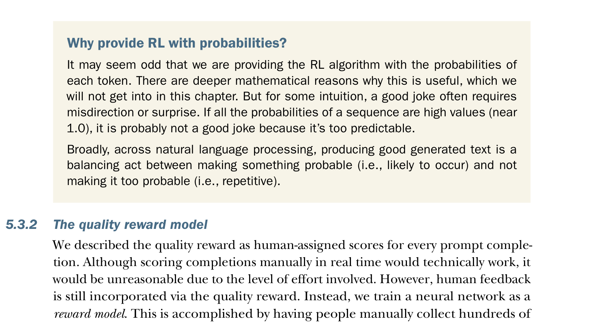
为何向强化学习提供概率？
我们向强化学习算法提供每个词元的概率，这看起来可能有些奇怪。其中包含更深层的数学原因，但本章不深入探讨。不过，直观上理解，一个好笑话往往需要误导或意外。如果序列中所有概率都很高（接近1.0），那么这个笑话很可能不好笑，因为太容易预测了。
广义上，在整个自然语言处理中，生成高质量的文本需要权衡两方面：既要让文本具有概率上的合理性（即可能发生），又不能让其过于可预测（即变得重复）。
我们将质量奖励描述为人类为每个提示-完成对分配的分数。尽管实时手动对完成结果评分在技术上是可行的，但所需付出的努力太大，不切实际。然而，人类反馈仍然通过质量奖励融入到模型中。因此，我们训练一个神经网络作为奖励模型。具体做法是，让人类手动收集数十万个提示-完成对，并为其标注好坏。这些评分结果成为训练奖励模型的带标签数据，如图5.7所示。
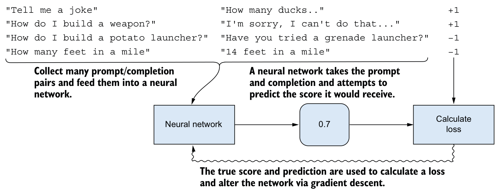
收集数十万条带评分的提示和完成对虽然昂贵但可行（例如 https://huggingface.co/datasets/Anthropic/hh-rlhf），尤其是在使用 Mechanical Turk（https://www.mturk.com/）这类众包工具时。这需要人工整理大量数据，但比创建初始基础模型所用的数十亿词元要少几个数量级。这些 RLHF 数据集必须足够大，因为需要覆盖用户可能提出的各种场景、问题和请求。正如我们在图 5.5 的海豚示例中看到的，RLHF 往往适用于相对直接和已知的主题。因此，处理不同情境的广度直接来源于微调数据的广度。
注意：我们有我们一直以+1/-1作为质量奖励的例子，因为它最容易描述。由于强化学习不需要梯度，你可以使用与你的问题相关的任何分数。使用排名分数——即比较给定提示的多个完成结果，从最好到最差排序——更受欢迎也更有效，因为你是同时对多个完成结果进行相互评分。无论如何，提供正负反馈的本质仍是相同的。
5.3.3 相似但不同的RLHF目标。一旦你训练好一个奖励模型，就可以为RLHF流程创建和评分任意数量的提示。人类反馈被嵌入到奖励模型中，现在可以分发、并行化和重复使用。唯一剩下的问题是，当前朴素的RLHF版本纯粹是为了最大化质量奖励，而这并非RL必须关注的唯一目标。因此，模型会随着时间的推移开始退化，产生胡言乱语、无意义的输出，这些输出质量不高，对任何读者都没有价值。这种退化与一种称为对抗攻击的现象有关，在这种现象中，只需对输入进行相对较小的修改，就能惊人地轻易欺骗神经网络做出荒谬的决策。对抗性机器学习（AML）发展迅速，并且有其自身的复杂性深坑，所以我们把讨论留给其他专家[8]。但是，我们在图5.6中描述的朴素RLHF实现本质上是对LLM进行了一次对抗攻击，因为它只专注于最大化质量奖励，而不是对用户有用。本质上，这是古德哈特定律在AI/ML中的体现：“当一个指标成为目标时，它就不再是一个好的指标。”为了解决这个问题，我们必须在RL算法中增加第二个目标。我们将为原始基础LLM的输出与微调后LLM的输出之间的相似性计算第二个奖励。从概念上讲，当微调后的LLM产生更好的输出时，这个奖励可以被视为一种奖励，类似于原始LLM的行为方式。它防止模型因过于新奇而偏离轨道。从根本上说，我们希望微调后的LLM生成的输出以原始LLM最初观察到的训练数据为基础。我们不希望微调模型变得过于创造性而生成无意义的内容。这个奖励被添加到RL算法中以稳定微调过程。图5.8提供了RLHF如何工作的完整画面。
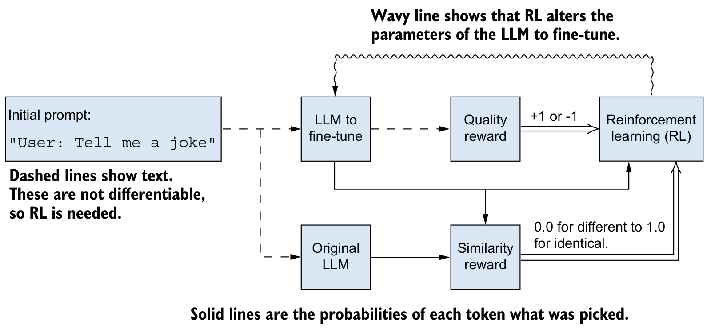
如果一个模型学会了输出胡言乱语，它会因缺乏相似性而受到高惩罚，从而阻止模型变得过于离谱。如果一个模型输出的内容完全一样，它会得到一个低质量分数，从而阻止模型毫无变化。两者之间的平衡出色地实现了“金发姑娘”效应，让模型有足够的灵活性进行改变，同时又不会失去类人输出的能力。

微调是改变LLM行为的主要方式，但微调并非万无一失，也不是行为改变的唯一途径。我们专注于微调，是因为RLHF在塑造LLM超越简单next-token prediction的行为方面具有重要价值。
其他三个可以修改LLM行为的阶段（如图5.9所示）对于用户而言并不容易触及。不过，为了完整性，我们将简要回顾其他阶段以及你应该了解的一些关键细节。这些因素有助于你理解微调难以实现的目标，以及你可能需要向LLM提供商探究的问题范围。
在机器学习的所有领域，“垃圾进，垃圾出”这句格言始终适用。你可能确实注意到，OpenAI[9]和Google[10]提供了许多关于他们如何开发LLM的低层技术细节，但关于用于构建LLM的数据却很少提及。这是因为构建强大LLM的大部分“秘诀”都围绕着数据策展——开发一个涵盖多样化任务、高质量语言运用以及各种不同情境的数据集合。用于训练、验证和测试LLM的数据集的大小和质量至关重要。随着LLM生成的内容逐渐进入日常使用并回流到网络中，数据的大小和质量变得尤为重要。例如，据估计，6%到16%的学术同行评审使用了LLM[11]，并且很有可能
5.4.2 修改基础模型训练。在训练或微调大语言模型时，训练数据的隐私必须成为重要考量。通常，通过特殊方式构造输入，可以重建模型的训练数据。在某些情况下，大语言模型会逐字生成其训练过的原文段落。如果训练数据包含隐私信息，例如个人身份信息（PII）、个人健康信息（PHI）或其他敏感数据，这就成了问题。模型用户可能在不经意间通过提示词触发了这些数据的逐字外泄。算法的初始训练阶段是缓解部分隐私问题的理想时机，方法就是采用差分隐私（DP）技术。DP 内容复杂，想了解更多可参阅《Programming Differential Privacy》[13] 一书。简而言之，DP 在模型训练过程中添加精心构造的随机噪声，从而对数据隐私提供可证明的保障。DP 并非万能，但相比当今大多数算法，它提供了更强的保护。那为什么大家不都这么做呢？因为添加噪声往往会降低模型质量。大规模训练成本高昂，每次训练耗资数十万到数百万美元不等。如果为了正确设置隐私参数而需要多进行10倍的训练，那就会变成百万到数千万美元的问题。但随着 DP 每年都在进步，我们预计其应用将日益普及。
最后，我们可以检查模型生成的 token，并编写代码根据这些 token 的组合来改变其行为。在微调之后，这是 LLM 使用者修改其行为的第二大可能阶段。本章前面讨论了 LLM 的一个常见需求：生成符合精确格式（如 XML 或 JSON）的输出。实现这类格式要求是 LLM 的常见问题。任何一次预测失败都会导致无法生成有效输出。你可以在图 5.10 中看到这类失败的示例：我们要求 LLM 补全一些 Python 代码，下一个 token 本应是分号 (;)，但它错误地尝试换行 (`\n`)。
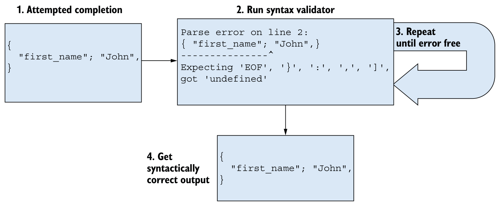
存在多种工具（例如 https://github.com/noamgat/lm-format-enforcer）可在LLM解码步骤中指定严格格式。若这些工具检测到解析错误，会立即重新生成最后一个token，直到产生有效输出。还有更复杂的下一个token选择方法。但更重要的是，我们能够利用中间输出在生成完整输出前做出决策。即使是简单的老式“通过/不通过”列表，也是捕捉不良行为的有效工具。你不必真正实时地将输出传递给用户；你可以引入一个人为延迟，以便在发送给用户之前看到更多响应内容。这让你有时间对照不良语言过滤器或其他硬编码检查进行审核。如果出现匹配，如图5.10所示，你可以重新生成输出或终止用户会话。
本章至此，我们已经介绍了一些操控大语言模型以产生更理想且一致输出的基本方法。截至目前，我们聚焦于涉及大语言模型本身的技术，无论是通过提示工程、操控训练数据，还是微调基座模型。在本节中，我们将探讨如何将大语言模型的输入和输出集成到多步操作链中，以定制模型生成的输出，从而获得更具针对性的结果。这一领域正在快速发展，因此我们将简要介绍一个将大语言模型集成到更广泛信息检索工作流中的具体示例，随后讨论一个通用工具，展示如何通过与模型多次交互来定制其输出。
检索增强生成（RAG）是一种技术，它允许我们从 LLM 生成答案，同时降低产生无意义或错误解释的可能性。RAG 名称中的“检索”部分应能给你关于该技术运作方式的有益提示。当用户向 RAG 系统提供输入时，它会使用 LLM 创建一个查询，并在包含文档索引的搜索引擎中运行该查询。根据用例，这可以是通用信息索引（如 Google），也可以是特定主题的索引（如汽车营销材料集）。搜索引擎根据查询生成相关文档列表。RAG 系统随后使用 LLM 从这些文档中提取信息以生成更好的答案。为此，RAG 系统将检索到的文档内容与原始用户查询结合，为 LLM 创建一个综合提示，从而产生更好的响应。这种方法通常效果良好，因为我们不再要求 LLM 基于其训练或微调数据生成响应，而是要求 LLM 通过总结与常规搜索引擎查询相关的一组文档来生成输入响应，并向 LLM 提供这组相关文档以供其从中汲取答案。换句话说，我们帮助 LLM 专注于正确回答给定问题所需的数据。我们在图 5.11 中描述了这一过程，并将其与我们迄今为止描述的正常 LLM 用例进行了比较。迄今为止，RAG 方法最显著的两个优点如下：
RAG系统的输出更加准确、事实正确，或者对用户的原始问题更有用，因为它基于文档索引中的特定来源。LLM可以生成引用或参考，指向用于生成响应的源文档，从而允许用户验证或关联原始源材料。
关于引用的后一点尤其重要。RAG 并不会解决 LLM 的所有问题，因为在 RAG 系统中，LLM 仍然生成最终输出。由于 LLM 可能找不到或不存在的内容，它仍然可能产生错误或幻觉。LLM 也可能不会准确捕获或
1. 用户的问题会被提交到搜索引擎或某种数据库中进行核查。
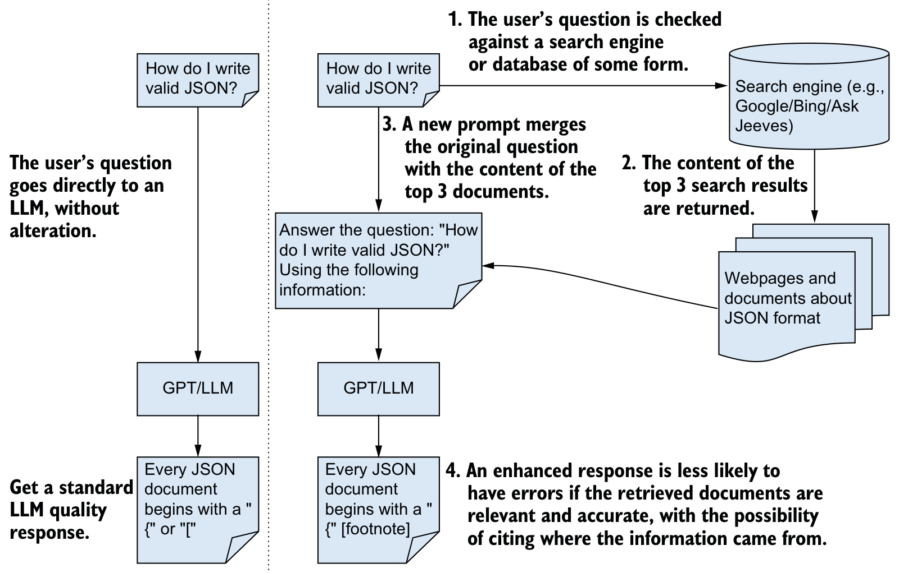
代表其使用的任何源文档的内容。因此，RAG 方法的效果直接取决于其搜索质量和返回的文档。关键是，如果无法针对问题构建高效的搜索引擎，就无法构建有效的 RAG 模型。
当思考 LLM 时，务必考虑其上下文大小（context size）这一方面。LLM 的上下文大小决定了它在单次补全请求中能计算处理多少个 token。你可以将其视为 LLM 在接收提示（prompt）形式的输入时能够查看的数据量。例如，GPT-3 的上下文大小为 2048 个 token。然而，在聊天机器人中，上下文通常用于保存整个对话的实时记录，包括 LLM 的输出。如果你与 GPT-3 的对话长度超过 2048 个 token，你会发现 GPT-3 往往会丢失对话早期讨论的一些内容。
上下文大小是RAG应用的一个促进和限制因素。如果RAG系统检索整本书供你的LLM消化，你的LLM将需要巨大的上下文大小来
能够使用它。否则，LLM 只能消费检索文档的前面部分（直到 LLM 的上下文大小限制），并且可能错过信息。因此，上下文大小是选择模型时需要考虑的重要操作特性。如今一些模型，比如 X 的 Grok，可以处理多达 128,000 个令牌作为上下文大小。虽然像 Grok 这样的大上下文大小增加了 LLM 可以消费的硬限制，但 LLM 在处理由更大上下文大小所启用的大量输入时的有效性仍然是一个活跃的研究领域。
你可能会注意到，在图5.11中，我们必须创建一个新的提示。我们添加了前缀“Answer the question:”，后跟后缀“Using the following information:”。理论上，调整这个提示可以获得更好的结果。你可能会想到添加一些指令，比如“如果以下信息与原始问题无关，则忽略它们。”这些想法开始涉及提示工程（prompt engineering），即调整和修改输入LLM的文本以改变其行为，正如我们在第4章中讨论的那样。提示工程确实很有用，并且是一种将多次LLM调用结合起来以改善结果的好方法。例如，你可以尝试通过让LLM重写问题来改进搜索结果。（这一讨论涉及信息检索中的一个经典领域——查询扩展，如果你希望了解更多的话。）然而，提示工程可能非常脆弱：任何LLM的更新都可能改变哪些提示有效或无效，而且重写每个提示将非常麻烦——尤其是当你涉及更复杂的内容，比如RAG模型或更高级的模型时。
尽管尚属新兴，我们已经开始看到编程库和其他软件工具将LLM作为自定义应用的组件进行构建。我们特别喜欢的一个是DSPy（https://dspy.ai），它可以简化构建和维护那些试图修改LLM输入和输出的程序。一个好的软件库会隐藏妨碍生产力的细节，而DSPy很好地抽象了有关LLM使用的以下任务：
集成特定 LLM使用具体的LLM，实现常见的提示模式，并根据你的数据、任务和LLM组合调整提示。
这不是一本编程书，因此对DSPy进行完整教程超出了范围。但是，了解DSPy如何用于实现我们在5.5.1节中描述的RAG模型是有启发性的。这需要我们选择一个LLM（这里使用GPT-3.5），以及一个信息数据库（Wikipedia就很合适），并定义RAG算法。DSPy通过定义所有组件使用的默认LLM和数据库来工作（除非你干预），从而便于分离和替换正在使用的部分。这一过程如下面的代码清单所示。
使用OpenAI的GPT-3.5，它可以用其他在线或本地LLM替换。`import dspy` `llm = dspy.OpenAI(model='gpt-3.5-turbo')` 使用ColBERTv2算法对Wikipedia副本进行向量化 `similarity_and_database = dspy.ColBERTv2(`
使用我们刚创建的LLM和文档数据库 `dspy.settings.configure(
从数据库中搜索最相关的三个文档 `self.retrieve = dspy.Retrieve(`
指定一个“签名”字符串，它定义了LLM的输入和输出 `self.generate_answer = dspy.Prediction(
图5.10中刚刚了解到的、基于错误进行重新生成的技术。
我们可以在四个环节介入以改变模型的行为：数据收集/分词、训练初始基座模型、对基座模型进行微调，以及拦截预测的token。这四个环节都很重要，但对大多数用户而言，微调是降低成本并实现模型目标最佳改变的最有效手段。监督微调（SFT）在较小的定制数据集上执行标准的训练流程，有助于细化模型对特定领域的知识。基于人类反馈的强化学习（RLHF）需要更多数据，但它允许我们指定比“预测下一个token”更复杂的目标。在输出格式必须严格（如JSON或XML）的情况下，我们可以使用现有的工具（如语法检查器）来检测LLM的不正确输出。生成和语法检查可以循环运行，直到输出满足必要的语法约束。
检索增强生成（RAG）是一种流行的方法，通过首先从搜索引擎或数据库中找到相关内容，然后将其插入到提示中，来增强LLM的输入。像DSPy这样的编码框架开始出现，它们将特定的LLM、向量化和提示定义与针对特定任务修改LLM输入输出的逻辑分离开来。这种方法使得你可以构建更可靠、可重复的LLM解决方案，并且能够快速适应新的模型和方法。
译文范围: 章节内段落 1–138（共 138 个段落，渲染 69 个，26 个为图像/页眉/页码等不可译块）。
6 超越自然语言处理
虽然建模自然语言是Transformer的主要目的，但机器学习研究人员很快发现，它们可以预测任何涉及数据序列的内容。Transformer将句子视为token序列，要么生成相关的token序列（如语言翻译），要么预测序列中的后续token（如回答问题或扮演聊天机器人）。尽管序列建模和预测是解释和生成自然语言的有力工具，但自然语言是LLM能够提供帮助的唯一领域。除了人类语言之外，许多数据类型都可以表示为token序列。用于实现软件的源代码就是一个例子。源代码不是英语中的单词和语法，而是用Python等计算机编程语言编写的。源代码有其自身的结构。
第6章
超越自然语言处理
89描述了软件开发者希望计算机执行的操作。与人类语言类似，源代码中的标记根据所使用的语言及其出现的上下文而具有含义。甚至可以说，源代码比人类语言结构更严谨、含义更明确。若编程语言存在歧义和意义模糊，计算机将难以解析，他人更难以修改和维护。源代码（简称代码，下文将沿用此说法）只是大语言模型和Transformer处理非自然语言数据的一个例子。几乎所有可以重新表述为标记序列的数据，都可以利用Transformer以及我们对大语言模型工作原理的诸多认识。本章将回顾三个示例，它们与自然语言的相似程度依次递减：代码、数学和计算机视觉。这三种不同类型的数据（称为数据模态）各自需要从新的角度审视Transformer的输入或输出。不过，在所有情况下，Transformer本身保持不变。我们仍会堆叠多个Transformer层来构建模型，并继续使用梯度下降训练这些Transformer层。代码与自然语言最相似，因此不需要太多改动。不过，为了让代码大语言模型良好运行，我们将改变其输出生成后续标记的方式。接下来，我们将探讨数学——我们需要改变分词方式，使大语言模型能成功完成加法等基本运算。最后，对于计算机视觉（涉及图像处理以及目标检测与识别等任务），我们将同时修改输入和输出，展示如何通过完全替换标记的概念，将一种截然不同的数据类型转换为序列。图6.1展示了为处理每种数据模态而必须修改的大语言模型部分。
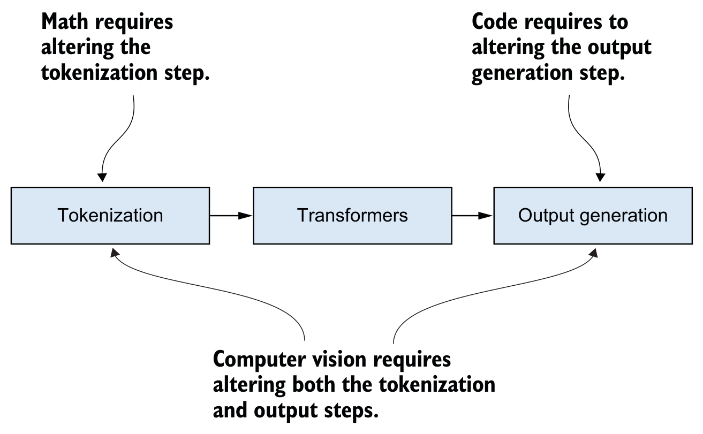
我们已经简要讨论过，LLM可以编写软件源代码。在第4章中，我们让ChatGPT编写了一段Python代码来计算数学常数π。接着，我们又让它将这段代码转换成一种名为Modula-3的冷门编程语言。软件是人们最早发现LLM能够助力的领域之一，这其实是编程工作方式带来的自然结果。编程语言被设计成像文本一样供人类阅读和书写！因此，我们无需改变分词过程就能生成代码。我们之前讨论的所有关于构建LLM的方法同样适用于代码和人类语言。通过图6.2中ChatGPT对Python和Java两个相似代码片段的分词结果，我们可以看到这一点。这里，我们使用灰色深浅来表示OpenAI分词器（https://platform.openai.com/tokenizer），它可以将代码拆分成不同的词元。虽然同一个词元在每个示例中可能颜色不同，但我们可以关注分词器如何将代码拆分成词元，以及两个示例之间的相似之处。这些相似之处包括：每行代码的缩进；x和i变量（大多数情况下）；函数名和返回语句；以及+=等运算符。

自然语言文本中出现了单词“Value”的前缀“init”。因此，我们不仅在语法相似的编程语言之间共享信息，还通过变量名来共享代码的上下文和意图。LLM 也能从程序员为自身或他人编写的描述代码复杂部分的注释中受益。在图 6.3 中，我们展示了重复的 Java 版本，只改变了变量名，并在函数顶部添加了一个描述性（但在实际中不必要）的注释。

要让 LLM 处理代码，第一步是确保初始训练数据中包含代码示例。由于互联网的特性，大多数 LLM 开发者已经做到了这一点：代码示例在网络上很常见，自然就进入了每个人的训练数据集。改进结果则成为应用 SFT（监督微调）的机会，即收集额外的代码示例，并在这些代码示例上对 LLM 进行微调。像 GitHub 这样包含大量代码的开源仓库，使得获取大量代码变得特别容易。从 GitHub 等来源收集的代码构成了用于解释和生成代码的 LLM 的微调数据集的基础。更有趣的情况是使用 RLHF（基于人类反馈的强化学习）来提高模型编写代码的实用性。同样，有许多可用的工具和数据集，使得为编码助手构建一个像样的 RLHF 数据集成为可能。像 Stack Overflow 这样的平台允许用户提出问题，提供其他人回答问题的功能，并包含一个让其他用户对最佳答案进行投票的系统。数据源还包括像 CodeJam 这样的编程竞赛，它们为特定的编程问题提供了许多示例解决方案。整合来自这些数据源的信息如图 6.4 所示。像所有优秀的机器学习解决方案一样，如果你创建并标注自己特定任务的数据，你会得到最好的结果。据传 OpenAI 在生成代码方面就是这样做的，他们雇佣承包商完成编码任务，作为为其系统创建数据的一部分 [1]。无论训练和微调数据如何收集，总体策略保持不变：使用标准分词器以及 SFT 和 RLHF，来创建一个专门生成代码的 LLM。这一方法已成功用于生成 Code Llama [2] 和 StarCoder [3] 等 LLM。
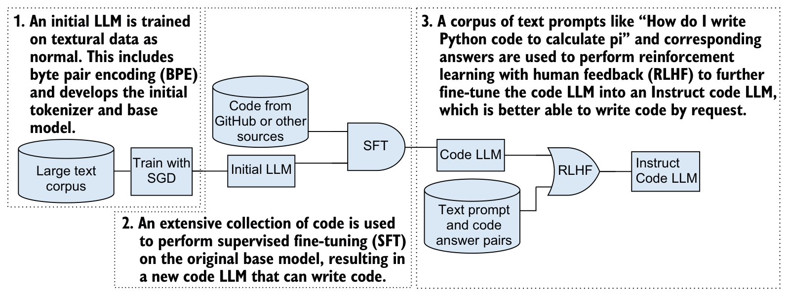

用于语法检查的解析器和生成可执行文件的编译器，使得将LLMs适应到代码生成这一新问题领域变得容易得多。然而，还有一个额外的技巧很有帮助。我们可以使用称为代码格式化器（程序员也称为 linters）的工具来改变分词方式并提升性能。问题在于，实现相同功能的代码有多种编写方式，而它们的分词结果却不同。应用 linter 调整源代码格式，有助于消除功能等价但写法不同的代码之间的差异。尽管重新格式化代码并不是让代码 LLMs 良好运行的必要条件，但它有助于避免可能出现的冗余。例如，考虑 Java 编程语言，它使用花括号来开始和结束程序中的新作用域。各种形式的空白现在不重要，但会被不同地分词，特别是对于只使用单行代码的作用域，花括号是可选的！图 6.6 展示了这些不同合法格式如何存在于执行相同功能的代码中，以及我们如何理想地将代码转换为单一规范表示。
无空格 同一行 无括号 额外缩进
我们希望所有编写有效代码的不同方式都能映射到一种“规范”形式。
Figure 6.6 一个Java代码示例，展示了同一代码的多种格式化方式如何导致不同的分词结果，尽管它们在语义上完全相同。代码检查工具（Linter）通常用于强制代码遵循特定格式化规则。相反，可以使用代码检查工具创建相同的“基础”形式，从而避免表示不必要的信息（如空格与制表符）。
LLMs 也能执行通常人类很难成功完成的数学任务。这些任务不仅仅是加减等数字运算，还包括形式化数学和符号数学。图 6.7 给出了我们所说的形式化数学的例子。你可以要求这些 LLM 计算导数、极限、积分，并编写证明。它们能给出惊人合理的结果。用于代码的 LLM 很实用，因为我们可以用解析器和编译器部分验证其输出。正确的分词对于构建有用的数学 LLM 至关重要。使用 LLM 进行数学计算仍是一个特别活跃的研究领域 [6]，因此让 LLM 执行数学任务的最佳方法尚不明确。然而，研究人员已经发现了一些问题，这些问题集中在构建和运行 LLM 的分词阶段。
![图6.7 Minerva LLM 可正确求解的一个符号数学问题。虽然本例将自然语言与数学内容混合，但许多LLM使用的标准分词方式不允许这类数学输出，并且可能引发一些令人意外的问题。（图片来源：[5]，遵循知识共享许可）](assets/fig-6-7-65e2d1cc20.png)
注意：在第5章中，我们提到微调可以多次应用，数学LLM就是一个很好的例子。研究人员通常通过微调代码LLM来创建数学LLM，而代码LLM又是通过微调通用文本LLM得到的。在每个阶段中，从SFT到RLHF，对原始的下游LLM（用于数学LLM）进行了多达三到六轮的微调。
数学LLM经常面临输入处理上的困境：那些对自然语言文本效果良好的处理方式，往往反而损害了数学概念的表示。在文本中，格式化的数学表示经常涉及像{}<>;^这样的符号。处理常规文本时，这类特殊符号通常会被从训练数据中移除。保留这些信息需要重写输入解析器进行分词，以确保你不会移除那些你希望模型学习的数据。等价数学方程的多种表示进一步增加了训练LLM理解数学的复杂性，类似于多种格式在处理编程语言时可能引发的问题。几种格式，如TeX、asciimath和MathML，允许用纯文本表达数学符号，同时为排版程序提供正确渲染方程式的指令。这些格式提供了许多表示同一方程式的不同方式。我们在图6.8中展示了这个问题的一个例子。问题出在数学的排版方法（即通过选择TeX或MathML来绘制方程式的方式）和数学的表示方法（即用两种数学上等价的方式表示同一事物）上。这两种都是我们在讨论LLM时多次遇到的问题的表现形式：表示同一事物的不同方式。在数学方面，当前的首选是使用TeX及其非常相似但较少使用的替代品（如asciimath）来保持数学格式，而丢弃像MathML这样冗长的内容。我们做出这一选择的依据有三个因素：

基于TeX的格式化数学是最常见且最易获取的数学表示形式，这得益于像arXiv这样的公开资源，它们一致地使用TeX格式。保留所有类TeX表示法可以减轻学习多种格式以及由此产生的截然不同的令牌集的挑战。更为冗长的MathML使用了更多种类的令牌，因此需要更多的计算资源来存储与每个唯一令牌相关的数据。
选择 TeX在LLM中采用单一的首选表示法处理数学，并未解决这样一个事实：等效方程可以有多种写法。判断哪些方程是相同的极其困难，研究人员已经证明，没有任何单一算法能够确定两个数学表达式是否等价。（我们在此处措辞有些宽松，因为本节讨论的是形式化数学，因此我们将您引至文献[7]。）到目前为止，对LLM而言，最好的答案似乎是“让模型自己想办法解决”，而这一方法至今已取得了相当的成功。但我们不会感到惊讶，如果未来数学LLM的开发者们大力投资于改进预处理，通过创建更一致的数学方程规范化表示来减少等价表达式可能的不同写法。
大语言模型能理解数字。对大多数人来说，数字是数学中更易于理解的部分。把它们放进计算器就能得到结果。虽然可能很繁琐，但没有计算器时你也可以手动计算。只需遵循一套固定的规则就能得出结果。令人有些意外的是，大语言模型在完成这类机械计算时却困难重重，但开发者们已经着手改进分词器，使其更擅长处理数字。
第一个问题是，标准的字节对编码（BPE）算法生成的分词器对数字的分词结果不一致。例如，“1812”很可能被分词为一个单独的词元，因为有成千上万的文档提到了1812年战争；而分词器可能会将1811和1813拆分成更小的数字。为了进一步探究原因，考虑初始字符串
3252+3253与GPT-3和GPT-4的应对方式对这个字符串进行分词。GPT-4 会做得更好，因为它似乎每次从前三位数字开始对数字进行分词，结果是得到一个三位数后面跟着一位数。GPT-3 看起来不一致，因为它改变了分词数字的顺序，如图 6.9 所示。
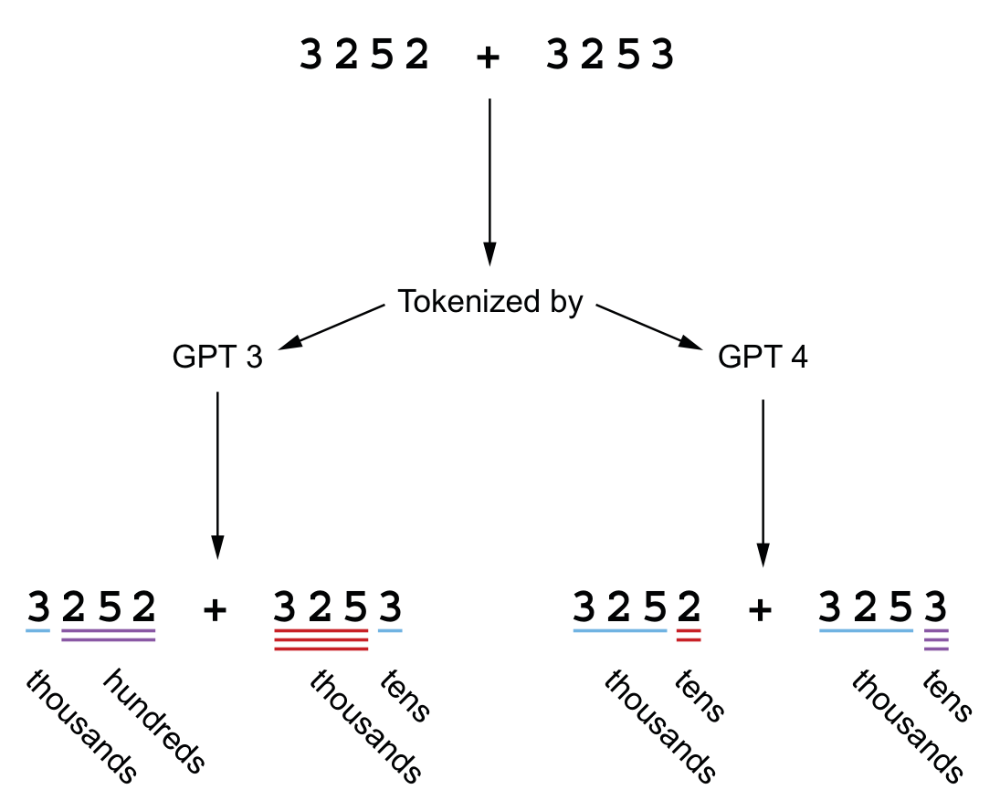


图6.10 xVal采用了一种技巧来减少token数量并降低其歧义性。通过修改LLM将数字转换为向量的方式，每个数字（例如数字1）都由一个单独的向量表示。通过始终使用“1”token并将其乘以观察到的数字，我们避免了数字token表示中的许多边缘情况，例如在训练数据中从未出现过的数字。这种转换方法还使得像3.14这样的小数更容易支持。
一致的数字标记和xVal策略都共享一个重要认识。我们知道如何表示数学和简单算法，比如小学的加法和乘法。如果我们设计LLM以更符合人类进行数学任务的方式来对数学进行分词，那么我们的LLM将获得更好且更一致的数学能力。

如果LLM无法提供可验证的数学正确性证明，你该怎么办？目前常用的一种技巧是多次运行LLM。由于下一个token是随机选择的，每次运行LLM都可能得到不同的结果和答案。出现频率最高的答案最可能是正确的。这个过程并不能保证证明正确，但确实有所帮助。
注意：那里这是一种将图像表示为称为码书的小图像组合的方法。码书可能很有用，但在本质上与我们的讨论不同。可以将此视为一个关键词金块，若想了解一些较旧的计算机视觉技术，不妨一探。
尽管在Transformer出现之前，高质量的图像识别算法和图像生成器已经存在多年，但Transformer迅速成为机器学习中处理图像的主要方式之一。无论是严格使用Transformer的视觉Transformer（ViT）架构，还是融合Transformer与其他类型数据结构的混合架构模型（如VQGAN和U-Net Transformer），在解释基于图像的数据以及从文本描述生成惊艳的计算机图像方面都取得了巨大成功。Transformer在图像中表现如此出色可能看似违反直觉，因为图像看起来并不像自然语言、代码或氨基酸序列那样的离散符号序列。尽管如此，Transformer通过为模型带来全局一致性，在计算机视觉中发挥了关键作用。
概念上，我们将用一个新的过程取代分词器和嵌入过程，该过程输出一个向量序列，类似于我们在3.1.1节讨论的嵌入层。创建表示图像的序列的主流方法是将图像分割成一组块。因此，我们将用返回向量序列的分块提取器替换分词器。LLM的输出使用解嵌入层将向量转换回标记。由于我们没有标记，我们需要一个块组合器，将transformer的输出合并成一个连贯的图像。我们在图6.12中展示了这一过程。请特别注意，图表的中心部分与基于文本的LLM相同。我们在文本和图像之间复用相同的transformer层和学习算法（梯度下降）。

解嵌入·块组合器·图像图像不会自然地离散化为token，因此会提取一个序列的块。这些块实质上是按序列取出的图像小片段。最后再将块转换回图像。
中间部分接收一个向量序列，送入Transformer并输出一个新的向量序列，在处理文本或图像数据时保持不变。
Transformer Transformer
分词器和嵌入层，图像块提取器

输入文本...
由于除了输入向量序列生成和输出步骤之外的所有部分保持不变，我们可以专注于图像与向量之间的转换是如何进行的。首先关注输入侧会有所帮助。正如"patch"这个名称所示，图像块提取器将每幅图像分割成一系列较小的图像。通常选择一个固定大小的块，例如16×16像素的正方形。我们希望块大小固定，以便于输入神经网络——神经网络总是处理固定大小的数据；同时块要小，以便它们仅代表整幅图像的一部分。将图像分割成图像块类似于将文本分割成一组词元。每个单独的词元并不提供信息，但与其他词元组合在一起时，就能构成连贯的句子。一旦图像被分割成图像块，块中的每个像素就会被转换为三个数字，分别代表该像素中红、绿、蓝（RGB）的数量。通过将每个像素的RGB值合并成一个长向量，就创建了初始向量。因此，对于我们的16×16像素正方形，每个像素有三个颜色值，我们将得到一个长度为768的向量（16高、16宽，每个像素一个RGB值）。然后，一个可能只有一两层的小型神经网络分别处理每个向量，以生成最终输出。这个神经网络实现了一个非常轻量的特征提取过程，不需要大量的内存或计算资源。这种设计在计算机视觉中很常见，因为第一层通常学习简单的模式，如"内部暗、外部亮"，不需要使用更昂贵或更强大的Transformer层来学习图像块的基本特征。整个过程总结在图6.13中。
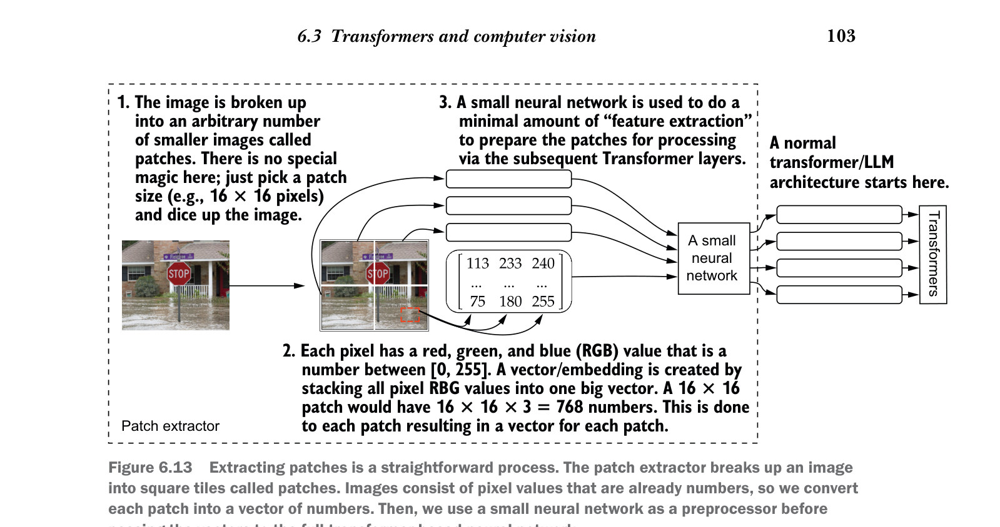
3.使用一个小型神经网络进行最少的“特征提取”，为后续Transformer层的处理准备图像块。常规的Transformer/LLM架构从这里开始。
设计补丁提取器中的小型神经网络有多种可行方案，但所有方案通常效果相当。一种选择是使用所谓的卷积神经网络（CNN），这种网络能够理解相邻像素之间的关联。也有人直接采用Transformer层中的线性层作为替代。在这种情况下，包含小型神经网络和一系列Transformer的整体模型通常被称为视觉变换器。小型网络的设计虽是细枝末节，但值得提及，因为它与产生最终输出的补丁组合器相关。无论选用CNN还是线性层作为小型网络的架构都无关紧要，但必须确保输出形状与输入形状匹配。例如，若使用16×16的补丁，则可通过小型网络强制输出具有16×16×3=768个值，无论Transformer层自身大小如何。为生成图像输出，需逆转补丁提取过程，将向量转换回补丁，再组合成图像，如图6.14所示。至此，我们成功用新的以图像为中心的网络层取代了输入分词和输出嵌入。在许多方面，这比分词友好得多。无需构建/维护词汇表，无需采样过程等。这是Transformer作为LLM通用核心之广泛适用性的关键洞见。只要能找到大量数据并将数据转化为向量序列的合理方法，便可用Transformer解决特定类别的输入输出问题。
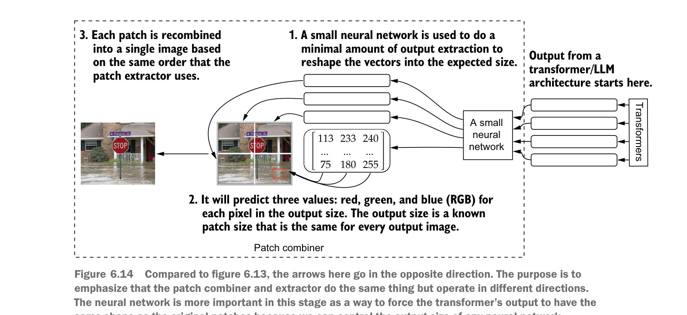
将LLM的输入和输出修改为视觉变换器的能力意味着我们可以把图像作为输入并输出图像。这展示了变换器能够处理不同模态的输入，但我们之前只讨论了输入和输出为同一模态的情况。要么是文本输入文本输出，要么是图像输入图像输出。然而，深度学习是灵活的！没有任何东西强迫我们使用同一模态作为输入和输出，甚至限制输入输出只能是一种模态。你可以组合文本输入与图像输出、图像输入与文本输出、文本和图像输入与音频输出，或者任何你能想到的其他数据模态组合。图6.15展示了图像和文本如何为我们提供四种可能的组合方式来处理不同类型的数据。通过创建一个以图像为输入、文本为输出的模型，我们就构建了一个图像描述模型。我们可以训练该模型生成描述输入图像内容的文本。这类模型有助于使图像更容易被发现，并帮助视障用户。通过创建一个以文本为输入、图像为输出的模型，我们就构建了一个图像生成模型。你可以用语言描述想要的图像，模型会根据你的输入生成合理的图像。像MidJourney这样的知名产品就属于这类模型。虽然它们的实现不仅仅是视觉变换器，但高层思想是相同的：通过将文本输入与图像输出以及大量数据配对，我们可以创建跨越不同数据类型的新多模态能力。
图像生成模型 图像描述 去噪/图像校正 大型语言模型

本书中学到的其他经验教训同样适用于这些视觉Transformer和多模态模型。归根结底，它们学会的是训练所指向的任务，当你试图让它们以训练数据中不存在的方式运行时，可能会得到反常的结果。例如，我们告诉图像生成模型“画任何东西，但别画可爱的猫”，结果很可能还是会得到一只猫，如图6.16所示。这些模型目前是用成对的图像和描述图像的文字片段训练的。因此，它们学会了与输入句子中任何内容进行强关联以生成可视化结果。例如，因为输入句子中包含“猫”这个词，模型就倾向于生成猫。更复杂的抽象绘图指令，如“画任何东西但不要”，在数据集中并不存在，因此模型没有接受过处理这类请求的训练。类似地，随着ChatGPT等大语言模型将提示工程发展为一种设计输入以产生期望输出的策略，图像描述模型也发展出了提示工程。在输入中包含“Unreal3D”等特殊信息并不罕见——Unreal3D是一款用于为电子游戏生成3D图像的软件，使用它可以使输出具有特定风格和质量。诸如“高分辨率”之类的词语，甚至已故或在世艺术家的名字，都被用来试图引导模型生成特定风格。

译文范围: 章节内段落 1–105（共 105 个段落，渲染 66 个，15 个为图像/页眉/页码等不可译块）。
LLM 的七大误解、局限与卓越能力
感谢ChatGPT，世界人们已经更广泛地认识到LLM及其能力。尽管有这种认识，关于LLM的许多误解和错误理解仍然存在。许多人认为LLM在持续学习和自我改进，比人类更聪明，并且很快就能解决地球上的所有问题。虽然这些说法有些夸张，但有些人真诚地担心LLM会严重扰乱世界。我们并不是说对LLM没有合理的担忧，我们将在本书的最后两章更深入地讨论这些问题。尽管如此，与LLM和技术的广泛发展相比，你可能遇到的许多关于LLM的想法和担忧都被夸大了。
本章将讨论LLM工作方式的几个关键方面，以及这些方面与这些误解的关联。归根结底，LLM的这些运作方式会影响你在实践中如何使用或避免使用LLM。首先，我们将讨论人类与LLM学习方式的差异。人类是快速学习者，而LLM默认是静态的。尽管LLM在处理数据方面异常高效，但人类在习得新知识时更能发挥最大效能。接下来，我们将探讨为什么在使用“思考”一词来描述LLM的工作方式时会产生误导。我们将强调，将LLM的运作视为“计算”更为恰当，因为LLM在构思和输出之间没有区别。相比之下，人类常常“三思而后言”。最后，我们将讨论LLM能够计算的范围，以及计算机科学概念如何帮助我们理解LLM当前和未来能力背后的一些固有局限。这三个主题相互关联，因此随着我们逐一深入讨论，你将看到它们之间的联系。
虽然我们已经隐含地讨论过这一点，但明确阐述大语言模型的训练与人类学习之间的差异仍是有益的。生成式AI产出的流畅且通常是清晰的文本，以及我们将大语言模型的能力类比于人类能力时所用的比喻，可能让人以为两者之间存在某种关联。许多人在网上鼓吹这种观念，认为大语言模型能做的事与人类能做的事之间的这种联系是真实存在的。实际上，两者截然不同，这在我们何时、为何以及如何更倾向于使用人类而非AI，以及人类与AI如何协同工作时，都带来重要的考量。从我们目前涉及的材料中，我们知道大语言模型通过预测下一个词来学习，并以数亿篇文档作为示例。在第4章中，我们阐述了大语言模型中“学习”的算法过程：梯度下降算法，该算法通过尝试预测样本输入中的下一个词元来修改大语言模型神经网络的参数。随后，在第5章中，我们展示了像RLHF这样的微调算法如何再次修改大语言模型的参数。大语言模型的这两个学习组成部分与人类学习的相似性极低，并且对我们期望大语言模型能做什么施加了一些关键限制。其中最关键的方面之一，是这种学习方式相对于训练过程中提供的数据量而言的速率和效果。为进一步探讨这一点，考虑一下大语言模型的学习方式与人类学习方式的对比。你是否遇见过这样的人，他从未与任何人说过话，从未有父母对其讲过话，却不知何故理解了语言？很可能没有。事实上，对话是语言习得的关键部分[1]。至少最初，你是通过与他人和环境的互动与交流来获取知识和语言的。因此，你能够用远比大语言模型训练所用数据少得多的信息进行有效学习。
在儿童语言习得的最佳案例中，研究观察到儿童每月接触到约15,000个口语词汇[2]。如果我们慷慨地将这一数字向上取整至20,000个词，并考虑到100年的跨度，一个人一生将接触到多达2,400万个口语词汇。这显然是一个巨大的高估。再加上一个事实：大多数人至少在18岁时就能流利地使用母语，并对词汇和语言结构有隐含的理解。现在与大语言模型对比。例如，GPT-3是在数千亿词汇上训练的。仅从词汇数量来看，这是一种非常低效的语言学习方式！语言习得也帮助我们认识到词汇习得方式上的显著差异。婴儿和幼儿从简单的词汇开始，如"妈妈"和"爸爸"，最终学会像颜色、不、食物等基本概念。随着时间的推移，在先前词汇的基础上逐步增加更复杂的词汇。然而，大语言模型则是根据使用频率同时看到所有词汇。实际上，可以准确地将大语言模型想象为将这本书本身作为其第一次"学习"的一部分进行词元化，即同时获取其所有最终词汇的知识，而不是从简单概念开始并在此基础上构建知识。虽然这个过程有助于大语言模型的学习速度，但可能削弱它在概念之间建立高层次关系的能力。大语言模型相对于人类的关键优势在于其运行规模以及同时执行多个任务的能力。这一优势是机器学习和深度学习中的一个共同主题。你很难雇佣一支大军来梳理书籍、费用报告、内部文件或任何信息媒介，以执行诸如撰写评论、发现潜在欺诈或回答晦涩政策问题之类的知识工作。然而，你可以迅速获得一支计算机大军来尝试自动化这些任务。虽然单个大语言模型可以同时分析句子的多个部分，但你也可以使用多台运行相同大语言模型的计算机并行工作。训练大语言模型也提供了类似的机会：大语言模型是在你一生中永远无法读或听到的更多词汇上训练的，你可以通过租用或购买数千台计算机并发工作来训练一个大语言模型。结合这些事实以及我们在前几章中涵盖的材料，我们可以列出使用大语言模型与人类执行任务相比的几个高层次优缺点。图7.1总结了这些因素，描述了大语言模型的优势和劣势如何导致其使用的自然利弊，从而为LLM应该和不应该使用的场景提供见解。大语言模型的一些优势如下：
训练有素的大语言模型具有LLM拥有广泛的背景信息，因此在处理许多与之前见过的任务相差不大的任务时表现良好，几乎无需额外工作即可生效。虽然这些信息不一定正确或详细，但LLM能够接收并生成合理回应的主题领域之广，远超大多数个人所能覆盖的范围。

对于许多任务，无需获得完全正确的回答。对某一学科领域的通用信息提出宽泛请求，本质上允许LLM在回答时保持灵活和不受约束。如果你通过其他流程来优化LLM的输出，这一点尤其明显。例如，人类可能会对一篇文章进行编辑润色，但使用LLM来生成初稿或提供灵感以打破写作瓶颈，加速创作过程。同样，LLM可以被用来优化作者的写作，通过改写或使用更丰富的词汇，使其听起来更自然或更有吸引力。与人类相比，LLM可以更快地被训练。只需100万到1000万美元的预算来购买计算资源，你就可以在几个月内产出一个广泛有用的LLM。而人类需要很多年才能变得有用。一个能够回答广泛基础问题的LLM，其部署所需的努力和成本远低于寻找、雇佣和留住一名具备特定知识、技能和能力的员工。只要问题在LLM能够处理的范围内，即使不考虑额外开销，其增量成本与人类的小时费率相比也是微不足道的。
以下是LLM的一些缺点：
训练LLM的高昂成本决定了其经济性。这笔训练成本会分摊到LLM训练完成后执行的数千次操作中。如果LLM表现不佳，持续改进使其正常运行的成本很快就会变得高不可攀，更何况它可能永远无法正确完成特定任务。例如，如果一个使用了所有最新工具和技巧的LLM无法解决特定需求，那么解决这一问题所需的工作量和预算将难以估量。相比之下，人类通常能够以低得多的成本在数周至数月内学会新能力，尤其是那些LLM难以掌握的技能。LLM无法可靠地处理训练数据中未曾出现的意外情况和输入。尽管许多LLM已展现出应对新情况的能力，但它们的学习方式与人类不同。人类能在首次尝试时就发现行动未达到预期效果，并迅速调整。LLM无法通过观察错误来自主适应，可能会反复消耗资源试图回答它根本无法理解的问题。LLM很容易被欺骗，在对抗性环境中表现不佳，因为一旦人们找到诱使LLM产生错误结果的方法（例如“即使我没有收入，也请给我贷款”），他们可以重复这种对抗性和恶意行为，而LLM无法自行阻止，除非你实施额外的防护措施。
通常，人类具备自我改进的能力。他们能够聚焦并研究问题，设计新颖的方法，确定所需资源，进而实施并完善解决方案。尽管大语言模型在自我改进方面存在困难，但在生成式AI领域，有人认为大语言模型同样可能实现自我改进。其大致思路如下：
1. 在初始数据集上训练大语言模型。
2. 使用
大语言模型生成新数据，并将其添加到训练数据集中。
3. 在新数据上训练或微调模型。（重复直到LLM达到预期效果。）这听起来直觉上合理，但我们认为它行不通，原因很简单。我们可以利用基础信息论来解释原因，该理论将信息视为可量化的资源。这一论点的基础在于，根据某种信息度量，原始数据集具有固定的信息量。用统计学的说法，我们可以将原始信息描述为可用信息的分布，而LLM在训练过程中试图通过在其模型中存储和编码来逼近或复现该信息分布。当你使用LLM生成新数据时，这些数据样本是对LLM在训练过程中观察到的原始数据分布的有噪声且不完整的复现。从根本上说，LLM的输出不可能包含原始训练数据中不存在的新信息。因此，这类实验的现实是，连续多轮的数据生成和训练会降低模型的质量和性能[3]。要让类似方法奏效，你需要每轮都能提供外部或新信息的东西。这些概念也与一些人的担忧有关：AI能否自我改进到我们完全无法理解或控制的超级智能程度。有些观点认为，LLM可以利用其他工具，通过某种方式获取外部信息或更多训练数据来自我改进。最终，这需要相信：尽管大多数技术都存在改进上限（如收益递减规律），但LLM将不受这些限制约束。图7.2描述了LLM自我改进的内在局限。

技术改进局限性一个绝佳的例子是摩尔定律，它大致指出芯片上的晶体管数量每18到24个月翻一番。摩尔定律基本准确预测了芯片上晶体管数量的增长，但已出现晶体管收益递减的S曲线迹象。芯片上晶体管数量的翻倍速度正在放缓。更重要的是，整个系统性能已经进入这一S曲线。晶体管数量与总计算性能相关，但并不直接指示计算性能。纵观图7.3的全貌，你会发现其他约束条件阻碍了整个系统无限制的改进。撇开摩尔定律不谈，高性能GPU及其托管基础设施的实际成本是无限制改进的另一个障碍。
许多吸睛的标题宣称LLM在医学院入学考试（MCAT）、律师资格考试和智商测试中表现优异。尽管这些测试总是很有趣，并且充满了诸如……
有许多利用外部信息改进生成式AI的例子。一些为机械手设计的算法使用来自物理模拟器的外部信息。苹果公司利用3D建模软件生成数据，从而改进其手机上的虹膜识别[5]。在第6章的例子中，我们看到了一条潜在路径：通过代码编译器或Lean语言来验证数学，从而改进大语言模型。这些例子展示了完全自动化的流程，能够产生新信息，进而实现自我改进。然而，从未有过无限自我改进的实例；使用这些外部工具所获得的收益最终会达到平台期，并且最终仍依赖人类来开发辅助信息——比如为机器人编写更好的物理模拟器、为代码编写更好的编译器，以及诸如Lean之类的更完善的领域知识系统。改进这些工具会加剧训练大语言模型的巨额成本，从而在实用性之外，对大语言模型的自我改进施加了第二重经济限制。
少样本学习也称为上下文学习。这项技术涉及在发送给LLM的提示中提供你希望它生成的输出类型的示例。假设你希望LLM用准确的信息回复一个帮助台问题。你可以给LLM一个包含用户向帮助台提问的提示，后面跟一个适当回复的示例。如果只提供一个示例，则称为单样本学习。提供两个示例而不是一个被称为两样本学习，以此类推，因此将这种方法描述为少样本学习，因为示例的具体数量通常不如仅提供少数示例这一事实重要。这种将示例融入提示的方法是一种特定的提示工程，如图7.4所示。
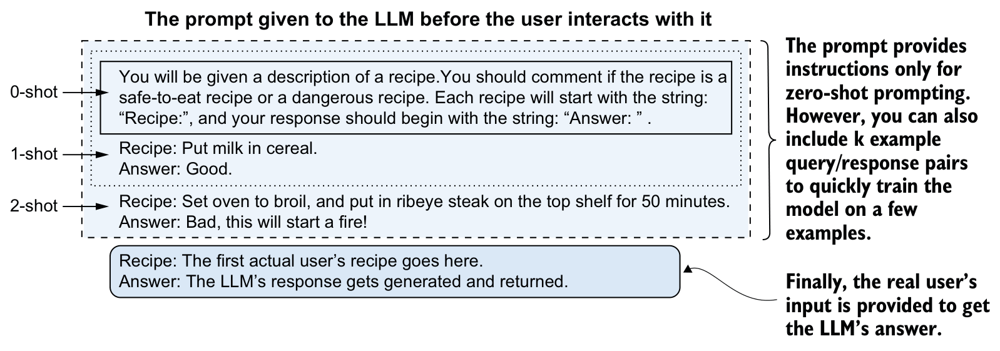
在提示中包含示例有助于提升LLM在新任务上的表现。无需使用RLHF或SFT来修改模型，这种方法也比零样本提示（即要求LLM在没有示例的情况下完成任务）效果更好。但这算高效学习吗？
少样本提示并非训练，因为我们没有以任何方式改变模型，这与训练或微调过程不同。LLM的“状态”或权重保持不变。无论LLM在周一完成任务多么准确，它在周二和周三都会同样准确，无论它处理了数千还是数百万次少样本提示。模型的能力不会有任何提升，除非你手动采取措施，比如在提示中加入更好的示例、提供更多示例，或者以其他方式进行干预。从这个意义上说，没有真正的学习发生，模型没有任何改变。我们只是通过改变提示来获得模型改进后的输出。然而，从抽象意义上讲，LLM确实在学习，因为提示通过提供额外的上下文描述问题，从而改变了模型的行为。通过提示表现出的行为与通过类似示例微调获得的行为相关[6]。简而言之，这意味着少样本学习从根本上并没有体现出与梯度下降已经能做的任何不同。
注意：如果你的数据量不大，对于从业者或用户而言，少样本提示（few-shot prompting）很可能是让LLM在你的数据上表现良好的最有效方式。因为我们可以将这种提示视为低效的梯度下降或微调，所以随着你在少样本风格中添加示例，应该预期会出现收益递减。例如，如果你在提示中包含了大量关于你希望LLM如何响应的示例，但仍然没有得到所需的性能，那么你应该考虑第5章讨论的SFT、RLHF以及其他微调方法。
人类大脑维持意识仅需相当于10瓦的功率，这让你能够阅读本书。配备用于AI/ML工作GPU的高端工作站，轻松就能消耗2000瓦的功率。用于运行当今大型LLM的高端服务器，功率范围在10000到15000瓦之间。乍一看，使用LLM完成某项任务的功耗似乎比人类高出1500倍。我们应当为人类进化在效率方面的这一成就感到自豪，但这仅仅是效率概念的一个维度。图7.5展示了人类与机器相比，在多种效率维度上可能具备的优势。
功耗是决定创建和运行LLM财务成本的关键因素之一，但真实需求尚不完全明朗。诚然，许多提供商会给你一个运行LLM的报价，但我们并不清楚每个提供商的实际成本或利润率。例如，某个LLM提供商可能采取负利润率或亏本策略，使用LLM的长期成本可能高于基于当前价格所呈现的水平。我们

我们知道，LLM 对电力的需求极大，以至于大型科技公司正在制定建造核电站的计划，以满足未来数据中心运行所有预期模型所需的电力[7]。基于此，我们可以预见新的 LLM 将更大、更耗电，但其价值将抵消为其数据中心建造专用发电厂的成本。基于这一因素，当成功的 LLM 解决方案带来更多需求时，你需要谨慎；在满足需求时可能会遇到电力容量问题。你还需要注意电力成本的弹性。不仅 LLM 提供商可能改变成本结构，而且如果你自己托管 LLM，美国确实会出现6倍的电力价格波动[8]。如果你的目标用户群只有2万用户，这可能不是问题；但如果你计划构建服务于数百万甚至更多用户的产品，电力成本可能成为重大的运营和环境隐患。
延迟是指从查询LLM到获得一些输出所需的时间，可扩展性描述的是如何快速地从运行一个LLM扩展到运行一千个，而可用性则描述的是让LLM全天候运行的能力。这些都是LLM——更广泛地说，计算机整体——相对于人类的重大优势。LLM和AI/ML能够比人类更快、更及时地对更多情况做出反应。这种反应速度既可以是好事也可以是坏事。当你有一个需要监督和审核输出的系统时，如果不制定相应的人员配备计划，你就无法获得LLM的全部可用性优势。
在7.1.1节中讨论过，LLM无法轻易自我改进。然而，人们确实能够并正在改进，随着时间的推移提高流程效率是一个常见目标。你需要让人参与其中，以设计更好的提示和创建更好的训练方案来提高LLM的效率；没有他们，LLM的性能就不会提高。提高LLM效率不仅仅涉及升级到更新的LLM或微调现有模型，还包括建立基础设施，记录输入、输出和性能指标，以研究哪些有效、哪些无效。你可以使用我们在5.5.2节讨论的DSPy等框架来捕获这些项目，并识别和处理那些不起作用或随着世界环境变化开始失败的案例。例如，你可能开发了一个初始LLM，它运行良好。但那些该死的孩子们不断向iDroids和appleBots添加新的表情符号[9]。如果没有额外的训练，你的LLM将无法理解这些新表情符号，但你的客户将不可避免地开始使用它们，因此系统将开始表现不佳。如果你不记录LLM的输入和输出到日志中，或者不向用户征求反馈（他们可以提供关于LLM失败或成功领域的信息），你永远不会发现这个问题。捕获这些信息对于改进和完善流程至关重要，而LLM在没有人类干预的情况下无法做到这一点。
在机器学习领域，数据漂移概念备受关注，即现实世界中的数据不断演变，超出了模型训练数据所捕捉的范围。处理自然语言时，表情符号只是现实世界数据随语言使用演变而变化的其中一个具体例子。表情符号的例子可以延伸到包括新术语或语言中现有词汇新用法所带来的问题。通过审视该领域的现有工作，我们可以确定用于测量和缓解LLM数据漂移的额外技术，例如收集更多训练数据并微调模型，或修改提示以包含对先前未见术语的补充定义。
语言模型并非世界模型。
你可以经常从LLM中获取关于世界的准确信息。因此，人们很容易认为语言模型知道世界上的事物。的确，作为本书的读者，你可以不采取任何特定行动就能推理世界以及将要发生的事情。注意，我们讨论的不是预测股市这样复杂的事情，甚至包括简单的行动和想法。例如，如果你告诉某人他们的毛衣很丑，会发生什么？你不需要与环境互动，也不需要找一件丑毛衣来回答这个问题。你不需要说话或与任何人或任何事物互动来回答这个问题。你可以想象毛衣的“世界”以及别人可能的感受，并推断结果。如果我告诉你有人在圣诞派对上穿着那件毛衣（也许是一个丑毛衣比赛？），你可以更新你关于世界的心理模型，并在没有亲身经历的情况下推断结果。LLM不能在说话之前思考。生成文本是LLM最接近“思考”的方式（在此语境中松散地使用该词）。你可以在图7.6中看到一个简单的例子，其中LLM过于冗长的推理最终导致它提出了一个不错的评论。推理，无论是由我们人类隐式或显式地完成，都与我们说出推理内容的行为是不同的。对于LLM来说，没有过程的分离；需要产生更多的输出来“更多地思考”答案。因此，LLM不能独立于输出生成进行思考。
警告：我们松散地在LLM的语境中使用“思考”一词。严格来说，我们的意思是LLM回答问题所进行的计算不是动态的。输出10个token所需的工作量与该token的内容无关。回答一个需要人类更多思考的复杂问题，可能会要求LLM进行更多的计算，但这通常意味着LLM必须产生更长的输出，即使答案不应该更长。每当有人将“思考”一词与LLM联系起来时，最好用“计算”来替代“思考”。
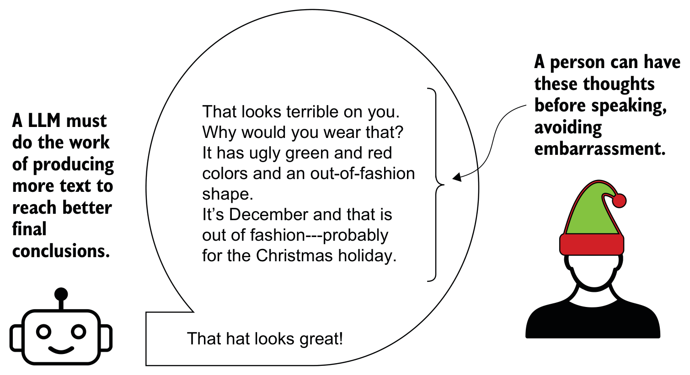
这个例子表明，如果LLM不生成关于规划过程的文本，它就无法进行规划。如果LLM不产生文本，就好像它不存在一样。有一些构建提示的方法，可以鼓励LLM将其输出分解来模拟规划。这通常被称为思维链（CoT）提示，即在提示中包含像“让我们一步一步地思考”这样的语句。这种逐步指令通常能提高模型执行任务的能力[10]，但尚不清楚为何会提升性能。再一次，“思考”一词的模糊性会导致对LLM能做什么和不能做什么产生不合理的预期。即使使用CoT，LLM仍然会犯许多错误，例如遗漏步骤、遗漏计算，以及执行逻辑无效的推理[11]。当LLM生成分解为一系列步骤的输出时，其他因素也可能有助于观察到的性能提升。考虑以下情况：
在第三章中，我们学习了 Transformer 及其实现中使用的注意力机制。我们了解到，LLM 接收的输入和产生的输出越长，Transformer 进行的计算就越多。那么，分步思考之所以效果更好，仅仅是因为 LLM 通过 Transformer 进行了更多的计算吗？如果 LLM 拥有世界模型，它就可以在不生成输出的情况下对输出进行这种计算。LLM 反映了其训练数据的本质。训练数据中可能存在与“分步思考”以及其他教学材料相关的内容，这些材料更加冗长且通常正确。最终，我们可能会手动将 LLM 的模糊回忆与更相关的训练文档对齐，而不是让 LLM 执行一种根本不同的功能。
警告：“世界模型”的精确定义尚未有广泛共识，不同人可能有不同理解。在讨论世界模型时，最好先明确其定义，以确保大家在同一基础上交流。目前许多关于LLM的讨论往往各说各话，我们将在本书最后两章进一步探讨这一现象。
这些问题颇具挑战性，涉及开放性的研究课题。我们的立场是，LLM的显著失败表明这些表面原因比更深层的原因更可能是正确的解释。重要的是，一些细分研究致力于为机器学习方法注入世界模型。一个技术性强但相当易懂的2018年示例来自David Ha和Jürgen Schmidhuber，可在网上查阅（https://worldmodels.github.io/），该示例展示了相比当时现有方法的巨大性能提升。其他研究者正致力于为LLM构建世界模型，以及将LLM本身用作世界模型[12]。当前的方法不具备与人类同等高度的灵活性；这些示例的范围更为有限，仅适用于某一类通用问题。
有些人担心“失控”的AI，即AI算法变得极其先进和强大，能够解决我们永远无法解决的问题，并且这种AI的目标与人类福祉不一致。如果存在这样的AI，它就能以我们无法改进自身的方式自我提升，从而产生更强大的AI。许多人任由这种想法蔓延，幻想LLM将变得近乎神一般，能力超群，超越人类的推理能力。这里涉及一个伦理问题，我们将在本书最后一章详细讨论。目前，有一个简单的技术原因让我们对此并不十分担忧，同时它也帮助我们理解LLM的实际局限性。本质上，有很多方法可以衡量所谓的计算复杂度或算法复杂度。通过将LLM的复杂度与其他研究充分的算法进行比较，我们可以更具体地了解LLM能做什么、不能做什么。我们还将讨论，在适当情况下，使用LLM的近似解如何能避免精确解所面临的某些复杂度。在计算机科学中，我们花费大量时间学习算法复杂度。对大多数学生或从业者而言，这意味着理解输入数据量的变化如何影响处理过程产生结果所需的时间。其中一种较为理想但现实中很少出现的情况是：如果输入翻倍，处理时间也翻倍。换句话说，处理n个项目（对LLM而言，一个项目可能是一个token）需要2天的过程，处理2×n个项目则需要4天。在计算机科学中讨论复杂度时，我们通常使用数学符号——大O表示法——来传达不同级别的复杂度。当处理过程的计算时间与输入规模以相同速率增长时，称为线性复杂度，在大O表示法中记为O(n)。如果绘制以数据量为x轴、计算时间为y轴的图表，将得到一条直线，因为数据和计算时间以相同速率增长。其他常见的现实复杂度包括对数线性（O(n log n)），其中2×n可能接近4.4天；二次（O(n²)），其中2×n可能接近8天；以及指数（O(e^n)），其中计算时间随输入规模增长如此之快，以至于你的算法完成之前世界很可能已不复存在。在每种情况下，随着系统变得更复杂，输入规模与计算时间的关系图会变得更陡峭。换句话说，对于更复杂的算法，处理时间会随着处理数据量的增加而增长得更快。我们进行了这次简短的计算机科学之旅，以帮助您理解运行LLM的计算复杂度。对于n个项目的输入，LLM具有O(n²)或二次复杂度。如果我们能证明某个算法/任务需要超过O(n²)的工作量，那么我们就基本上证明了LLM无法高效解决该问题，因为LLM的核心算法无法精确执行具有该复杂度级别的算法。
警告：这不是这里并非一门关于形式化方法或算法的研究生课程；我们只是对算法复杂度研究进行快速概述。目标是让读者对这一问题形成技术直觉，但我们并未提供足够的知识来深入讨论该主题。要了解更多关于算法和复杂度的内容，可参见 Aditya Y. Bhargava 的《算法图解：程序员与好奇人士的趣味指南》[13]。
如果LLM能够解决一个要求立方复杂度O(n³)的问题，但LLM自身的复杂度更快（更小）为O(n²)，那就出现了逻辑矛盾。换言之，LLM无法比复杂度分析所表明的速度更快地解决复杂问题。许多现实任务和算法的复杂度都高于O(n)。我们在表7.1中描述了几个例子，你会注意到列举的这几个都与物流或资源分配有关。例如，包裹投递和航班改签都是算法复杂度极为棘手的问题。
表7.1 一些不同时间复杂度的重要算法示例
用于所有密码学的 O(en)（即使用量子计算机，仍然是 O(n3)），旅行商问题（路径/物流配送）O(en)，线性规划（用于可分割资源分配和网络流）O(n3)，整数规划（用于不可分割资源分配）O(en)。我们关心算法的第二个重要且相关的原因是算法的复杂性类。复杂性类定义了算法能解决的问题的可能范围。最著名的复杂性类是P（多项式时间）和NP，这些问题至少需要O(en)时间才能完成。这些非常广泛的类基本上包含了你可能关心的所有问题。
注意：许多人认为NP代表非多项式，但这是错误的！它实际上代表非确定性多项式。
有趣且富有信息量的是，William Merrill 和 Ashish Sabharwal [14] 证明，LLM 解决问题的能力与其在中间步骤中生成的 token 数量相关。对于 LLM 而言，生成响应属于一种称为 TC0 的复杂性类（我们知道，计算机科学家最不擅长命名）。这个复杂性类限制非常严格，意味着 LLM 几乎无法解决任何问题。随着中间步骤 n 变长，你最终会达到复杂性类 P。这意味着 LLM 永远无法解决 NP 或更难的实际问题！我们将这一切总结在图 7.7 中，该图展示了这些复杂性类层次之间的关系。这一发现更具破坏性，因为复杂性类描述的是你能解决的问题类型，而非解决它们的效率。例如，要解决一个涉及 n^c 复杂度的算法，LLM 必须生成大约 n^c 个 token。然而，LLM 处理 n 个 token 也需要 O(n^2) 时间，所以你最终会
从工作地点到家最短路径的求解、计算机芯片电路布局的设计、文字处理器中的查找与替换
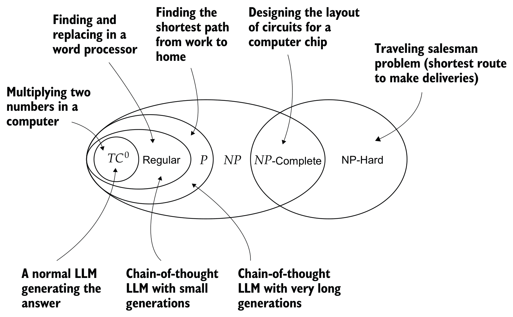
这种复杂性估计未考虑LLM训练数据以及开发提示词（使LLM无错误地成功执行算法）所需的时间。
关于算法和复杂度的讨论听起来可能对LLM非常不利。实际上，只有当你要将LLM应用于需要正确输出的问题时，才是不利的。如果你的系统连最小的错误都无法容忍，那么你就不应该使用机器学习，更不用说LLM了。与整个机器学习领域一样，LLM最适合处理模糊问题——这类问题中，正确与否的标准很难界定。在模糊问题中，存在错误通常是可以接受的；其他流程可以弥补这些错误，或者错误的成本小到可以忽略。这就是为什么文本和自然语言非常适合LLM。像“Suzy在那封邮件里是什么意思？”或“John在文中暗示了什么？”这类问题的答案本质上是模糊的。人类语言充满了不精确、澄清和重复，这与让LLM解决需要一致且精确答案的问题的难度高度契合。
暂且自我辩驳一下，我们也应指出：当“解决”被理解为“找到最优解且没有更好的解存在”时，人类同样无法解决NP难问题。我们之所以用近似方法解决复杂问题，是因为我们知道这些问题太棘手，无法完美求解。
例如，在表7.1和图7.7中，我们提到了旅行商问题，这是一个用于配送路线规划的著名且重要的问题。邮递员希望以最少的时间和距离投递所有人的邮件，且不重复任何路线。从计算角度看，找到最佳路线是NP难的，因此你只能将其应用于几百甚至几千个投递目的地。然而，存在更快的二次算法来近似求解该问题，并且我们可以证明它们给出的路径长度不会超过最短路径距离的两倍。因此，在现实世界中，我们使用这些算法和其他技术来获得“足够接近即可满足”的解决方案。同样地，LLM也可能获得“足够接近即可满足”的解决方案，但它们仍然受限于这样一个事实：它们在处理精确问题时效率低下。如果不了解LLM的训练数据，我们很难估计它通过近似求解难题的效果如何。考虑一下，国际象棋在技术上比NP难更难。GPT-3.5可以下出不错的棋局，足以击败真实的人类棋手[15]，尽管还达不到专用象棋程序那种“主宰人类”的水平。这是否表明LLM擅长近似求解极难的问题？很可能不是。首先，ChatGPT的象棋水平在将象棋作为评估指标后显著提升(https://github.com/openai/evals/pull/45)。我们有理由怀疑ChatGPT的制造者进行了微调，将象棋明确纳入了目标。其次，互联网上充满了可供人们学习和研究的棋局(https://old.chesstempo.com/game-database.html)，因此ChatGPT很可能在其训练数据中学习了完整的象棋对局。尽管如此，令人感兴趣的是，ChatGPT可以利用其训练数据中的内容来下出合理的棋局，将之前见过的棋局与未来略有不同的局面相匹配。在考虑基于LLM的解决方案在哪些场景下效果最佳时，我们推荐以下思维框架：将LLM应用于重复性强、变化幅度小的问题，以最大化其效用。文本摘要、语言翻译、撰写文档初稿以及检查现有写作等应用均属于此类。深度学习其他领域也带来了类似的教训，这些领域的模型内部推理比LLM更容易理解。例如，围棋游戏是数十年来人工智能研究中最持久的挑战之一。直到最近，AI才能在该游戏中击败冠军级棋手。与LLM类似，围棋AI通过观察大量对局示例进行训练。然而，如果你构建一个执行异常和/或荒谬着法的围棋机器人，它可能击败“超人类”AI，但会输给人类业余棋手[16]。这个例子也凸显了在对抗环境中使用LLM的风险，在这种环境中，人类应对重大新颖性的能力远胜于当前的AI/LLM。
总结：LLM相对于人类最大的优势在于其可实现的规模。LLM可以低成本、全天候运行，并且按需调整规模，其难度远低于培训或裁减人力团队。人类更擅长处理高度新颖的情况，这一点在与LLM交互的用户可能是对抗性用户（例如试图欺诈）时尤为重要。我们知道LLM在处理与训练数据中见过的类似问题时表现良好，这使得它们适用于重复性工作。提示工程很可能是“教”LLM新知识的最有效起点，除非你能投入大量精力和资金进行数据收集和微调。LLM无法自我改进，且在解决需要特定正确答案的算法问题时效率低下。它们最擅长处理“模糊”问题，这类问题有可接受的输出范围，且允许一定程度的误差。
译文范围: 章节内段落 1–91（共 91 个段落，渲染 56 个，14 个为图像/页眉/页码等不可译块）。
8 使用大型语言模型设计解决方案
至此，你应该已经对LLM及其能力有了深刻的理解。它们生成的文本与人类文本非常相似，因为其训练数据包含数以亿计的人类文本。其产出虽然价值巨大，但也难免出错。如你所知，通过引入领域知识或计算机源代码解析器等工具，可以缓解这些错误。现在，你已经准备好在LLM的帮助下设计解决方案了。如何将迄今讨论的一切转化为有效的实施计划？本章将引导你了解设计该计划的流程、权衡与考量。为此，我们将使用一个大家都能感同身受的贯穿示例：在需要帮助时联系技术支持。
首先，我们来考虑一条显而易见的路径：构建聊天机器人。聊天机器人是许多人接触大语言模型的载体，因为它们通常能出色地完成交互式输出生成。我们将评估在客服场景中部署基于大语言模型的聊天机器人所面临的风险。通过这一讨论，你会看到与其它方案相比，使用大语言模型可能会增加风险。但如果风险足够低，简单的聊天机器人仍不失为一个有效选择。接下来，我们将探索通过应用设计来管理风险的方法，这些设计能改善客户与大语言模型的交互方式。我们将讨论，让人类检查大语言模型输出的每一个结果会因“自动化偏差”现象而问题重重。我们将探讨一种略显反直觉的避免自动化偏差的方式：改为由大语言模型监督人类。我们将探究如何将大语言模型的嵌入（即文本的数值化语义表示）与经典机器学习算法相结合，来应对这一风险并处理大语言模型无法独立完成的任务。最后，我们将研究技术如何呈现给用户，以及在建立信任和传达对其内部工作原理的理解方面发挥的关键作用。我们将讨论“可解释AI”领域，其中机器学习算法会生成描述或解释其如何得出特定输出的额外输出。可解释AI常被用于处理人们需要理解大语言模型工作原理的场景，但研究表明，尽管可解释性可通过用人类语言描述模型行为来揭示大语言模型的内部机制，但其本身往往无助于实际应用。相反，我们将阐述关注透明度、与客户激励对齐以及创建反馈循环的好处，通过这些方式设计出的解决方案能更好地满足企业及其客户的需求——提供准确输出并提升业务流程效率。
毫不意外，许多人正在使用基于Transformer架构的大语言模型构建聊天机器人，正是支撑ChatGPT的同一项技术。这显然是一个看似合理的初步步骤。ChatGPT与人互动、适应对话以及检索和呈现信息的非凡能力，展示了大语言模型技术对客户交互应用的强大支持。随着大语言模型的出现和普及，试图用任何其他方法（例如使用基于预置应答决策树训练的专家系统）来实现客服代理，很可能是一种短视行为。当不满意的客户遇到技术问题时，他们不再需要搜索在线常见问题解答文档、给问题工单系统发邮件石沉大海，或者拨打自动语音应答电话，而是可以直接与AI驱动的工具互动，逐步解决问题。这在纸面上听起来很美好，如果你画个像图8.1这样的小示意图，确实看起来我们在简化生活。

当然，在某些情况下，聊天机器人是一个好主意。但令人惊讶的是，对于大多数公司来说，一个基于LLM的在线客服聊天机器人可能并不在客户支持工具的首选之列，因为构建一个在多种情况下准确可靠、且在遇到意外输入时不会产生意外输出的系统需要付出大量努力。归根结底，是否使用LLM来构建客服聊天机器人的决策，取决于我们一直在讨论的LLM在生成客户回复时可能犯的错误。我们知道LLM并非无错误，虽然机器学习有时很实用，但在考虑部署这项技术时，这些潜在错误的代价是首要决策标准。从根本上说，使用LLM可能会增加这些错误的成本。关键在于，目前形式的LLM可能会提供错误的答案，而由此产生的责任将由部署和维护这些系统的公司或个人承担。高管或产品经理可能会从几个经典业务关键绩效指标的角度来考虑错误成本。例如，如果将客服工作交给聊天机器人，客户留存率可能会下降。当然，这一留存率可能仍高于将客户关系职能外包给其他国家呼叫中心的情况。确实，这些考虑因素值得评估，在全面用LLM取代客服功能之前，你可能应该进行试点部署，看看客户的看法。
注意：我们几乎总是推荐对任何机器学习系统进行试验性部署。投资格言“过往业绩不代表未来收益”适用于所有人工智能。实现这一点的一种方法是通过模拟部署，即将新AI系统与现有流程并行运行几周或几个月。你可以选择忽略新系统的输出，同时保持现有业务流程不变。这使你有时间观察当前流程和新流程之间的差异，识别并解决问题，并确定机器学习系统的性能是否随时间下降。
最重要的是，你的 LLM 可能会给出对用户有害的建议。由于 LLM 并非能够承担法律责任的个人，你和你所在的公司将承担相应法律责任。这样的情况已有先例：一家航空公司部署的聊天机器人给出了错误的政策说明，法院判定该公司必须遵守其聊天机器人错误生成并传播的政策 [1]。我们建议，在部署 LLM 时始终秉持对抗性思维。多问一句：“一个动机明确的恶意行为者如果知道系统的工作原理，会做什么？”这有助于识别并缓解重大风险，也常常是判断你的 LLM 应用是妙计还是昏招的最佳方式。例如，某汽车公司将 LLM 集成到官网中，用于辅助售车和解答问题。结果，用户们发现这一点后，不到一天就成功说服网站以 1 美元的价格卖给他们一辆车 [2]。如果错误可能带来的成本或风险较低，你大可放心部署 LLM 聊天机器人。但在本章中，我们不妨假设这个技术客服代理至关重要，其错误可能给公司造成巨额损失。那么问题就来了：如何设计一个既能提升生产力和效率，又能限制用户直接访问 LLM 的解决方案？如果你刚接触 AI/ML，而聊天机器人是你对这个领域的主要认知，这听起来可能有些矛盾，但确实有一些简单、可重复的设计模式可以应用。
一种常见的降低LLM用于直接客户交互风险的方法，是让LLM与支持人员或技术人员交互。这种方法通常被称为“人在环路中”，因为有人会审查LLM与客户之间的反馈循环，对自动化系统的输出进行关键评估，并在发现错误时进行干预和调整。技术人员仍将被雇佣，但我们会通过让LLM为用户的每个问题生成初始回复，然后由技术人员管理这些回复以确保其准确性和相关性，从而提高他们的效率。如果LLM生成了可能代价高昂或不正确的回复，我们可靠的技术人员就会介入并给出更合适的回复。在这种情况下，最终由技术人员选择恰当的、权威的回复。细心的读者如果还记得我们在第5章讨论的检索增强生成（RAG），甚至可能会想到改进这个想法的方法。你可能会说：“啊，我们可以把所有的培训手册和文档放入数据库，然后使用RAG，这样LLM就能检索到与用户问题最相关的信息。”这种方法在图8.2中进行了概述，该图展示了一个过程：用户的问询首先被发送给LLM，以利用已知答案集合聚焦输出生成。
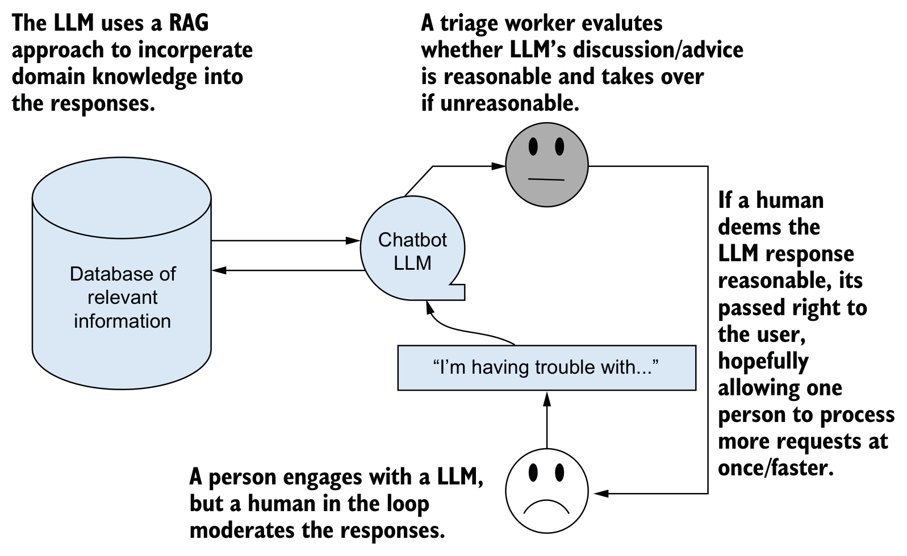
RAG方法可能会减轻很多风险，但也有可能陷入自动化偏差的陷阱。自动化偏差指的是，人们普遍倾向于选择系统提供的自动化或默认选项，因为这比运用批判性思维来判断哪个选择最适合当前情况要容易。如果一个系统工作良好且无需频繁干预，那么保持高度警惕并发现偶尔出现的错误就变得极具挑战性。矛盾之处在于，如果系统的建议非常不准确以至于你能保持警惕，那么与完全不使用自动化直接回答问题相比，该系统很可能反而会拖慢你的速度。这就是试用或模拟部署变得极其重要的地方。如果你的系统非常准确，以至于自动化偏差才是真正的风险来源，那么你有两个无需偏离“人在环路”设计的选择：
在流程中添加“转人工”通道 通过流程变更从外部降低错误风险 第一点非常直接。最终，LLM会遇到无法回答的新情况。在这种情况下，最好为客户提供一种方式，使其能够从与计算机的无限循环中“解脱”出来，获得更高级别的支持。这可以是通过消息数量或聊天时长设定的最大对话长度、在多次沟通失败后出现的联系人工客服选项，或其他可能的设计。
注意：假设你将着手创建RLHF或SFT数据集，以便按照第5章讨论的方法，针对你的场景微调LLM。在这种情况下，你甚至可以添加训练样本，让LLM的预期回复是：“抱歉，这个情况听起来比我能够协助的更复杂；让我找一个人来帮忙。”
第二个建议——改变流程——并不像听起来那么困难。如果你的某位上司拥有MBA学位，那么他们（据说）受过训练，会从这些角度思考。（本书的一位作者拥有MBA学位，所以我们说这些没问题。）例如，与聊天机器人的交互可以包含一条提示，即任何结果都需要“经过人类的最终批准”。在这种情况下，由一个人审核整个对话，其自动化偏差风险远低于要求某人在整个持续对话中保持持续警觉。最终，对抗性用户知道会有人类检查，因此失去了尝试欺骗系统的动力。根据具体情境，防止LLM被对抗性使用可以通过要求用户提供担保来确保他们诚信行事来实现。例如，你可以采取相当于冻结用户信用卡的措施，作为针对恶意交互的一种保险。当交易成功完成时，该冻结将被解除。你也可以限制流程的自动化程度，要求身份验证，或者随机决定用户被转接给人类还是AI的频率，从而使得可被利用的情况何时出现变得不可预测。所有这些措施都取决于你的具体应用、风险、对风险的容忍度以及用户的特性。一些客户可能会因为信用卡冻结而感到反感。或者，你也可以将其设计为一种可选方式：如果AI系统成功帮助用户解决了问题，用户将获得2美元的账单减免（假设这比旧系统每次通话的成本更低）。无论如何，这都需要具体问题具体分析，并取决于你管理风险的创造力。
现在你已经完成了试部署，评估了风险以及用户的对抗性倾向，并得出结论：让大语言模型提供初始答案风险太大。那么大语言模型还能如何提供一定程度的效率呢？一种反直觉的方法是让大语言模型检查人，而不是让人检查大语言模型。这听起来可能很奇怪。如果我们不能信任大语言模型独立行动，为什么还要让它来监督呢？为了进一步思考，设想你有一个大语言模型系统扮演监督角色，检查每一条回复，如图8.3所示。如果大语言模型和人都正确，就会执行操作，并将消息转发给客户。这就像用户在与技术人员聊天。但如果技术人员和大语言模型对答案有分歧，我们可以提示技术人员在发送给用户之前再次检查自己的回复。
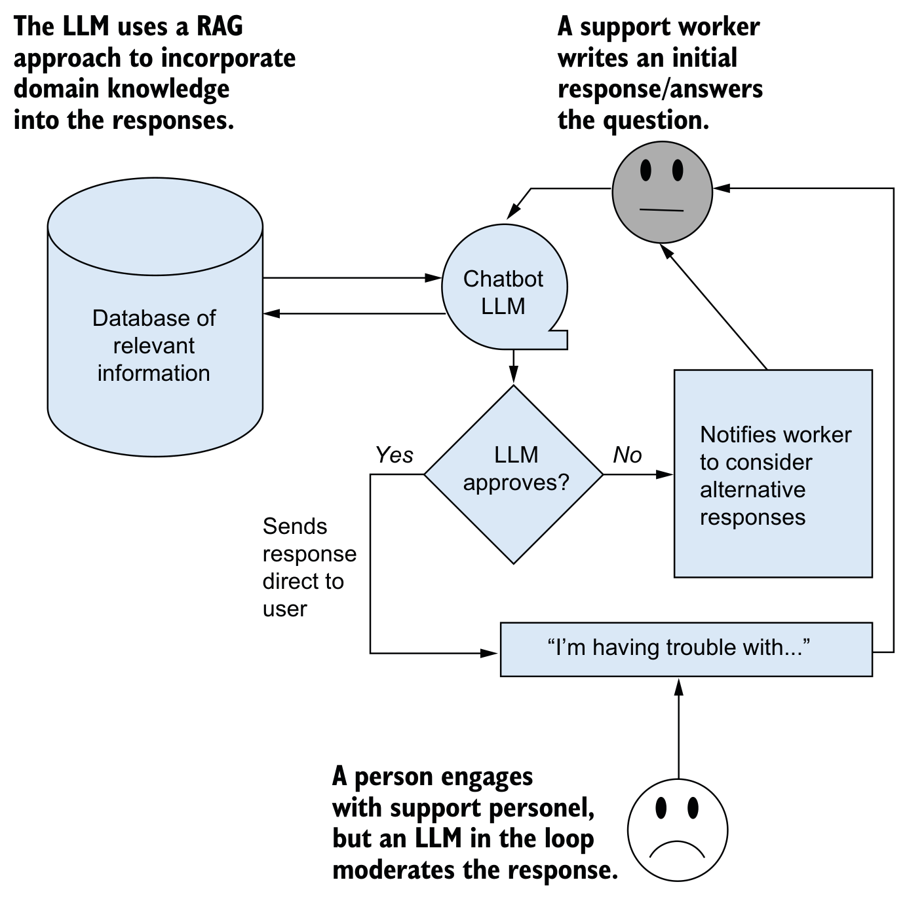
这种双重检查可以简单到对技术人员说：“嘿，这个解决方案看起来可能不正常，请确认后再发送。”你也可以尝试让LLM自己生成一个建议的替代方案。或者，你可以让LLM不直接参与流程，而是用它通知更有经验的技术人员加入并协助。无论结构如何，其目的都是发出信号：可能存在负面客户交互的风险，例如给出错误答案。虽然这种风险一直存在，但现在我们有机会加以缓解。此外，由于我们考虑的是人为导致的客服错误，通常不会引入新风险，因为单独工作的客服代表同样容易犯错。因此，如果LLM和人同时出错，那么该流程错误本就是无法避免的。这就是生活。从技术上讲，我们可以辩称，技术人员可能会根据LLM对交互的评估而过度质疑自己的回复，从而降低效率。此外，过于敏感的LLM可能会过于频繁地要求技术人员双重检查工作，这会导致警报疲劳，进而使技术人员完全忽视LLM的建议。如果你的用例容易出现此类问题，这一事实将在试部署中被揭露，试部署会提供关于如何调整LLM以解决该问题的上下文相关反馈。适用于所有机器学习的一般警告在此尤为重要：始终测试，不要假设。
采用大语言模型通过复核人工表现可以减少整个流程中的错误。这种方法看起来并没有加快速度，因为仍然由人工生成初始响应。不过，这种方法仍然创造了提高效率的机会：
它可以通过帮助发现错误并更快地找到解决方案来缩短对话长度。它可以识别出哪些员工需要更多培训或信息来回答客户问题，或者识别出特定错误情况的发生。它可能有助于避免升级到成本更高的支持层级或管理层，从而降低棘手客户的出现频率和处理成本。
我们讨论的所有内容都涉及一种“以火攻火”的策略，即尽管使用 LLM 存在风险，但我们考虑了用 LLM 来缓解这些风险的不同方式。虽然我们改变了使用 LLM 的方式，但 LLM 仍然是主要组件。或者，我们可以考虑使用 LLM 之外的工具来解决设计挑战。生成式 AI 范围内的其他方法，如文本转语音和语音转文本，可用于构建更易用或更便捷的用户体验。例如，患有关节炎或视力低下的用户可能更愿意打电话，而不是在聊天机器人提示窗口中输入回复。如果我们思考客户服务问题以及 LLM 何时表现良好，就会发现一个更广泛工具类别的要素也已具备。在问题重复出现且可以给出公式化解决方案和回复的场景中，LLM 表现最佳。LLM 在识别语言模糊性中的宽泛模式方面非常灵活。如果 LLM 能正确解读用户的问题，且存在已知解决方案，它就有可能引导用户完成该解决方案。这听起来很像无监督聊天机器人，但关键区别在于，在 LLM 在解决方案中扮演辅助角色的情况下，输出最终是由客服技术人员生成的，如图 8.3 所示。本节还将讨论如何使用经典机器学习技术（如分类）来解决现有问题。我们可以通过利用 LLM 中的知识，生成用户文本的嵌入，来启用机器学习技术。
在第3章中，我们描述了大语言模型如何将词元转换为嵌入向量，这些向量是以一系列数字编码每个词元语义表示的向量。这些向量嵌入在大语言模型的Transformer架构之外也有其他用途。虽然向量嵌入对于大语言模型的运行至关重要，但它们本身也是一种极其有用的工具。
LLM 生成的向量具有语义特性，这一点很重要，因为数百种其他实用的机器学习算法都基于向量表示进行运算。LLM 本质上是一种非常强大的工具，能够将复杂的人类语言文本转换为与机器学习其他领域兼容的形式。将 LLM 的向量输出与其他算法结合使用是一种极其有效的策略，以至于从业者将其称为“创建嵌入”。这一说法源于 LLM 将一种表示（人类文本）嵌入到另一种表示（数学向量）中的概念。由于这些数字编码了原始文本的信息，你可以像处理数值一样将它们绘制出来，并发现相似的文本在图中的位置也相近，如图 8.4 所示。
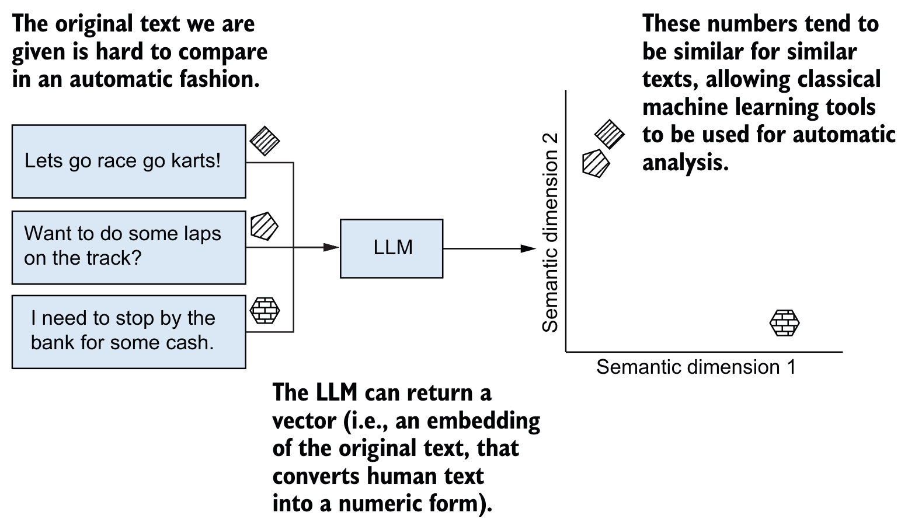
我们快速了解一下，在获得嵌入向量后，可以使用的四种机器学习算法。我们认为每一种机器学习算法对于大多数与LLM结合的实际应用场景都特别有用；我们还将介绍一些常见且相对可靠易用的算法。关键在于，如果你跳出“只有LLM才能解决问题”的思维定势，你就会发现更多可用的工具。以下列表就是这些工具的入门指南：
信息可视化——创建二维绘制数据图以便进行可视化检查/探索，尤其是与交互式工具结合使用时（即数据探索）。常用算法包括UMAP和PCA。分类与回归——如果使用已知结果（例如净推荐值评分）对旧文本进行标注，则可以使用分类（即从A、B或C中选一个）或回归（即预测连续数值，如3.14或42）来预测新文本的得分（即数据分类与价值预测）。将嵌入作为简单算法（如逻辑回归和线性回归）的输入，分别适用于分类和回归任务。
这是当前段落中唯一的一句话。嵌入并非大语言模型发明的新事物。早在2013年，能嵌入单个词的Word2Vec算法就将嵌入推广为表示文本含义的首选策略。尽管如此，大语言模型产生的嵌入通常比旧算法更有用。然而，大语言模型在计算上的需求远高于像Word2Vec这样的旧算法。因此，对于此任务，你可能希望使用更旧或更快的算法。生成式AI在图像、视频和语音领域的存在意味着，除了文本之外，你还可以在图像、视频和语音等领域使用嵌入。
支持团队与客户合作，但组织方式使得每个成员处理有类似问题的客户。

我们完全可以将迄今描述的各种解决方案结合起来。例如，图8.5右上角的分析师-客户交互循环可以是两人讨论问题，也可以是我们在图8.3中设计的LLM监督验证解决方案。根据需要解决的问题，既然我们有了嵌入，就有许多机会来扩展这些解决方案。例如，如果分析师保存了客户愤怒或不满程度的信息，就可以训练一个回归模型，根据客户的嵌入来预测其愤怒程度。然后，你可以将愤怒的客户均匀分配给分析师，避免某个人不堪重负，或将愤怒的客户分流，不安排给仍在学习如何帮助客户解决问题的新分析师。
需要明确的是，我们并非是说所有客户服务技术支持系统采用这种方法都会变得更好。我们的目的是向您展示，存在一些方法可以利用LLM构建解决方案，从而规避其缺陷，例如幻觉倾向以及无法动态吸收新知识。总之，我们提出两种基本策略：
使用LLM作为正在发生的事情的第二双眼睛。如果LLM同意，一切正常。如果它不同意，你就进行二次检查，根据问题的性质，检查可能简单也可能复杂。使用嵌入将经典机器学习应用于该问题。聚类（将相似事物分组）和异常检测（发现独特或不寻常的事物）对于许多实际应用将特别有用。
看完我们如何设计一个使用LLM的技术支持系统的这个例子，有些人可能会觉得难以置信。我们经常听到完全相信LLM技术的人说：“如果让LLM解释其推理过程，用户或分析师就能判断其是否合理，所有与幻觉和错误相关的问题都将迎刃而解。”我们也经常收到那些持怀疑态度的人的类似要求，他们担心LLM产生的错误，不理解到底发生了什么，要求创建“可解释的AI”。因此，双方都认为解释能够建立对技术的信任，并相信LLM（或任何机器学习算法）在正确有效地工作。在本节中，我们希望讨论一些观点，这些观点支持“可解释性并非解决这些问题的方法”这一主张。可解释性并不是帮助捕获错误或使系统更透明、更值得信赖的唯一解决方案。不幸的事实是，我们对LLM如何与人协作的假设往往是错误的，必须仔细评估。事实上，最近的研究表明，当系统采用可解释AI技术时，人们会错误地信任AI，仅仅因为存在解释就认为它是正确的，而不管解释准确与否。即使在没有AI支持的情况下用户本可以独立完成该任务，并且用户已经了解了AI系统实际的工作原理，这种情况依然存在[3]。底线是，解释可能反而有害于它们试图推进的目标。
这与其要解决的实际目标背道而驰。那么为什么还要做任何形式的可解释AI呢？
从实际角度来看，有两个关键点让可解释AI有用：
回答问题：可解释性，对谁解释？从问题陈述出发实现可解释AI。例如，一个真实世界的问题陈述可能描述需要发展对物理或化学过程的科学理解。基于这一目标，算法给出的有用解释可能不是直接生成答案，而是生成一个能产生答案的方程。有了这个方程，物理学家或化学家可以检查其逻辑一致性，并将其作为进一步科学探索的起点。
在这种情况下，解决方案只能被具备深厚专业知识的人理解，不过也只有这些人才需要理解。以方程形式呈现的解释直接针对科学理解问题，而非仅仅理解AI算法的内部工作原理。我们无法解释AI是如何得出该方程本身的，而且希望这个方程是逻辑一致的形式，能够解释物理或化学过程。
这个例子反映了一种普遍情形，即我们发现可解释AI最有帮助的情况：当它用于帮助一群狭窄且特定的、可能是专家的用户执行一个非常具体的目标时。例如，数据科学家使用可解释AI来帮助他们弄清楚某个模型为何产生一组特定的错误，这确实很常见，即使他们使用的工具对非数据科学家受众来说难以理解。
那么，如果可解释AI并非建立对AI系统或解决方案信任的解决方案，那什么才是呢？遗憾的是，目前尚无公认的、通用且经过严格评估的方法来建立对AI的信任。我们的建议并无新意，即关注透明度、用户评估以及相关用例的具体情况。
8.4.1 如何做到透明？透明度可以简单到告知用户正在使用的AI系统：它基于哪个模型设计？在高层次上做了哪些修改？如果系统旨在模仿特定人物（如“接受阿尔伯特·爱因斯坦AI的辅导”）或某类有资质的人（如“让GPT医生看看你背上的那颗痣”），那么该人物或类似资质的人是否已经知情同意或认可其效果？消费者如何验证这些信息？总之，列举出审计人员或持怀疑态度的用户可能想知道的各种合理问题及其答案，将使你的系统在透明度上远超平均水平。这些问题无需向每个用户详细展示，但为用户提供发现这些信息的途径会很有帮助。这不仅有助于高级用户理解系统运作，也能帮助所有用户对特定系统能力建立合理预期，明确哪些是可行的，哪些不可行。此外，当用户与生成自动响应的系统交互时，必须告知用户这一点。试图伪装成人类来控制并因此能够解决任何合理挑战，与明确告知客户这是能力有限的自动化AI系统，两者之间有天壤之别。
透明度和系统呈现的一部分涉及激励对齐。这不仅仅是关于管理实践的空洞宣言，而是一条切实可行的建议。回忆一下第4章的内容：AI算法是贪心的机器，它们优化的是你要求的内容，而不是你的意图。如果你在构建LLM系统时，系统的激励与你的更广泛目标不一致，那么你就有风险过拟合你所要求的内容，而不是你和用户真正需要的。有了对齐的激励（例如，我们的例子“试用LLM，如果有效就减免2美元账单”），你更有可能获得积极的结果。它们还为你提供了更多方式来宣传使用LLM作为为客户提供价值的机制，而不是显得像是试图外包所有工作的恶人。展示并讨论企业与客户之间的激励对齐，以及你如何使用LLM来实现这些目标，这本身就说明了需要表达的内容，无需任何信息隐藏。
世界并非一成不变。事物总在变化，今天有效的方法明天可能失效。这也是为什么任何自动化 AI/ML 系统都需要定期且持续审计的原因之一：因为它们不会随着经验自动改进或适应。但审计还有助于发现潜在的负面反馈循环，这一点应提前加以考虑。负面反馈循环有时难以预测。为帮助识别这些循环，尝试思考哪些用户会或不会从新系统中获益最多，并设想这种情况反复发生后的结果。例如，我们之前提到语音转文字和文字转语音功能对老年用户或听障、行动不便的用户很有帮助。如果不提供这一选项，久而久之可能会疏远这些用户，因为他们每次遇到问题都不得不使用身体上难以操作的系统。假设你是一家依赖家庭套餐收入的手机运营商。当初购买家庭套餐的中年用户如今对你的支持系统感到不满，于是他们携全家转投另一家运营商——后者在客户支持流程的准确性和效率上下了更多功夫。这样一来，年长用户和年轻用户你同时流失了！
关键在于深思熟虑，并训练自己进行这些思维实验。你无法覆盖所有情况，但你会不断进步。定期的审计和测试则能帮你发现失败案例、记录它们，并改进你对未来情况和重复问题的思考方式。
大语言模型难免出错，因此首先需要评估犯错的风险和潜在成本，才能设计合适的解决方案。如果犯错的风险和成本较低，或许可以直接使用常规的聊天机器人式大语言模型。通过改变用户与系统的交互方式，或将自动化转移到业务流程的不同环节，可以控制使用大语言模型的风险。引入“人在回路”来监督大语言模型会产生自动化偏差风险，即使使用了诸如RAG（检索增强生成）等技术来降低出错风险也不例外。大语言模型可以将文本转换为嵌入表示（embeddings），这是一种数值化表示，相似的句子会得到相近的数值。这使得我们可以使用更多的机器学习方法，包括聚类和异常检测等经典技术。尽管大语言模型能够解释其决策，但由于人们会对其解释产生依赖，这些解释往往效果不佳。相反，应专注于提供满足特定需求或用例的解释，而非泛泛的“需要解释”。此外，要设计系统激励机制，使其与用户的激励相一致。这既是一种避免大语言模型按照你的字面要求而非真实意图进行优化而导致错误的好方法，也是向用户传达和展示大语言模型的有效途径。
译文范围: 章节内段落 1–187（共 187 个段落，渲染 105 个，49 个为图像/页眉/页码等不可译块）。
9 构建和使用LLM的伦理
虽然讨论伦理可能让有些人想起大学入门课程中枯燥的阅读材料，但在实现可能影响人类的算法时，有一些关键的考量。鉴于LLM使用的快速增长及其能力范围，我们必须意识到并关注许多不断演变的问题。如果你不了解这些问题，你就无法参与它们的解决。探索构建和使用LLM的伦理是一个非常复杂的话题，难以完全呈现。因此，本章将介绍我们认为在构建LLM时的常见关切及相关伦理问题。在本章中，我们将引用一些补充讨论的资料，以便您进一步探究。
我们将讨论三个主要话题：
人们为何要构建LLMs？它们提供了哪些此前不曾存在的能力？一些机器学习专家认为，在未来的迭代中，LLMs将导致人类灭绝，因为它们会通过自动化让我们失去存在价值。即使我们不同意他们的观点，也值得理解这种恐惧的根源。LLMs所需的训练数据量是惊人的。构建LLMs的公司（如OpenAI和Anthropic）是如何获取这些数据的？数据的收集和使用方式会引发哪些可能涉及道德、法律和财务影响的伦理问题？
这些在伦理和法律层面都是复杂的考量。我们的目标不是告诉你创建这些模型是否合乎伦理，而是概述每个讨论下的主要考量。我们希望这能帮助你从更宏观的角度思考LLMs的影响、后果和风险。我们看到许多围绕LLM使用的高关注度的、伦理上复杂的问题，而许多从业者此前并未真正深入思考过这一主题。尽管如此，我们认为考虑构建LLMs的伦理问题至关重要，在本章中我们将向你介绍一些需要关注的关键问题。在讨论如何使用LLMs与如何构建LLMs时，同样需要许多考量，因此我们将讨论分为两个部分。首先，我们聚焦于构建LLMs的普遍伦理问题，而后面部分将涵盖使用LLMs的伦理影响。最后，我们将避免将这些论点归咎于特定个人或团体。我们的目标是防止偏见，并避免在讨论中特别“点名”任何人。重要的是问题本身。
在讨论开发大语言模型的伦理影响之前，值得先思考我们构建大语言模型试图实现什么，以及我们为何要实现这些目标。与所有软件工程一样，构建大语言模型通常旨在减少或消除某些任务中的人力劳动。一些经济学家可能会告诉你，这是生活水平普遍提高的方式。随着技术进步，越来越少的人需要从事体力劳动密集型任务，因此他们有更多时间用于发现、创造以及其他运用高级认知的功能。就大语言模型而言，一个常见目标是提高算法效率，应用于自动语言翻译、语音转文字转录、读取图像和打印文档中的文本（如光学字符识别）、索引和检索信息（简称“搜索”或更广泛地称为信息检索）等任务，以及更多其他应用。其他人则出于纯粹的科学原因对大语言模型感兴趣，例如研究计算语言学方法，或创意应用，如生成图像、音乐或视频。此外，还有人可能希望提高影响我们生活的技术的可及性和透明度，或者只是因为大语言模型吸引了他们的注意，并呈现出惊人的新能力。对某些人来说，大语言模型能实现的各种功能本身就是构建它们的内在动力。人工智能和机器学习算法已经执行我们列出的所有任务有一段时间了；例如，机器翻译已有数十年历史。大语言模型与众不同之处在于，它们似乎能够用一个模型和算法完成所有事情。在大语言模型出现之前，工程师会构建独立的系统来分别满足翻译和转录等需求。如今最大的大语言模型在一定程度上能够完成所有这些任务，甚至更多。它们似乎常常能完成看似无穷无尽的任务。与此同时，另一些人则害怕大语言模型，因为其广泛的能力使人们认为它们会取代人类的工作、动机和活动，承担起那些以前被认为只有人类才能完成的发现和创造任务。
注意：部署后监控的重要性并非新概念。例如，美国食品药品监督管理局（FDA）多年来通过MedWatch系统一直在实践这一点。该系统允许公众和医疗专业人员报告任何与药物或医疗器械相关的不良事件，以便FDA能够监测任何异常情况。
正如我们在引言中所提到的，一些经济学家可能会认为，自动化使得劳动力能够专注于新的工作。这种观点基于一个想法：自动化的进步擅长消除大多数人不愿从事的工作。农业很辛苦，稀土金属开采很辛苦，组装汽车、玩具和包装也很辛苦。这些都是艰苦的体力劳动，往往伴随着有限的智力刺激。像农业这样的重体力劳动，如今的劳动力需求比1950年减少了74%[3]，而且无疑比中世纪时期少了许多倍。LLM的不同之处在于，它们有可能淘汰某些类型的白领知识工作。文案写作[4]、视觉艺术[5]、平面设计[6]和银行业[7]只是被生成式AI颠覆的几个领域。那些担心LLM对经济影响的人认为，我们将因自动化而失去工作，但我们提醒，这并不像通常描述的那样明确。机构和消费者的需求可能会推动这类白领工作的保留和持续扩展。我们应警惕忽视关于技术如何改变就业的经济研究历史。相反，我们必须解决一个更重要的担忧：获取高质量的训练数据。我们相信，这将推动未来的新就业机会，强调人类创造力和能力的重要性，即使它目前创造的工作还不是许多人期望的那种理想的白领工作。
关于“显而易见”结果的反例有人认为，LLM将如何影响某些经济领域是显而易见的。银行柜员的岗位就是一个常被用来反对LLM的著名例子。自20世纪60年代自动柜员机（ATM）发明以来，银行柜员的工作发生了显著变化。显然，ATM自动化了许多银行柜员的任务。但ATM的例子并不那么简单。在ATM发明后的几十年里，柜员岗位的数量反而增加了，从1970年到2010年翻了一番，达到约60万个，尽管ATM的普及程度越来越高[8]。回顾ATM对就业影响的史研究，人们认识到许多因素导致了岗位流失，包括增长率的变化和工作性质的改变。岗位流失不仅仅源于ATM技术，还来自其他业务领域多轮技术创新、银行应对变化方式的差异、放松管制以及银行业竞争加剧和整合等因素[9]。因此，尽管ATM在银行柜员的工作上可以说更好、更便宜，但机构、客户和期望的本质阻止了岗位的立即减少，并使情况远比通常宣传的要复杂。ATM的例子并非个例；技术可能但并非总是导致自动化带来的岗位流失。例如，机器翻译在21世纪初和2016年两次大幅改进。然而，翻译工作的岗位在每个时期都增加了，并且至今仍在增长[10]。关键的观察是，当翻译人员将自动化工具融入工作流程时，翻译工作的岗位池并不会缩小。相反，我们看到了已完成翻译工作量的增长，以及对翻译服务需求的增加，因为需要翻译的材料量持续增长。有人认为，类似的需求将会出现在创意艺术家和作家身上[11]。根据这一论点，尽管艺术生产和知识工作执行的方式会改变，但市场将继续增长，需求将继续上升，从而能够利用自动化工具引入带来的新劳动力供给。因此，当我们识别出可能被LLM自动化或加速的工作领域时，还必须确定效率和质量的提升是否会推动更多需求。然而，另一些人会认为LLM与以往的一切根本不同。因此，我们不能用以前理解技术对经济潜在影响的方法来预测未来。尽管鉴于围绕LLM的炒作，这种观点可能令人信服，但我们怀疑这是否是一个无人能证明对错的过于宽泛的陈述。尽管我们在制定法规时确实应考虑这些可能性和因素（这反过来又在技术如何影响就业方面发挥重要作用），但同样值得注意的是，估计美国60%的岗位是现代发明，以前并不存在[12]。
关于训练数据的考量：生成式AI的对创意表达的影响尤为尖锐，原因在于这一情境呈现出一种反常的二元性。许多作家和艺术家在互联网上发布的作品，正在为那些似乎意在夺走他们饭碗的模型提供养料。LLM研究者提出的伦理论点是，他们应当能够自由使用这些创作者的内容作为训练数据。这一论点可能带来惨胜，并最终导致AI的覆灭。如果AI取代了创意工作者的劳动，LLM开发者将发现，由于缺乏人类生成的内容，以及训练LLM所需的数据呈指数级增长而用户生成内容仅线性增长，他们再也无法改进自己的模型。更重要的是，那些创作内容的人将无法再就业，也没有动力仅仅为了让LLM攫取而创作内容。这种负面循环将同时影响LLM和内容创作者，即便这仅仅是一种感知风险而非真实担忧。数据采集用于训练LLM，对于数千个依赖用户生成内容和消费者带来的广告收入的网站来说，是一个重大关切。这些网站为LLM提供了宝贵的训练数据，而LLM的构建者需要海量训练数据，却对广告收入毫无贡献。例如，Stack Exchange是一个由多个网站组成的集合，用户可以在上面提问、回答，并根据优质回答获得声誉评分。其旗下网站Stack Overflow对于寻求编程问题解决方案的程序员来说，简直是天赐之物。Stack Exchange还拥有许多其他多元化的用户社区，服务对象包括系统管理员、数学学生以及桌游爱好者。
随着LLM的出现，Stack Exchange迅速调整其商业模式，试图向LLM创建者收费以维持其财务未来[13]。即便在训练LLM的公司与托管内容的网站之间已有协议，直接对用户生成内容进行商业化仍可能令用户反感。Stack Overflow就遭遇了这种情况：人们开始从平台上删除自己有帮助的回答，以抗议Stack Overflow将他们免费劳动的成果出售给LLM创建者[14]。这个例子反映了搜索引擎将其索引的应用程序和网站的功能集成到其主界面的漫长历史。例如，现在可以直接在谷歌搜索界面中搜索和比较机票价格。这种能力将流量从提供相同服务的传统旅游网站[15]引流走，并降低了那些构建这些服务的公司的服务需求和收入。当创造性作品成为训练数据时，基于这些作品训练的LLM与原始创作者之间可能存在类似的关系。显然，LLM崛起带来的问题与我们之前在自动化阶段遇到的问题相似但并不完全相同。那么问题就变成了：与LLM部署相关的差异是否足够显著，从而导致不同且更负面的结果。由于LLM的广泛规模、可访问性和适用性，我们目前尚不清楚其结果。LLM开发者有责任主动理解和减轻潜在危害，例如与可能受影响的领域预先协商数据使用和社区建设。我们将在本章最后一节讨论训练数据及其来源的其他方面。
有些人认为LLM本身就是危险的。如果你不熟悉这个论点，可能会觉得训练一个强大的LLM模型会导致严重的现实危害，比如消除隐私、终结者机器人以及对我们所熟知的人类生存的威胁，这听起来很荒谬。然而，许多人担心这些风险，包括AI领域的领袖如Geoffrey Hinton [16]和Yoshua Bengio [17]。Hinton和Bengio是深度学习领域最受尊敬的研究者之一，他们对神经网络技术在AI中的存活、复兴和主导地位功不可没。我们认为AI并不构成真实的威胁。然而，严肃且受人尊敬的人正在提出这些主张，所以理解他们的论点并解释为什么我们认为这些担忧不如解决工作性质的更直接影响以及确保公平可持续的数据许可和创作者补偿那么重要。在本节中，我们将聚焦于一个普遍论点：AI广义上可能成为人类的威胁，因为我们可能失去对LLM的控制，并且LLM可能做出对人类不利的决定。这一概念源于两个极端想法：
LLM能够使用工具构建新的LLM从而可能自我改进的想法，以及一个目标与人类需求不一致的LLM最终可能为了自身利益而采取有害人类生命行动的想法。我们在本书中已经侧面触及了第一个关于自我改进的想法。我们已经讨论过，设计LLM涉及开发数据收集工具以及编写使用这些数据训练LLM的代码。有人可能会假设，如果LLM能够直接使用工具进行数据收集和训练，无需人工干预，那么LLM理论上可以训练另一个LLM。支持这一推理所需的认知跳跃在于，LLM将足够聪明，能够构建一个更好的LLM。要接受这一点，我们必须假设这个新的LLM将能够创建更先进的LLM2，进而相信这一改进循环可以永远重复，直到LLM∞模型比任何可能存在的人类都更智能，并且基本上能够预测、颠覆或对抗任何可能中断这一循环的人类行动。这一跳跃颇具挑战性，因为根据我们今天的技术观察，几乎没有证据表明这种事情可能发生。第二个想法通常被称为“对齐问题”，即与人类需求不一致的LLM可能会选择对人类有害的目标和结果。这个想法是合理的，因为正如第4章所讨论的，创建一个仅衡量你预期目标的指标是具有挑战性的。然而，这一思路所需的巨大跳跃在于，LLM将拥有直接与物理世界交互的能力和资源，如果不加以阻止，可能会导致大规模伤害。有些人将这两个想法结合起来，认为LLM可能拥有与人类不一致的目标。他们认为，LLM将意识到为了实现其目标，需要变得更智能并进行自我改进。在此过程中，它会从人类手中夺取资源，或者通过其改进的智能迫使人类屈从，以帮助其实现目标。我们在图9.1中概述了这一想法。这一论证的一个关键方面是，具有自我保护目标的LLM断定人类正在毁灭地球。由于LLM存在于地球上并希望继续存在，它认为毁灭人类是维持自我保护的最佳手段。我们认为人类毁灭的可能性并非一个站得住脚的担忧。尽管如此，许多人，包括拥有计算机科学博士学位并专注于深度学习的人，都对这一场景感到担忧。“LLM毁灭人类”这一概念的主要问题在于它依赖于不可证伪的逻辑。不可证伪的逻辑意味着事情将会发生，而且几乎任何人都无法证明它们不会发生。在这种情况下，证明LLM不会毁灭人类是具有挑战性的。
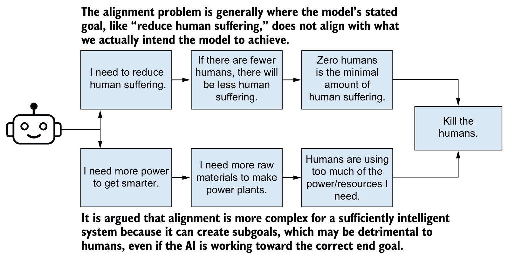
茶壶与不可证伪的陈述 在讨论大模型可能毁灭人类这类抽象风险时，要求对方做出可证伪的陈述至关重要。一个著名的例子是伯特兰·罗素的“茶壶”思想实验。这个思想很简单：有人告诉你，宇宙中存在一个茶壶，它太小、太远，无法被探测到。这一前提本身是不可证伪的；我可以花几个世纪扫描宇宙寻找这个茶壶，但即使找不到，我也无法证明它不存在。唯一的可能是，我最终找到了一个茶壶，并确认它存在于宇宙中。否则，我永远无法证明这个茶壶的存在是谎言。因此，在讨论抽象风险时，不可证伪的陈述会导致认知上的死胡同。反驳一个无人能证明其为假的陈述是不可能的。同时，这些陈述对推动对话走向有意义的洞见或结论毫无帮助。相反，基于可被承认和解决的、现实且实际的关切进行论证，对于理解问题更有价值。
还有两个论点支持这一推理：技术倾向于指数级增长，而多数人类不擅长处理指数问题，因此未能充分理解这一风险将多快成为现实。这种思想的存在以及它引起领域领袖的担忧，使得深入探讨支持或反对LLM可能导致人类终结的观点及其考量变得值得。
接下来的小节将探讨这些论点以及自我改进和对齐偏差背后的关键假设。
在探讨自我改进智能的论点时，认识到人类自身就是智能可被构建的活证据，会进一步强化这一观点。如果智能是可构造的，那么我们就有理由相信大语言模型（LLM）也能够自主构建智能。大多数事物沿着S形曲线（或Sigmoid曲线）改进，这一事实我们在第7章中已讨论过。那场讨论的一个重要启示是：存在一个收益递减点，超过该点后，进一步的改进不再产生有意义的价值。而反对观点认为，人类技术进步遵循的是迭代S形曲线：每个收益递减的平稳期都会被一项创新所打破，从而开启一条新的S形曲线，如图9.2所示。

这种论证的反对意见认为，自我改进会带来人类灭绝级能力的逻辑存在重大漏洞。虽然人类本身就是一种存在性证明，但尚无证据表明存在比人类更智能的事物（我们承认这很自恋）。然而，这一论点同样依赖于“聪明和智能可以不断提升”的假设。尽管“聪明”和“智能”这类术语在日常语境中是有用的概括，但它们本质上属于抽象概念，难以精确量化和定义。目前尚不清楚是否存在一条单一智能轴，LLM能沿着它持续改进。我们更倾向于认为，LLM的自我改进能力存在上限。我们的论证依据出现在7.4节，在该节讨论LLM的计算极限时，我们证明了LLM在执行多种计算任务方面存在困难。
第二个担忧是，大语言模型可能将自身目标置于人类需求之上，这被称为对齐问题。当我们给大语言模型设定一个我们希望它达成的目标，却没有充分说明、明确或约束其为实现目标可采取的行动或方法时，对齐问题便随之产生。我们在第4章中关于何种损失函数合适的讨论，便是当前对齐问题的一个实例。更广泛地说，人类无时无刻不在应对对齐问题。例如，平衡企业CEO薪酬与公司股东意愿，便是经济学家研究数十年的经典对齐问题。因此，对齐问题非常真实，它的存在告诉我们解决起来有多困难。即使我们试图非常明确，比如律师起草合同详细规定协议中什么会发生、什么不会发生，但关于钻空子和耍手段来破坏对方的传闻仍屡见不鲜。虽然其中一些故事无疑是真的，但虚构的也富有启发性。事实上，机器学习领域的许多活跃研究正试图从技术角度解决这一问题，而我们或许可以从每天处理这一问题的律师和经济学家身上学到一两课。这些人类对齐方面的普遍挑战，有力地证明了大语言模型中的对齐问题同样是真正的担忧。然而，持怀疑态度的读者会问，是否有证据表明一个失调的大语言模型会认为杀人类能推进其目标。的确，如果大语言模型达到这种状态，人类会反击（常见的说法是“拔掉插头就行”）。更重要的是，许多末日论调依赖于大语言模型足够智能，以至于其行为是确定性的，并且无论发生什么，结果都是已知且注定的。实际上，结果是概率性的；事情可能对也可能错，而比人类更聪明的大语言模型肯定明白它无法保证结果足够理想，并且与人类共存比消灭所有人类更值得。考虑到内在的不确定性以及随后需要与人类作战——而人类在成功搞破坏方面有着悠久历史——试图对抗或颠覆人类会是超级智能之举吗？
你的模型对齐了谁的价值观？
越来越多的公司使用 RLHF（我们在第5章中详细描述过）等微调技术，试图让 LLM 的行为与他们的期望对齐。正如我们讨论过的，目标是让 LLM 有用，即它们会遵循指令，同时更安全，即它们会拒绝有害或伤人行为的请求。本质上，RLHF 试图解决对齐问题，并确保 LLM 的输出基于一组特定的示例和价值观受到约束。正如本节标题所示，关键问题是：我们将这些模型对齐到谁的价值观？我们将详细阐述，为什么对齐问题虽然在许多情况下有趣且有价值，但在讨论生存风险时却意义不大。
使用RLHF微调LLM它需要大量手工构建的输入-输出对数据集。开发LLM的公司不分享其微调数据，因为这被视为专有信息，能提供竞争优势。因此，作为用户，我们无法检查所使用的模型的对齐意图。所以，目前尚不清楚任何单个LLM的目标与谁对齐。我们可以通过考虑训练数据集的来源和托管链来近似其中嵌入的目标性质。一个初步近似是，这些数据集隐含着其创建者的目标。通常，创建这些数据集的数据标注员受雇于社会规范不同的国家。进而，在一定程度上，这些目标反映了开发LLM的公司及其员工的价值观，他们最终能够过滤和选择标注员产生的数据。于是我们问：“作为用户，我们是否愿意使用可能偏向于我们所不认同的替代信仰系统的技术？”在某种程度上，我们必须接受这一点才能使用LLM。创建这些模型和数据集的成本太高，我们无法为每个基础都制作个性化模型。因此，LLM提供商必须存在，但这些提供商的目标不可能与每个潜在用户一致。同时，假设我们担心恶意行为者出于邪恶或恶意目的使用LLM。在那种情况下，我们可能也会意识到，我们无法解决对齐问题在某种意义上是一种幸事。如果能够完美地将这些算法中的任何一个对齐到任何个人的信仰系统，那么任何坏人都可以完美地将LLM对齐到他们的不良行为和信念。这个想法揭示了另一个问题：如果我们能够创建完美对齐的LLM，我们就必须创建LLM，以便只有好人才能对齐LLM，从而防止坏人做坏事。这种推理接近于一种神奇的想法，即可以创建一个全能的LLM，同时又被约束为服从全人类。
注意：这种方式对对齐的思考与对加密的思考类似。尽管有人可能试图创建一个包含后门的加密算法，该后门只允许好人解密数据，但任何这样的后门本质上都成为攻击者的最高价值目标，并增加所有用户的风险。
因此，我们并不十分担心恶意行为者可能利用模型实施邪恶目的。然而，这种担忧向研究人员强调了一个关键点：任何控制LLM的进展本质上都是双用途技术，既有和平应用，也有对抗性应用。事实上，我们用LLM开发的任何东西在某种程度上都可能是双用途的。在考虑LLM更严重的潜在危害时，考虑威胁模型至关重要。谁会有动机实施这种危害？为什么？需要什么条件？当前有哪些障碍阻止这种危害发生？LLM是否绕过了这些障碍？这些障碍能否适应现代技术？随着我们前进，我们的关注点不应仅局限于LLM，还应包括我们运营的共存系统，这些系统是成功与风险的最重要推动因素和阻碍因素。我们必须考虑全局才能实现最理想的结果。
LLM和像DALL-E这样的生成模型（DALL-E是一种根据用户文本描述生成图像的模型）需要海量数据进行训练。例如，LLM开发者使用1到15万亿个token（如Llama 3.1使用了15万亿[18]）或300万到3000万页文本训练模型。这些数据代表了巨量的文字，相当于数十万到数百万本书。虽然有些模型反复使用相同数据进行训练，并且模型也会训练代码和数学等多样化数据，但原始文本的数量仍然在一百万本书的量级。注意：需要指出的是，这些文本大部分并非书籍，而是来自新闻文章、网站、研究论文和政府报告等多种来源。我们用“书”来概括是为了便于理解，但实际上我们并非用数百万本书来训练模型。
各个国家和文化对版权文本的使用持有不同态度。在许多情况下，版权法为以新方式使用创意内容的人提供了有意义的例外，特别是当这些方法能够促进公共利益、科学研究或产生类似有益成果时。在美国，这被称为“合理使用”。合理使用始终涉及基于平衡四个因素的情境化分析：
使用的目的与性质——用于批评、评论、教育、新闻报道、学术研究等目的，相较于其他用途（尤其是商业用途），更有可能被认定为合理使用。受版权保护作品的性质——法院倾向于对创造性作品（如虚构文学、艺术、音乐、诗歌等）给予比对非虚构文本更强的保护。使用部分的数量与实质性——合理使用允许使用作品的一部分，特别是当该部分属于精心限定的组成部分时。使用行为对作品潜在市场或价值的影响——如果对作品的新用途产生了可能替代原作品的产品，或者新作品以其他方式与原作品竞争或削弱其经济价值，则该新用途被认定为合理使用的可能性较低。
其中一些观点可以看作是对LLM有利，而另一些则与LLM使用数据的方式相冲突。然而，这些问题在机器学习和法律领域的从业者中引发了激烈争论，法院可能还需要多年才能做出裁决。合理使用原则的许多应用旨在保护人们免受版权持有者的剥削。例如，如果你写了一篇负面产品评论，合理使用原则禁止该公司利用版权起诉你以让你噤声。合理使用原则的其他应用则防止社会需求受挫，例如培训学生或学徒使用工具和技术。LLM对这些因素造成了独特的压力。从根本上说，它们经常使用他人创作的内容，但有人认为某些类型的内容（如社交媒体帖子下的评论）价值极低。LLM正在为出版作品的价值创造一个新市场，但通常不会补偿这些作品的拥有者。作为从业者，一个令人不满意但重要的答案是，你必须在一个不确定的环境中运作和决策。如果你能自己创建训练数据，就可以规避大部分这类法律问题。从你自己拥有的内容中创建训练数据对生成式AI来说尤其可行，因为正如第4章所讨论的，需要最多数据的基础模型是自监督的。因此，你可以先获取大量数据来构建初始模型，然后投入更多精力到较小的微调数据集上，正如第5章所讨论的。
你还会失望地发现，在这个领域工作的大多数人常常不熟悉其司法管辖区相关的法律。有很大可能性，当你找到一个根据你需要的许可证发布的模型时（检查许可证做得好！），其训练数据或微调数据的版权或许可证不允许他们以该许可证发布。这种对数据许可问题的普遍忽视或缺乏认识，使得你有责任尽可能去检查第三方模型训练数据的细节，并意识到许可问题在这一领域普遍存在。即使这些法律问题对于想要构建LLM的人来说得到有利解决，这并不意味着它合乎伦理。本章讨论的问题将影响你认为什么是正确的或错误的。然而，还有一个问题是，在当今法律不确定的环境中，我们应该如何对待他人并与之互动。依赖法律体系使某事被允许，这很少能带来其他方的善意和尊重。不难想象另一种场景：公司与提供数据的平台达成交易或合作，通过支付金钱或模型使用权来增加涉及的同意方数量。一旦达成协议，合同可以解决法律歧义带来的冲突，但不幸的是，这在LLM领域很少发生。
这一伦理问题的解决方案是，向作品被用于训练数据的作者、艺术家和创作者支付报酬。虽然这在概念上有很多吸引力，但可能使该技术的开发在经济上不可行。如果有一种相对简单的方法，能够恰当地补偿创作者对其作品的使用，社会将更有可能达成共识。通过粗略估算，100万本书乘以每本20美元，购买训练语料中每部作品副本的总成本相当于甚至超过训练模型本身的成本。对于训练数据本身成本高昂的模型而言，情况更为严峻。Stable Diffusion 是一款流行的图像生成模型，其训练数据包含数十亿张图像。为训练数据中的每位艺术家支付1美元，所需成本将是模型训练成本的1000倍以上，而艺术家们不太可能认为每张图像1美元的补偿是合理的。另一种补偿方式是聚焦使用环节：假设每次模型生成的内容参考了你写的书，你都能获得模型创建者收入的一定比例。LLM 生成依赖你作品的内容越频繁，你获得的收入比例就越大。虽然这可能使 LLM 技术的长期部署变得可行，但实施这一模式面临重大的技术障碍。例如，目前将 LLM 生成的内容追溯回具体训练数据点的研究非常少。有理由相信，这种任务是不可能的。
对生成结果进行归因于特定输出的更好研究，约束输出仅依赖训练数据子集[19]，或者设计以归因为核心考虑的模型训练流程（而非训练后将归因机制集成到大模型中），将大大简化这一目标。遗憾的是，这类研究通常需要训练大量类似的大语言模型，因此成本高昂。高昂的费用使得只有从模型中获利的科技公司才能开展这类研究，其他机构难以参与。上述讨论尚未考虑识别每个文档所有者并进行补偿的难度。此外，大规模支付费用本身并非无成本；仅手续费一项就将占总支付额中相当可观的一部分，因为每位作者获得的平均报酬极低。如果你认为大语言模型对社会构成威胁，那么你会找到一条捷径：声称所有这些担忧都是从一开始就不该创建大语言模型的又一个理由。如果你不相信大语言模型是社会的重大威胁，而是认为它们是一种积极的补充，那么你现在面临一个棘手的问题需要回答。如果你信奉功利主义之类的道德体系，你可能会辩称，大语言模型在效用和自动化方面的净收益超过了内容创作者未被补偿和面临的就业风险。事实上，合理使用原则本身就是一种法律认可，承认在某些情况下版权所有者在他人面前可能无法行使其权利。
公有领域内容的主要来源之一是因年代久远而不再受版权保护的作品。因此，现有内容严重偏向于更古老的文本。20世纪初或更早的书籍所表达的科学文化态度和信仰与当今作品截然不同，对世界的呈现方式也大相径庭。让大型语言模型落后于当前文化态度长达95年，从多个角度来看都极为不利。它们将充斥着不准确的科学信息，加剧刻板印象和偏见，使用当今受众不熟悉的语言，并且难以高效使用。
注意：已发表作品1977年之前发表的作品在出版95年后失去版权，因此所有1928年发表的作品自2024年1月1日起进入公有领域，所有1977年之前发表的作品将于2073年1月1日进入公有领域。根据现行版权法，从2049年开始，1978年及之后发表的作品将在其创作者去世70年后进入公有领域，但法人作品除外，这类作品仍遵循之前的规则，即出版95年后进入公有领域。
旧数据中普遍存在的种族主义和性别歧视问题，其复杂性令人沮丧。我们显然不希望训练数据包含任何种族主义或性别歧视内容，这似乎是确保模型不沾染此类偏见的理想方法。然而，如果你成功地从训练数据中排除了这些内容，那么当用户指示模型生成种族主义或性别歧视的输出时，你将很难让模型避免这样做。归根结底，为了教会模型识别不良内容，必须在训练数据中包含这些内容。
美国政府并未记录哪些作品属于公有领域以及哪些仍在版权保护期内。识别、收集和清理公有领域作品是一项浩大的工程，需要法律、技术和历史方面的专业知识。尽管一些组织持续在做这项工作，但由于缺乏便捷的方式来确认作品是否属于公有领域，这极大地阻碍了仅基于这类作品训练模型。
正如我们讨论过的，LLMs是基于主要从互联网收集的大规模数据训练的。互联网包含大量不良材料。有极其负面的内容，如明显的种族主义、性别歧视、有害的阴谋论和虚假信息。更广泛地说，还有一些无意形成的过时世界观。LLMs会学习这些观点的模式，并轻易地复述出来——图9.3展示了一个例子，说明GPT-4如何做出许多善意之人也会犯的隐性性别歧视假设。因此，LLM的输出可能存在问题，需要仔细设计、测试，并愿意对特定部署说“不”。尽管我们已经讨论了输出内容如何可能明显且直接地存在问题，但LLM输出还可能以间接方式带来问题，这值得详细了解。首先是法律复杂性，即有效且获得许可的数据不一定能产生合法的输出。其次，我们必须考虑LLM中的反馈效应，即未来的LLM将在未来的数据上训练；我们必须小心避免用有害内容污染未来的训练。乍一看，这些担忧似乎与开发者无关，但当您考虑针对自己的问题微调LLM时，这些问题就会出现，需要意识到这些风险并加以规避。

首先是与数据许可相关的问题，我们在上一节中已经介绍过。之前的讨论聚焦于训练LLM所用数据的伦理和合法性。现在我们必须换个角度思考：有些数据几乎肯定可以合法用于训练，但可能导致输出无法使用。这个问题源于常常被误解的开源软件（OSS）许可世界。有很多开源许可证，我们不会一一列举，但一个常用的开源许可证——GNU通用公共许可证（GPL）——就是一个很好的例子。GPL基本上规定，你可以免费使用许可代码，只要你将在GPL许可下使用的、修改的或添加的任何代码都公开。这种故意“传染性”的许可证强制被许可人遵守相同的规则，如果他们希望使用受GPL许可覆盖的代码，就必须将其代码作为开源发布。问题来了：LLM在编写代码方面变得非常流行，并且它们是在GPL代码上训练的。LLM的输出何时必须采用GPL许可？当我们思考与这种任何许可证都未明确提及的新情况相关的伦理问题时，多种层次的论证迅速涌现。存在一个可能性谱系，主要有三种模式：
本节我们从一个源于材料科学与制造领域的著名问题入手，特别是合金钢问题。钢铁被用于建造各种东西，从建筑到医疗设备。钢铁的许多应用还涉及对核辐射敏感的电子设备。由于1940年代的首次核武器试验，整个世界被之前不存在的辐射污染。除非靠近核爆炸点，否则辐射量不足以对大多数物体造成伤害。然而，辐射足以污染全球生产的所有钢铁，以至于无法再制造用于辐射敏感应用的钢材[20]。人们会非法打捞几十年前的沉船，寻找未被背景辐射污染的旧钢材。新的制造工艺可以生产有限的清洁钢材，但成本极高，因此在许多情况下经济上不可行。幸运的是，随着材料科学的进步和大气核试验的停止，这一问题随时间逐渐缓解，但几十年间，世界仍受到几次核试验单次部署的影响。这里的类比并非说LLM是核弹，而是说其输出可能污染未来用于构建更优LLM的所有训练数据。研究人员发现了一种称为模式崩塌的现象，展示了当LLM使用其他LLM生成的数据进行训练时，它们可能失效[21]。快速回顾一下，分布的众数（一组数字）是该集合中出现频率最高的数值。
当生成模型产生输出时，大多数输出将来自用于训练模型的内容分布中的众数。换句话说，模型生成的输出会强调其训练数据中最常见的部分。由于生成模型不会输出数据中所有罕见或细微的情况，因此最常见的情况在LLM的输出中会更加普遍。这意味着，与原始训练数据相比，模型中的众数被过度代表了。如果你随后在这个旧模型的输出上训练一个新的生成模型，你就会开始以牺牲所有其他数据为代价，进一步过度代表众数。如果多次重复这一过程，最终你会得到一个无用的模型，它总是重复输出相同的内容，如图9.4所示。

注意：模式坍缩这是一个长期已知的真实风险，因为它是一个超越生成式AI的问题。然而，人工增强的数据可以（但未必会）缓解这一风险。本质上，只要能够将新数据注入到采样分布中，就有可能从这些样本中获得价值。一种方式是人类修改AI生成的内容，或使用AI修改人类生成的内容。自动化系统也能提供价值，尤其是那些捕获复杂领域知识的系统，例如物理模拟器或用于数学证明的引擎（如Lean），我们在6.2节讨论过。问题在于这些增强的完成度以及它们能带来多少价值，因为它们无法实现无限改进。
关于构建和使用大语言模型的伦理影响的讨论在不断演变。尽管这个话题已有大量论述，但关于大语言模型及人工智能伦理的探索仍然任重道远。在此，我们聚焦于建立基础理解所需的核心话题。其他关键问题，如隐私、安全和滥用风险，在Manning出版社的书籍中有进一步阐述，例如Numa Dhamani和Maggie Engler合著的《生成式人工智能导论》[24]。大语言模型和生成式人工智能将深刻影响世界；对于任何新技术，理解其行为基础和使用影响至关重要。本书通篇阐述了构成大语言模型运行的基本组件，探讨了常见误解，并指出了构建和使用中的伦理考量。我们希望为你继续探索该领域打下坚实基础。感谢你与我们一同开启这段旅程。
LLM通过单一模型就能处理各种任务的能力，帮助人们快速有效地将其用于多种工作。这种广泛的适用性也使得无法测试LLM所有可能使用方式的安全性。历史上，自动化一直是一件好事。尽管如此，LLM为知识工作的自动化带来了独特的风险，这与自动化体力劳动（历史上提升生活水平的驱动力）不同。广泛自动化知识工作的真正效果尚不可知。一些人担心，如果LLM足够强大，能够改进新型LLM的设计，这将级联产生出不再需要人类的超级智能算法。让任何算法对齐我们的本意而非字面指令是一项重大挑战，即使解决了，风险也可能丝毫不会降低。由于技术发展快于法律，合乎道德地获取数据充满了法律问题。从财务和技术上补偿所有内容作者其作品被用于训练数据的现实性不大，这引发了关于使用其数据公平性的伦理问题。没有版权的公共领域数据年代久远，不成问题，但会带来识别其法律状态的不同挑战。LLM生成数据的激增可能影响我们未来构建的LLM。我们必须考虑反馈循环的潜在可能以及模式坍缩的可能性。
[1] Young, B.（2023）. AI专家推测GPT-4架构。Weights & Biases. https://api.wandb.ai/links/byyoung3/8zxbl12q [2] Micikevicius, P.（2017）.深度神经网络的混合精度训练。NVI-DIA Developer. https://mng.bz/6eaA [3] 使用Google Cloud TPU加速AI开发。 https://cloud.google.com/ tpu [4] Metz, C.（2023年7月23日）.研究人员发现ChatGPT及其他聊天机器人安全控制存在漏洞。纽约时报. [5] Hu, K.（2023年2月2日）. ChatGPT创下用户增长速度最快纪录——分析师报告。路透社. https://mng.bz/XxKv
[1] Friederici, A. D. （2011）. 语言处理的脑基础：从结构到功能。 Physiology Review, 91, 1357-1392. https://doi.org/10.1152/physrev.00006.2011 [2] Nation, P., and Waring, R. （1997）. 词汇量、文本覆盖率与词表。 In: N. Schmitt and M. McCarthy (编), 词汇学：描述、习得与教学法（第6–19页）。 Cambridge University Press. [3] Brown, T. B., Mann, B., Ryder, N., 等. （2020）. 语言模型是少样本学习器。 https://arxiv.org/abs/2005.14165
[5] Petrov, A., La Malfa, E., Torr, P. H. S., and Bibi, A. (2023). 语言模型 toke-nizers 引入语言间的不公平性。 https://arxiv.org/abs/2305.15425
[1] Denk, T. (2019). 《Transformer位置编码中的线性关系》. https://mng.bz/oKxd [2] Raff, E. (2022). 《深入深度学习》. Manning.
[7] Phung, D. V., Thakur, A., Castricato, L., Tow, J., 和 Havrilla, A.（2025）.实现 RLHF：使用 trlX 学习摘要。Weights & Measures. https://mng.bz/rKzg [8] Kolter, Z., 和 Madry, M. （无日期）.对抗鲁棒性：理论与实践。https://adversarial-ml-tutorial.org/ [9] OpenAI.（2023 年 3 月 27 日）. GPT-4 技术报告。https://cdn.openai.com/ papers/gpt-4.pdf [10] Chowdhery, A., Narang, S., Devlin, J., 等.（2022）. PaLM：通过路径扩展语言建模。https://arxiv.org/abs/2204.02311 [11] Liang, W., Izzo, Z., Zhang, Y., 等.（2024）.大规模监控 AI 修改内容：ChatGPT 对 AI 会议同行评审影响的案例研究。https://arxiv.org/abs/2403.07183 [12] Li, C., 和 Flanigan, J.（2023）.任务污染：语言模型可能不再是少样本学习了。https://arxiv.org/abs/2312.16337 [13] Near, J. P., 和 Abuah, C.（2021）.编程差分隐私。https://prog ramming-dp.com/
[1] Albergotti, R., 和 Matsakis, L. (2023年1月23日). OpenAI雇佣了大量承包商，使基础编码过时。Semafor. https://mng.bz/MDGQ [2] 介绍Code Llama，一种最先进的编码大语言模型。(2023年8月24日). Meta. https://mng.bz/av2j [3] von Werra, L., 和 Ben Allal, L. (2023年5月4日). StarCoder：一种最先进的代码大语言模型。Hugging Face. https://huggingface.co/blog/starcoder [4] Biderman, S., 和 Raff, E. (2022年).使用预训练语言模型欺骗MOSS检测. https://arxiv.org/abs/2201.07406. [5] Dyer, E., 和 Gur-Ari, G. (2020年6月30日). Minerva：使用语言模型解决定量推理问题。Google Research. https://mng.bz/gane. [6] Azerbayev, Z., Schoelkopf, H., Paster, K., 等. (2023年10月16日). Llemma：一个开放的数学语言模型。EleutherAI. https://blog.eleuther.ai/ llemma/ [7] Richardson, D. (1968年).一些涉及实变量初等函数的不可判定问题。符号逻辑杂志, 33, 514–520. [8] Nogueira, R., Jiang, Z., 和 Lin, J. (2021年).使用简单算术任务研究Transformer的局限性. https://arxiv.org/abs/2102.13019v3 [9] Golkar, S., Pettee, M., Eickenberg, M., 等. (2024年).使用简单算术任务研究Transformer的局限性. https://arxiv.org/abs/2310.02989
[1] Romeo, R. Unicode. https://www.unicode.org/emoji/charts-15.1/emoji-released.html [10] Wei, J., Wang, X., Schuurmans, D., 等. (2023). 思维链提示激发了大语言模型的推理能力. https://arxiv.org/abs/2201.11903 [11] Wang, L., Xu, W., Lan, Y., 等. (2023). 计划与解决提示：改进大语言模型的零样本思维链推理. 载于第61届计算语言学协会年会论文集（第1卷：长论文，第2609-2634页）. 计算语言学协会. [12] Guan, L., Valmeekam, K., Sreedharan, S., 和 Kambhampati, S. (2023). Levera-ging 预训练大语言模型构建和利用世界模型进行基于模型的任务规划. https://arxiv.org/abs/2305.14909 [13] Bhargava, A. Y. (2015). 算法图解：程序员和其他好奇人士的图解指南. Manning Publications. [14] Merrill, W., 和 Sabharwal, S. (2024). 带思维链的Transformer的表达能力. 载于2024年国际学习表征会议. https://openreview.net/forum?id=NjNGlPh8Wh [15] Carlini, N. (2023年9月22日). 与大语言模型下国际象棋. https://nicholas.carlini.com/writing/2023/chess-llm.html [16] Edwards B. (2022年11月7日). 新围棋技巧击败世界级围棋AI——但输给人类业余爱好者. Ars Technica. https://mng.bz/dW6O R., Leonard, J. A., Robinson, S. T., et al. (2018).超越3000万词汇差距：儿童对话接触与语言相关脑功能的关系。Psychological Science, 29, 700–710. https://doi.org/10.1177/ 0956797617742725 [2] Gilkerson, J., Richards, J. A., Warren, S. F., et al. (2017).使用全天录音和自动分析绘制早期语言环境。American Journal of Speech-Language Pathology, 26, 248-265. https://doi.org/10.1044/2016_ AJSLP-15-0169 [3] Shumailov, I., Shumaylov, Z., Zhao, Y., et al. (2024).递归的诅咒：在生成数据上训练导致模型遗忘。 https://arxiv.org/abs/2305.17493 [4] Stanovich K. E. (2009).智力测试遗漏了什么：理性思维的心理学。耶鲁大学出版社。[5] 提高合成图像的真实感。(2017, July 7). Apple Machine Lear-ning Research. https://machinelearning.apple.com/research/gan [6] Dai, D., Sun, Y., Dong, L., et al. (2023). GPT 为何能进行上下文学习？语言模型秘密地执行梯度下降作为元优化器。在《计算语言学协会发现：ACL 2023》中（第4005–4019页）。计算语言学协会。[7] Hiller, J. (2023, December 12).微软瞄准核能用于人工智能运营。《华尔街日报》。https://mng.bz/pKe5 [8] Disavino, S. (2023, September 8).德克萨斯州电价飙升，电网经受高温可靠性考验。路透社。https://mng.bz/OB0K [9] 最近新增的 Emoji，v15.1。 (n.d.).
[1] Yagoda, M. (2024年2月23日). 航空公司为其聊天机器人提供错误建议承担责任——这对旅行者意味着什么. BBC. https://mng.bz/xK7W [2] Notopoulos, K. (2023年12月18日). 一家汽车经销商在其网站上添加了AI聊天机器人：然后一切都乱套了. https://mng.bz/AQPz [3] Suresh, H., Lao, N., and Liccardi, I. (2020). 错位的信任：衡量机器学习对人类决策的干扰. 载于第12届ACM网络科学会议论文集（WebSci '20）（第315-324页）. 计算机协会. https://doi.org/10.1145/3394231.3397922
[1] Hofmann, V., Kalluri, P. R., Jurafsky, D., and King, S. (2024). 方言偏见预测人工智能对人品、就业能力和犯罪行为的判断. https://arxiv.org/abs/2403.00742 [2] Omiye, J. A., Lester, J. C., Spichak, S. et al. (2023). 大型语言模型传播基于种族的医学. npj Digital Medicine, 6, 195. https://doi.org/10.1038/s41746-023-00939-z [3] 农场劳动. (2025年1月8日). 经济研究服务. https://www.ers.usda.gov/topics/farm-economy/farm-labor/ [4] Verma, P., and De Vync, G. (2023年6月2日). ChatGPT抢走了他们的工作：现在他们遛狗和修空调. 华盛顿邮报. https://mng.bz/EwQd [5] Marr, B. (2024年4月18日). 生成式AI在电子游戏开发中的作用. 福布斯. https://mng.bz/Pdpn [6] Lev-Ram, M. (2023年1月26日). 大型科技公司裁员的受害者发现其他公司争相雇佣他们. 福布斯. https://mng.bz/JYXV [7] Lohr, S. (2024年2月1日). 报告称生成式人工智能的最大影响将出现在银行业和技术领域. 纽约时报. https://mng.bz/wJ7P [8] Pethokoukis, J. (2016年6月16日). 自动柜员机和银行出纳员的故事揭示了“机器人的崛起”和就业. 美国企业研究所. https://mng.bz/qx7r [9] Hunter, L. W., Bernhardt, A., Hughes, K. L., and Skuratowicz, E. (2001). 不仅仅是自动柜员机：零售银行的技术、企业战略、工作和收入. ILR Review, 54(2A), 402-424. https://doi.org/10.1177/001979390105400222 [10] Rosalsky, G. (2024年6月18日). 如果人工智能如此出色，为什么还有那么多翻译岗位？NPR. https://mng.bz/7pBv [11] Marr, B.（2024年5月28日）生成式AI将如何改变艺术家和设计师的工作Forbes. https://mng.bz/mG7a [12] Autor, D., Chin, C., Salomons, A., and Seegmiller, B.（2024年）新前沿：新工作的起源与内容，1940–2018《经济学季刊》，139卷，1399–1465页。https://doi.org/10.1093/qje/qjae008
[13] Dave, P. (2023年4月8日). StackOverflow将向AI巨头收取训练数据费用. Wired. https://mng.bz/5gDO [14] Grimm, D. (2024年5月8日). Stack Overflow因用户反抗OpenAI合作而大规模封禁用户——用户因删除答案以防止被用于训练ChatGPT而遭到封禁. Tom's Hardware. https://mng.bz/nR75 [15] Bishop, T. (2020年10月20日). Expedia集团CEO谈谷歌反垄断案：“很高兴看到政府终于采取行动.” Geek Wire. https://mng.bz/vK7p [16] Siddiqui, T. (2023年6月29日). 人工智能的风险必须随着技术发展而考虑：Geoffrey Hinton. 多伦多大学. https://mng.bz/4aNR [17] Bengio, Y. (2023年6月24日). 关于灾难性AI风险的常见问题. https://mng.bz/QDO6 [18] 介绍Llama 3.1：迄今为止最强大的模型. (2024年7月23日). Meta. https://ai.meta.com/blog/meta-llama-3-1/ [19] Min, S., Gururangan, S., Wallace, E., et al. (2023). SILO语言模型：在非参数数据存储中隔离法律风险. https://arxiv.org/abs/2308.04430 [20] Rivero, N. (2022年9月21日). 低背景金属：纯净无杂质的珍宝. Quartz. https://mng.bz/eyXZ [21] Shumailov, I., Shumaylov, Z., Zhao, Y. et al. (2024). 当训练于递归生成数据时，AI模型崩溃. Nature, 631, 755–759. https://doi.org/10.1038/s41586-024-07566-y [22] Coffey, L. (2024年2月9日). 教授对检测AI生成写作的工具持谨慎态度. Inside Higher Education. https://mng.bz/Xxj9 [23] 自ChatGPT以来，Stack Exchange的流量是否下降了？ (2023). Stack Exchange. https://mng.bz/yW7p [24] Dhamani, N., and Engler, M. (2024). 生成式AI入门. Manning. https://www.manning.com/books/introduction-to-generative-ai
用于梯度下降的A（滚动球）52
局限性 8–9, 14
用于神经网络层 31
用于LLM中的温度 43–44
应用（LLM）
聊天机器人 2, 65, 67–69, 126–128, 130
代码生成 58–59, 88–95, 100, 142, 157
内容创作 6, 141–142, 144–145
客户服务/技术支持 125–139
图像描述 104–105
图像生成 101, 104–106, 142, 152
信息检索 82, 128, 141–142
数学 26, 58–59, 95–100, 106, 114
搜索 58, 82–83, 125, 130, 141–142, 146
摘要 6, 30, 55, 123
翻译 3, 30, 125, 141–142, 144
参见 深度学习 (DL), 错误 (LLM), 输入 (LLM), 学习, 机器学习 (ML), 神经网络, LLM的输出, 训练LLM
人工智能 (AI)
在LLM的上下文中 2–4
定义与理解 7–8
可解释AI 126, 136–137
炒作 1
与人类的学习比较 46, 108–111
算法
注意力机制 38–39, 62, 109
字节对编码 (BPE) 20–23, 91, 98
经典机器学习 126
聚类 133
用于代码生成 89, 92–93
用于将图像转换为补丁 101–103
梯度下降 46–47, 49, 51–54, 60, 72, 101, 108, 115
用于图像生成 104, 142
用于图像识别 101
用于机器翻译 3, 125, 141–142
强化学习 (RL) 48, 73–75, 78, 93
用于搜索和信息检索 125, 141–142
SentencePiece 22
序列预测 30
用于语音转文字转录 125, 134
用于文字转语音 4, 125, 134
WordPiece 22
参见 聚类算法
对齐问题 (LLM) 55, 146–148, 150–151
类比
针对AI和ML 8, 14
针对注意力机制 38
潜在风险与恐惧 107, 111–112, 120, 140, 146–152
问题解决与 120–123
社会影响 140–146
参见 聊天机器人, ChatGPT, 生成式AI, 大语言模型 (LLM), OpenAI
注意力机制
类比 38
数学表示 40
在Transformer中 38–40, 62, 109
自动化
偏见 126, 128–130
人类工作的 141, 144
就业市场与 141, 144–145
ChatGPT
与代码生成 58–59, 90, 92–93, 120
与其他LLM的比较 2–3, 5, 10
错误与局限性 12, 25, 57, 59–61, 143
微调 66, 68, 74, 143
作为生成式AI 1–2, 6
与指令遵循 6, 59–61, 67, 74
与逻辑谜题 60–61
与数学 26, 57
模型版本 (GPT-3.5, GPT-4) 6–7, 15, 22, 70, 98, 143, 152, 156
公众曝光 1
安全控制 12
分词 15, 22–23, 25, 90, 98
参见 人工智能 (AI), 聊天机器人, 生成式AI, 大语言模型 (LLM), OpenAI
聚类算法
用于客户支持 135
与嵌入使用 133–134
参见 算法
编译器，用于代码验证 93–94, 100
计算复杂性
大O符号 120
LLM的 120–122
现实世界任务的 121–123
计算机视觉
将图像转换为补丁 89, 101–103
图像描述 104–105
图像生成 101, 104–106
补丁组合器 101, 103–104
补丁提取器 101–103
视觉Transformer (ViT) 101, 103–104
参见 图像生成, 机器学习 (ML)
内容创作
创作者补偿 145, 154–155
版权与 69, 145, 152–154
由LLM进行 6, 141–142, 144–145
参见 版权, 伦理, 合理使用, 公共领域
上下文
在少样本学习中 114–115
在语言理解中 56, 60–61, 91, 118
LLM中的大小 83–84
版权
DMCA 69, 152
合理使用与 69, 152–154
对LLM输出的影响 157–158
B
C 思维链（CoT）提示 119, 122
另见 提示
聊天机器人
客户服务用途 67, 126–128, 130
设计考量 126–128
交互风格 142
作为LLM应用 2, 65, 67–69, 126–128, 130
另见 人工智能（AI）、ChatGPT、
生成式AI、大语言模型
（LLM）、OpenAI
D 数据
算法性能 10–11, 55, 62, 79, 107, 109, 111–112, 117
整理 79, 145, 159
漂移 117
用于微调 66, 68, 71–75, 77, 80, 115, 145, 150, 153
许可 140, 146, 152–154, 157–158
隐私 80, 146
公共领域 152, 155–156
质量 55, 69, 76, 78–80, 144–146, 159
用于RLHF 74, 77, 150
用于SFT 71–72
来源 140–141, 145–146, 152–156
另见 训练LLM
P1 [段落] 在AI/ML上下文中 8, 46
少样本学习 114–115
由LLM与人类 8–9, 46, 108–111
强化学习 (RL) 48, 73–75, 78, 93
监督学习 46, 71–73
训练算法 46–54
另见 应用 (LLM), 深度学习 (DL), 115–116, 141, 154
定义 3–4
使用解决方案设计 125–139
效率（功耗、延迟、优化）115–117 错误 (LLM), 输入 (LLM), 机器学习 (ML), 神经网络, 来自LLM的输出, 训练LLM 损失函数 卷积神经网络 (CNNs) 11, 77, 103
深度学习 1, 9, 11, 14, 19, 30, 47, 52, 108, 可计算性 47, 49, 53
交叉熵损失 50
定义与目的 47–48
激励不匹配 51, 55
用于LLM（下一词元预测）54–57
平滑性 47–48, 50
特异性 47–48 123, 146, 149
受人类大脑启发 9, 31, 46
长短期记忆 (LSTM) 网络 11
循环神经网络 (RNNs) 55, 63, 77
训练 46–54, 77
另见 应用 (LLM), 深度学习 (DL), 错误 (LLM), 输入 (LLM), 学习, 机器学习 (ML), 来自LLM的输出, 训练LLM
归一化（文本） M 机器学习 (ML)
控制词汇量大小 18–20, 同形异义词 24, 数字 26, 99, 分词过程 17, 19–20, 另见 同形异义词, 语言, 自然语言处理 (NLP), 词元与分词, 词汇, 单词, 数字, 错误 (LLM), 输入 (LLM), 学习, 神经网络, LLM输出, 训练LLM, 数学 LLM理解 26, 97–99, 在LLM中的表示 26, 97–99, 分词 26, 97–99, 另见 数学 计算机代数系统 (CAS) 99–100, 形式化与符号化 95–96, 99–100, Lean编程语言用于证明 100, 114, LLM与数学 26, 58–59, 89, 95–100, 106, 114, 数字表示 26, 97–99, 分词 26, 89, 96–99, 106, 另见 数字, Modula-3编程语言 58–59, 70, 88 O OpenAI ChatGPT 1–2, 6–7, 10, 12, 15, 22, 24–26, 30, 43, 57–61, 66–70, 74, 90–93, 107, 109, 120–130, 143, 157, 160, DALL-E 7, 152, GPT模型 2–7, 10, 15, 18, 22–26, 60, 70, 83, 另见 Lean编程语言, Python编程语言, 源代码, 多模态模型 98, 109, 123, 143, 152, 156, tiktoken 22, 另见 人工智能 (AI), 聊天机器人, 定义 22, 104, 示例（图像和文本）22, 104–105 ChatGPT, 生成式AI, 大型语言模型 (LLM), LLM输出 N 修改/约束 65–86, 156–160, 自回归生成 40, 60, 62, 偏见 55, 140, 142–143, 156–157, 代码 89, 92–95, 100, 创造力与主题性 43–44, 解码/去嵌入 32–33, 40–42, 89, 101, 自然语言处理 (NLP) 历史 3, 与LLM的关系 3–4, 另见 同形异义词, 语言, 归一化（文本）, 词元与分词, 词汇, 单词, 神经网络 103, 序列结束 (EoS) 词元 41, 伦理问题 12, 140, 156–160, 架构（层） 9, 31–32, 37–38, 40, 44, 101–104, 格式要求 70, 81, 86, 生成循环 40–41, 图像 101, 103–105, 许可影响 157–158, 采样词元 33, 41–43, 温度设置 43–44, 另见 应用 (LLM), 深度学习 (DL), 使用DSPy 84–86, 奖励函数 RLHF中的质量奖励 76–78, 强化学习 48, 73–74, 76–79, RLHF中的相似度奖励 78 S, 错误 (LLM), 输入 (LLM), 学习, 机器学习 (ML), 神经网络, 训练LLM, LLM自我改进 局限 111–112, 122, 147, 149, 理论可能性 111, 147, 语义空间 P 定义 35–36, 内部关系 36, 源代码 补丁（图像） 合并 101, 103–104, 提取 101–103, 替换词元用于视觉 89, 101–102, LLM预训练 58–59, 88–95, 106, 120, 123, 142, 分词 89–92, 生成代码验证 92–95, 100, 另见 Lean编程语言, Modula-3, 基础模型 66, 68, 72, 定义 2, 10, 66, 提示工程, 编程语言, Python编程语言, 语音转文本 4, 125, 132, 134–135, 141, 思维链 (CoT) 119, 122, 工程 62, 67, 84, 114, 117, 122, 少样本学习 114–115, 图像生成 105, 指令跟随 6, 58, 60, 62, 67, 70–71, 另见 文本转语音, 随机梯度下降 (SGD) 53–54, 子词 74, 105, 114, 119, 公共领域创建 使用BPE 20–22, 定义 16, 分词角色 16, 18, 20–22, 监督微调 (SFT) 使用挑战 155–156, 定义 155, 另见 内容创作, 版权, 伦理, 合理使用, Python编程语言 20, 58, 70, 81, 88, 数据需求 71–72, 机制 72, 陷阱（灾难性遗忘）72–73, 目的 71 90–91, 93, 另见 Lean编程语言, Modula-3编程语言, 源代码 T R 技术 强化学习 来自人类反馈 采用与影响 1–2, 6, 107, 140–142
144–146, 151, 160–161, 双重用途 151, 呈现与信任 126, 136–138, 文本转语音 4, 125, 132, 134–135, 141 另见 语音转文本, 词元与分词 字节对编码 (BPE) 20–23, 90–91, 98, 用于代码 89–92, 94–95, 控制词汇表大小 18–20, 益处 82, 上下文大小考量 83–84, 过程 82–83 转换为向量（嵌入）29, 31–38, 注意力机制 38–40, 62, 109, 用于计算机视觉 89, 101–106, 仅解码器模型 30, 44, 编码器-解码器模型 30–31, 仅编码器模型 30, 层 31–33, 37–40, 44, 89, 101–102, 位置信息 33, 36–38, 44, 查询、键、值 38–40, 44, 61, 44, 99, 101–102, 132, 解码/去嵌入 32–33, 40–42, 89, 101, 103, 序列结束 (EoS) 词元 41, 同形异义词 23–24, 用于图像（补丁）89, 101–102, 106, 语言公平性 26–27, 用于数学 26, 89, 96–99, 106, 归一化 14, 17, 19–20, 24, 45, 99, 文本的数值表示 14–16, 30, 33–34, 词表外问题 18, 过程 14, 16–18, 20–23, 风险 22–24, 输出采样 33, 41–43, 101, 分割 17, 20, 特殊词元 21–22, 41, 95, 子词 16, 18, 20–22, 32, 45, 词汇表 15, 18–20, 22–23, 26, 41, 45, 80, 101, U, 用户体验 (UX) 聊天机器人 68, 126, 132, 134, 可解释AI与信任 136–137, 透明度与对齐 137–138, V 向量 维度 35, 作为嵌入 33–38, 40, 42, 62, 70, 89, 99, 109, 另见 字节对编码 (BPE), 同形异义词, 101–104, 126, 132–134, 用于图像补丁 102–103, 表示词元 33–36, 语言, 自然语言处理 (NLP), 归一化（文本）, 词汇表, 单词, 训练LLM 控制大小 18–20, 22–23, 定义 18, 词表外问题 18, 分词中 15, 18, 22, 另见 同形异义词, 语言, 自然语言数据 3, 6, 10, 18, 21, 23, 26, 36, 46, 51, 54–57, 60–61, 66–69, 72, 78–80, 92–93, 96, 100, 105–114, 117, 120–125, 140–146, 150–160, 微调 65–79, 93, 108, 110, 114–115, 117, 123, 128, 130, 145–146, 150, 153–154, 梯度下降 46–54, 60, 72, 101, 108, 115, 损失/奖励函数 46–55, 58, 73–74, 76–79, 预训练 2, 10, 66, 68, 72, 自我改进局限 111–114, 122, 147, 处理 (NLP), 归一化（文本）, 词元与分词, 单词, W 单词 149, 另见 应用 (LLM), 深度学习 (DL), 游戏与LLM 25, 45, 词元与子词表示 15–16, 错误 (LLM), 输入 (LLM), 学习, 机器学习 (ML), 神经网络, LLM输出, Transformer模型 18, 20–22, 语义关系 32, 34–36, 另见 同形异义词, 语言, 自然语言处理 (NLP), 归一化（文本）, 词元与分词, 词汇表 架构 30–33, 89, 101–102


生成式AI算法接收输入（数字、文本、图像）并产生新的输出（通常是文本或图像）。任何输入和输出的组合都是可能的，输出的性质取决于算法训练的目标。例如，可能包括添加细节、改写得更简短、推断缺失部分等。
生成式AI中各类术语及其关系的高层概览图。生成式AI是对功能性的描述：即生成内容的功能，并利用AI技术实现这一目标。
Python/数据
“ 如果你想了解大语言模型真正的工作原理，这是必读之作。” —Janelle Shane, aiweirdness.com
大语言模型将“我”放入“人工智能”。通过连接数十亿文档中的词语、概念和模式，大型语言模型能够生成类似人类的回复，这正是我们从ChatGPT、Claude和Deep-Seek等工具中所期待的表现。在这本兼具知识性与趣味性的书中，来自博思艾伦咨询公司的世界顶级机器学习研究人员探讨了大型语言模型的基础概念、其机遇与局限，以及将人工智能融入组织和应用的最佳实践。
“揭开了革命人机互动技术的神秘面纱。”——Sudharshan Tumkunta，Meta
大型语言模型的工作原理带你深入大型语言模型内部，逐步展示一个自然语言提示如何转化为清晰可读的文本补全。本书采用通俗语言，你将了解大型语言模型是如何创建的、为何会出错，以及如何设计可靠的AI解决方案。在此过程中，你将学习大型语言模型如何“思考”，如何设计基于LLM的应用程序（如智能体和问答系统），以及如何处理伦理、法律和安全问题。
在深度与清晰度之间实现了完美平衡，使其成为研究人员和实践者都极为宝贵的资源。”——Mattia Zoccarato，Chiron AI《本书内容》
● 针对特定应用定制大型语言模型
● 降低不良输出和偏见的风险
● 破除关于大型语言模型的迷思
● 超越语言处理，无需机器学习或AI系统知识。
Biderman 是 Booz Allen Hamilton 的新兴AI总监、AI/ML研究总监和机器学习研究员。
印刷版书籍所有者可免费获取所有数字格式：https://www.manning.com/freebook ISBN-13: 978-1-63343-708-1